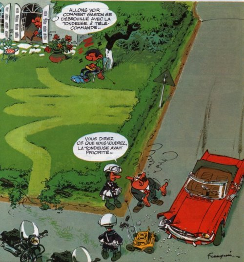
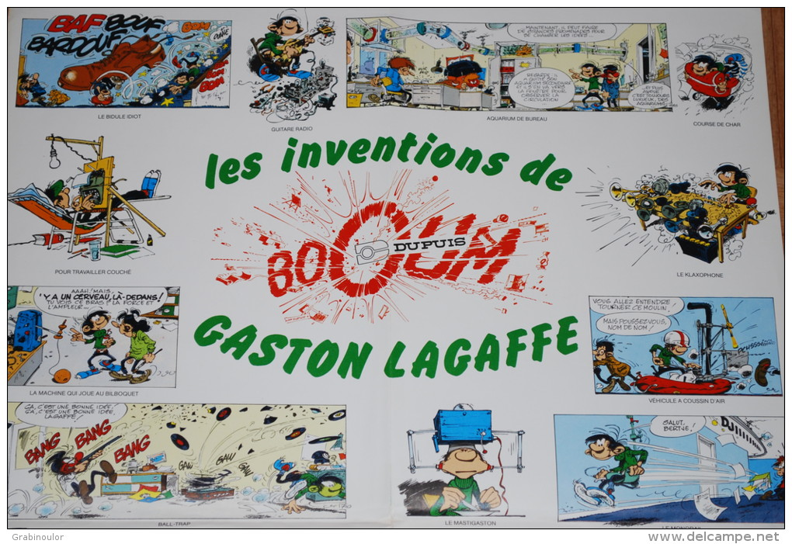
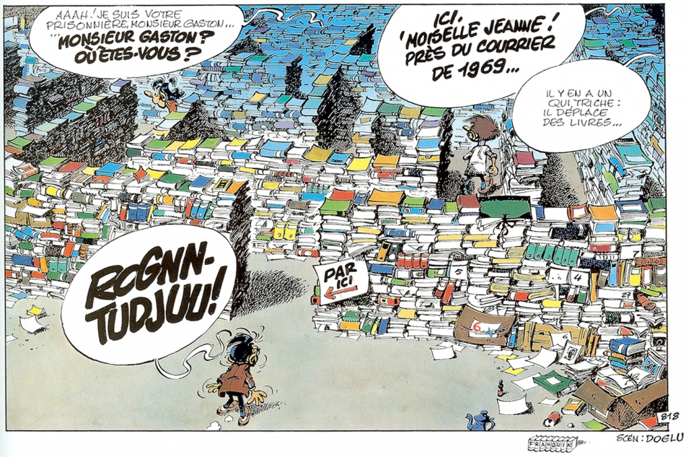

Introduction
My name is Félix Saparelli. I’m a software engineer from New Zealand.
This website is in the shape of a (md)book! It’s both a blog, an archive, a list of projects, and various information about and around me. Have a look :)
Selected Works
- Watchexec — A library to build tools to watch files and run commands
- Cargo Watch — A watcher for Cargo projects
- what are you even doing — A collection of standalone short fanfics
Social media
- Twitter — My main social venue
- GitHub — Ruby, Rust, Node, Web, and other things
- NZ NaNo Discord — Local writer community
Other sites
I keep a few other places alive:
- Brackets — A page of brackets
- Dash — A page of dashes
- Mechanical Bird — A simple browser-based time tracker
Avatars
Here is an archive of the avatars I have used. Since 2015, I commission my avatars from artists with a very loose mandate, letting them do whatever they want within as few parameters as I need. Generally, no detail beyond sizing was requested, although the exact brief varied for each artist.
All are copyrighted. Do not reuse.
Swung Catte
Commissioned from Liam / Robin in .
Bast Lighthouse

Commissioned from PepperRaccoon in , and delayed from publication until whereupon I gave it a little introduction.
Cybear

Commissioned from Tayruu in , and completed in .
Māhina

Commissioned from Huriana Kopeke-Te Aho in .
Sasha
{kind=link}
Commissioned from Sarah Lund in , completed in , and delayed from publication until to give the Cup Cat a reasonable amount of time.
Cup Cat

Commissioned from Azu in .
Snowl Herder
{kind=link}
Commissioned from Eoghan Kerrigan in , and received in .
This was an experiment in commissioning larger pieces and selecting a crop myself for the avatar itself. While I’m pleased with the results, I’m not sure whether I’ll continue with this format going forwards. You can see the larger artwork by clicking on the avatar image.
Framing
Commissioned from Luke in .
ACLU sketch

Obtained as a donation reward for the ACLU. Only worn on Twitter for the month of .
Into Space

Commissioned from Alison Graham in .
Nekudotayim Three

Commissioned from Daniel Silva in .
Hearty Hug

Commissioned from Sam Orchard in .
Demon mask bird

Commissioned from Anne Szabla in .
Sailor whale
Commissioned from Sara Goetter in .
In , Tailsteak made a variant. It was never actually used as an avatar.

Beaver with a jetpack

Commissioned from Mason Williams a.k.a. Tailsteak in .
Léa and me
In , I changed my avatar to include my significant other of the time. This was taken on the Dune du Pyla in France.
Close-up of me

From onwards, I used an extreme close-up of my face. This was my longest-lasting avatar and probably still remains in use in some accounts I haven’t bothered cleaning up.
Blue screen of code
Around and onwards (I wasn’t on the internet much at that time), I used this as an avatar. I probably lifted it from Google Images.
Persistent information
Cryptographic keys
I have three kinds of keys at the moment: good old PGP/GPG keys that are mostly used to sign git commits, minisign keys that are used to sign software (being phased out), and sigstore keys that are used to sign software (being phased in).
GPG keys
These have an expiration date. I initially did 1-year keys, but that was too much trouble, so in 2015 I decided to use 10-year keys, possibly with more short-lived subkeys.
The keys are also available on public keyservers, e.g.:
Current key: passcod06 (2015–2025)
pub 4096R/E44FC474 2015-04-11 [expires: 2025-04-08]
key C24C ED9C 5790 0009 12F3 BAB4 B948 C4BA E44F C474
uid Félix Saparelli (:passcod) <felix@passcod.name>
passcod05 (2014–2015)
pub 4096R/AE1ED85D 2014-03-27 [expires: 2015-03-27]
key E49C 3114 2E3D 10A4 69F0 86DC 6B09 4637 AE1E D85D
uid Félix Saparelli (:passcod) <felix@passcod.name>
- Public key
- Signature by
passcod04 - Signature by
passcod06 - Revocation
- Signature on revocation by
passcod06
passcod04 (2013–2014)
pub 4096R/3C51B6EB 2013-03-27 [expired: 2014-03-27]
key 0417 E9C8 3281 CB17 E7CB B0EA AE48 6FBE 3C51 B6EB
uid Felix Saparelli (:passcod) <me@passcod.name>
- Public key
- Signature by
passcod03 - Signature by
passcod05 - Revocation
- Signature on revocation by
passcod05
passcod03 (2012–2013)
pub 4096R/C2C15214 2012-09-26 [expired: 2013-03-25]
key FE31 5C83 9FC5 0618 A49B AEE3 8487 3386 C2C1 5214
uid Felix Saparelli (:passcod) <me@passcod.net>
Minisign keys
In minisign format, used for signing software binaries.
Software
untrusted comment: minisign public key: 2264BBE425DA952E
RWQuldol5LtkIrx0khfo4Z7Y8SixwG2K8OagJSvsJNBcuLgB2oVNJFFv
Sigstore keys
In sigstore/cosign format, used for signing artifacts (software binary releases, container images, etc).
Eventually this will disappear as keys move to be ephemeral and generated against my identity, but in the meantime you can use this key to verify artifacts, along these lines:
$ cosign verify \
-key https://passcod.name/info/keys/cosign.01.pub \
ghcr.io/org/repo:version_target.ext
Cosign.01
-----BEGIN PUBLIC KEY-----
MFkwEwYHKoZIzj0CAQYIKoZIzj0DAQcDQgAE3LYhdTwREhG9zVKc2aI3FzR6oHto
XRYiZtQGxtlbsUMacCHdvvBmTSEg6Zsf9jflNU0slFKExLX/z+zZHykmpg==
-----END PUBLIC KEY-----
- Public key
- Tweet with this public key
Social media policies
Accounts
- Twitter: @passcod
- GitHub: @passcod
- Twitch: @passcodWitch
- Virtual Regatta:
passcod - …you get the drift.
Small
I have a small twitter account at @LockedFelix, which you can request access to if you’re a friend or if you’re a “trusted” / “close” mutual. I talk of work and more personal issues and stuff that can’t or shouldn’t be in full public view and occasionally threads on topics I don’t want to get lots of attention on (harassment-wise). This small does not contain sexual/NSFW imagery or content; on rare occasions I’m much more likely to be horny on main.
Anti-virality measures
Tweets will be deleted if they reach:
- 1000 likes, or
- 500 retweets, or
- 100 quote-tweets, or
- 50 replies;
- unless I deem the tweet to be public-interest enough to be worth keeping up.
Twitter authentication
If I ever lose control of my Twitter account, I will authenticate the new one, or prove my having recovered the old one, by decoding the hash
8a073e9fcc222c7fd80a0212c53600b340e5dabfb378334b81efb151b89e148dpublished at https://twitter.com/passcod/status/705952798844715008, which is also now here and in the git history.
Disclaimer
Views expressed on social media or elsewhere are, unless stated, mine. As opposed to being anyone else’s, like my employer, any organisation I may be affiliated with, or any other person. Similarly, endorsement or agreement is not implied.
Twitter in particular and social media in general, including this website, is not to be taken as serious nor professional commentary, unless I say so. And even then, one should always keep in mind that one may, at any moment, be shitposting.
Copyright etc
Outside of the license afforded to the relevant social media platform as per their terms and conditions, I give no permission for use (unless you have been granted such in writing). In particular, my content may not be used for commercial gain by any entity, any non-commercial or promotional use by cryptocurrency or NFT endeavours of any kind, nor the propagation of fascist ideology (not that I expect these to have a strong respect of laws that inconvenience them).
Blocks
I am a fairly prolific blocker on Twitter. I may also block people on other platforms, but I don’t really use other platforms as I do this one.
In this section:
- current block reasons (not exhaustive),
- historical block reasons and happenstance,
- what (not) to do if you believe I have you blocked in error.
See also my musings on automated unblocking.
Current block reasons
On Twitter
-
I don’t like you.
-
You’re an asshole to someone I like.
-
You are or support or have voted for a white supremacist, fascist, or other people who are existential threats to me or my friends.
-
You proselytise. Specifically but not limited to religion, cults, parareligion, or cryptocoin.
-
NFT bullshit.
-
You’re a transphobe, a sexist, a homophobe of various stripes, an unrepentant racist, etc.
-
You’re a troll. I don’t mean shitposting.
-
You’re such a “good” shitposter that you’re indistinguishable from a troll.
-
You promoted a tweet I saw. There are exceptions if I genuinely liked the tweet.
-
You are frequently engaged in bad-faith argumentating with people I follow.
-
You had a viral tweet and posted those “sparkly lights” or whatever shitty promotion underneath.
-
You’re a COVID, vaccine, climate change, etc denier.
-
You’re a brand or mainstream american news site.
-
You’re one of those services that “unroll” tweet threads. Please don’t use these.
All they do is take people’s content and host it elsewhere, where the person has no control, and then they put their own ads on it, so they literally make money off people’s content without their consent. They also bypass blocks (i.e. someone I’ve blocked can read my tweets on a thread unroll).
-
You’re one of these services that provide a link to download videos off tweets.
These are marginally better than the above, and some provide direct links which isn’t so bad. However many do still rehost, bypass, and serve ads. I can’t tell the difference (and it might change later) so I block outright. Use a website that does that without using the reply-and-tag bots, that’s fine.
Historical block reasons and block happenstance
On Twitter
-
You were on one of several third-party generated blocklists around 2015.
These are the majority of wrongful blocks, as they were quite overzealous and of course the scale was very large.
-
You followed some particularly nasty people in 2018-2019, when I ran some block scripts against their followers.
-
You blocked me.
I used to operate under a policy of mutual-blocking, that is, if I noticed you blocked me, I would block back. I’m not doing that anymore, and should have reversed all of these, but it’s possible I missed some.
On Spotify
These would be current if blocking artists was still a thing.
- You’re an artist who is racist, homophobic, or unapologetically sexist.
- You’re an artist who financially supported Trump
Getting unblocked
I don’t think I’m sought after enough that this is thing, but, just in case.
-
If we have a mutual in common, you can maybe try to go through them. If they’re okay with it. Don’t fucking harass my friends in trying to get unblocked from me, though, that’s only going to get you blocked harder. You can send me mail. You can contact me on other platforms. You have to be aware, though, that there’s a very high chance I’ll take any such actions extremely suspiciously, even as I outline them on here. Maybe if you really want to (for what reason? I’m not very interesting), and it’s a last resort.
-
Specifically on Twitter: the most likely way to get unblocked is to just keep on having interesting conversations with my friends, and chances are I’ll happen upon them, see the block, figure it was a false-positive, and unblock you.
Trademark
As of August 2018, “passcod” is a trademark I own personally. An official, registered, paid for and in the books, proper trademark.
This was done for several reasons, three really:
-
Because I wanted to see if it was possible, and it was cheap enough, and didn’t require much effort at all, so might as well try it.
-
Because very early in the year, someone approached me about the name, and I couldn’t really tell if it was a scam or not, so I took it at face value just in case, did a lot of reading, asked a lawyer, and told them politely what was mine and what they could do with the rest.
-
Because “passcod” is my name, and that means something. But while there are protections around my legal name simply by virtue of being mine, there is no such thing around this name of mine. I wanted to permanently tie the name to myself (where “permanently” is “10 years, renewable”), and have it recognised as such by the law and the land.
I thought of making a little guidebook document thing that outlines what you can do with this trademark without explicitely asking me, but all the rules are kinda fuzzy because of it being a person-name and not a thing-name. So the deal goes like this:
-
“passcod” is me. When you use the name, you’re referring to me. In consequent, you can use the name to refer to me. But:
-
If you do something I don’t like with the name, I have the right to tell you off. If you persist, I have the right, and indeed the obligation to tell you off in stronger, legal, cease-and-desist type terms.
-
No contract or license or legal document gives you any further right to the name unless I give you authorisation (in writing) to do so. If I do for anyone, this line will be amended.
-
This list may be appended to or modified at any time without notice.
This is not meant to be a change that has effects on what you do, unless you were planning to be a dick about it. It’s about making it very clear that something is my name.
Fiction
I used to write poetry and shorts. I haven’t in some time.
A lot of this is “cringey young adult” writing, perhaps, but I’m still fond of it. However, a bunch of it is extremely dark.
I also write some fanfiction over on AO3: https://archiveofourown.org/users/passcod.
Poetry
I used to write poetry. I haven’t in some time.
A lot of this is “cringey young adult poetry,” perhaps, but I’m still fond of it. However, a bunch of it is extremely dark.
Contents, with warnings when applicable:
- Only One Left {death}
- Mid-loss {death}
- Aftermath {death}
- one and two
- Grow
- Slowly
- Alya {grief}
- so many alone at night
- Up Up And Away
- Sleep
- Hold
- Sorry
- Right over there
- The Road to Hell
- Self
- Tree {fascism}
- Unlit {grief}
- One summer morning
- Smile
Only One Left
28 July 2009
The door is closed.
Dusk fades to night.
I on a stool,
eyes on embers.
I remember.
Crowded valleys
Golden mountains
They arrived
Howls
Tears
Blood
Crumpled hope
I remember
My eyes cloud
I drop.
Mid-loss
8 October 2010
Dark.
Mid-Dawn
Softly I walk
forward. In the
first light of the
waking sun. My mind
still and clear and
white and black. Yet I
step up down and go
to the usual things of
the day. All that time
Life
is what I think about.
Love
is what I ache about.
Pain
is what my heart is.
Death
is where my heart goes.
The sun is falling
Wait for me –
Mid-Dusk
– Emily
Aftermath
7 December 2012
Oh sweet, sweet morning light
you remind me I have to sleep sometime.
I have to sleep.
But not at night.
Night reminds me of her
hair brushing my face at night.
It’s been five months and even my friends have given up on me; I am high all day from the coffee I take to keep awake and down all night from the memories I recall to keep her alive in here in my head in my mind; to keep her features from fading, her voice from quieting, her scent from flying away, the feeling of her fingers on my skin, her grumpiness in the morning, her smile turning up my day.
Oh sweet, sweet morning light
you remind me of that dawn again.
When she stopped living.
Just as the sun came up.
Next to me smiling
as she lost
her last battle.
one and two
8 August 2013
tragically
once upon a time
two people
far away
one is missed
two is missed
forbidden
hidden away
in the dark
two sets of
three small words
repeated
over and over
to oneself
thinking of
the other
thinking of
the one
thinking of
the heart
the skin
the eyes
the face
the hands
the pain
of one
and two
not being together
still
in the dark
repeating
“I miss you”
“I love you”
forever
until
one and two
are together again.
Grow
11 August 2013
(to be read with a calligraphy pen or nib in your hand)
Grow.
A word.
A verb.
Germanic.
Feel it.
Slow.
Old.
Young.
Now I’ll tell you how put it on a page:
we’ll start with the o.
Take your pen just so,
thin first,
from the center
and thick on the up, thin at the top
and thick on the down, thin at the low,
finish sharply.
The r is a small-cap,
nothing special,
you’ve done these before.
Same with the w,
but lowercase.
Now the G.
The G is special.
You have to put yourself into it.
Stare at the space
before the letters,
draw it in your mind—
no, not like that,
more majestic—
give it respect;
that G has held you all your life,
even before you were made,
it will hold you and your children,
respect it, make it king,
but not arrogant, as it’s old—
older than the oldest tree,
older than the eldest rock—
and it’s wise,
so wise…
Yes.
Now you feel it.
Take your pen.
Close your eyes.
Follow my hand.
There you are.
At the start.
Keep ’em closed.
Breath in.
Breath out.
Breath a half.
Breath.
And throw forth your arm.
Slowly
24 November 2013
words
drip from your lips
my
heart grows colder
until
i run away
hating
and loving you
Alya
7 August 2014
Three
Over and over
Two
Forever and once
One
Void and nothingness
Zero.
Alya told me to repeat this every time I was scared. Before I went to sleep. Before I started my day. Before I fell away into the night. The words don’t mean much, and it’s not the order or the rhythm that’s soothing. The mantra is just something to concentrate on, to repeat, into nothingness and void, once and forever, over and over, until all that remains in the world is me and you. That’s the first part, the first line of the mantra that Alya taught me: “You and me”. But I removed it when she went. It’s too hard getting my heart broken twice, when she went and when I didn’t, so getting my heart broken every time I get scared is impossible. Zero one two three.
so many alone at night
16 August 2014
so
many
alone
at night
wish
for one
to hold
tightly
to squeeze
to take
to kiss
sweetly
and feel
one’s arms
around
themselves
*heartbeat*
Up Up And Away
9 February 2014
Let me fall
so we can fly
so we can glide
over the clouds.
Let me fall
so we can fly
so we can float
over the sky.
Let me fall
so we can fly
past anything
you’ve ever seen.
Let me fall
so we can fly
so we can laugh
so we can cry.
Let me fall…
One day I was walking under the rain.
Thinking thoughts that shouldn’t be.
There’s no point, that’s no life, let’s.
Just. Fall. Here. Alone. Yet. Alive.
I am the king of my own place.
The master of my castle.
I have the right of life and death.
Over its very walls and floors.
You
picked me up you
held me close you
pressed me against you.
So let me fall
so we can be
so we can breath
so we can feel the other close.
Let me fall
so we can live
so we can die
so we can build up our home.
Let me fall
so we can talk
so we can yell
so we can fight about nothing.
Let me fall
so we can fly
so we can smile
so we can feel the wind go past.
Oh, let me fall
into your arms.
Sleep
19 March 2014
Darkness
Darkness all around and
light but not light; red
orange dark but less dark
than darkness.
Lines of darkness dancing
across. Deformed shapes of
fire running in circles.
Black dark black light all
around; red orange brights.
Everything fades.
Feeling eternally sleepy yet
curious at the lack of heat I
open my eyes to see a cloud
has obscured the sun’s rays
through leaves and branches.
Summer breeze, lack of sun…
I get up.
Hold
29 April 2015
Hold steadfast, friend
Hold
against hordes
against the very wind
rolling off mountain peaks
against the rain
the storm
thunder
against me and you
against the world
against all
Hold, friend, hold
onto the sunshine
bright in the valley
onto the morning after
the evening before
the night during
onto me and you
onto your wits
onto your life
Hold, friend, hold
me right here
you right there
they over there
and all further away
Hold, friend, hold
your breath
your words
thoughts
tongue
your sleepless nights
your presence
your being
your self
Hold, friend, hold
don't forget
love
hate
pain
joy
the things you find important
the people
to smile
to cry
to live
Hold steadfast
friend
in this world
hold.
Sorry
24 February 2015
I just
wanted
It seems hopeless. It seems like the world’s an ugly place. Ever since you told me, ever since I knew, ever since we lived.
wanted to
make you
smile
Do you remember the beach? The sand, the trees, the water, salty in our wounds. It stung, but it cleansed. Do you remember the night? The moon, the stars, the glow, faces smiling through it all. We were never tired, getting to sleep thinking we’d wake early and continue, instead missing breakfast by hours. It didn’t bother us.
smile over
pieces of
my soul
I want to go to the moon and back. Visit all the moons in this system; go beyond; go far. Pick and place a single pinch of moon-dust from each in little glass boxes, meet up anew one day, you’ll barely grasp a faded memory of me, and gift you the whole set just so that, maybe, with a bit of luck, you’ll remember this from
my soul
that I
lost
a long time ago.
Right over there
26 January 2015
I am in the great unknown.
Slowly flying away
from nowhere to be seen
to where the wind will carry me.
Happy,
I think.
There is a bird beside me. It
sings softly, as softly as a bird
can, a melody I’ll forget soon.
I am in the great unknown.
You’ll get there too,
one day,
whoever you are.
The Road to Hell
12 August 2015
We are walking on the road to hell
we are walking on the road to hell.
We come from the worlds behind us,
we come from the worlds of people,
we come from a thousand paradises.
We are walking on the road to hell
fleeing from your tyranny, your hate,
your words, your guns, your utopia.
We are fleeing proudly, finally tired
of living with you, near you, for you.
Enjoy your paradise, for we will not
be coming back, not return, not ever.
We were your dark suns, your bright suns,
your voices of happiness, your shining
lights dancing to the sound of a hundred
drums, your castles in your minds, your
every thought and dream, your precious
precious colour in your black and white
world.
We were the black and the white and the
everything in between, and the every tint.
You built your worlds for us, for you,
bastions of freedom, fortresses of beauty.
You closed the roads, collapsed the gates,
showed us the door yet kept us behind bars.
You said you loved us while beating on our
homes with your rams of steel, you said you
would help us while screaming you abhored us.
You built palaces of fear, you built theme
parks dedicated to making you feel justfied.
We were like the wind, breathing life through
windmills, and you were a giant Don Quixote,
raving madly about the threat we posed you.
We are walking on the road to hell
You can stop us no longer
We are walking away
Away from you
Away forever
Away.
Self
6 June 2016
Selflove, selfhate, selfwhatever
I am a professional selfhater
I do, every day, my regulation 24 hours
And some more, for my own pleasures
Every day, a little more, without fail.
Selflove, selfhate, what does it fucking matter
I am a professional selfhater
Every morning, every evening
Every afternoon, and from nine to noon
It’s my life, my death perhaps, it’s my very own tale.
In the association of professional selfhaters
Selflove, selfhate, all together, all betters
All infinite shades of black and white
Shining down; a rainbow of moonlight
Every day, every night, every one, every all.
Until one day perhaps — it’s the dream — none at all.
Tree
13 November 2016
Are you, are you
Coming up with me
They say they will be
They say up, will we be
Brave enough, brave to follow
To leave, to flee, to go
If we split, to leave me
To mine and only
Fate.
When the proponents of tyranny
come to us and ask forgiveness:
“I’m sorry.”
“I didn’t know it would get so bad.”
We will tell them: “Too late.
Too little. The toll has already rung.”
We will not forgive.
We will not forget.
We will weep for the fallen.
We will endure.
What am I supposed to say
to young people coming to me
wanting to leave this sad world
because at least now
it would be on their terms?
They are at our doors.
They are our neighbours.
They are our family.
They are taking us.
They are not returning us.
They are denying us.
They are ignoring us.
I don’t know which hurts more:
their blows, their betrayal,
their torture, their murder,
or their indifference.
Are we out of sight?
Are we out of night?
Our world has already tumbled
Our life, for years now, has bled
Burn our secrets
Burn our hearts
Burn our love
Seal your lips forever, little one
Or forget you ever were different.
Rejoin your friends, embrace their joy,
bury your truth deep inside yourself.
Learn to smile again,
learn to smile the scars away,
forget yourself little one,
at least you’ll live another day.
It’s the end of the line
It’s the end of our time
It’s the very last step.
Too tired, too broken
we have stopped running.
Our final wish:
to go soaring into the skies
to fade away into the night
Our blood running free
A red sunset
A tide coming out
My soul drying out.
(…)
You told us to run
You told us to be free
You kept our secrets
You were broken for us
Still you did not speak
We thank you
We thank you
We thank you all
We will remember you
We’ve built monuments
We’re telling stories
At long last, with tyranny defeated
We stand here honouring you
Who made it all possible
But didn’t get to see the end
We weep for the fallen
We run into the sky
We smile true to our soul
We remember who we are
We restore our hearts
We return to ourselves
We heal the scars
We dream at night
We weep for the fallen
The toll has rung one final time.
Unlit
14 October 2016
“You shouldn’t be driving.”
“I haven’t had a drink.”
“You know what I mean.”
“Yeah.”
I drove on, Sani besides me.
Stopped at the lights, fumbled with my phone, trying to put music on.
Light turns green.
Grip the wheel with one hand, shut the phone with the other, make an awkward run into the avenue.
No cars around still, but more homes and driveways.
I turn into my lane, streetlight shining down
on me
and the empty
passenger seat.
One summer morning
9 February 2017
Breathing the fresh air
in the middle of light rain
and the smell of wet fog
I resolve to go walk up again
and visit the mountain, my friend.
Smile
12 September 2018
You think you are out there exploring the limits.
The limits of the possible,
the limits of the feasible,
the limits of the thinkable.
The limits of the imaginable.
And we smile, when we see you, children that you are, afloat on top of this lake you call an ocean. You are flotillas and armadas and solo navigators and skilled amateurs slashing these waters. You are working, in unison or in competition or in solitaire independence, to perfect the art: in as little movement, in some set distances, in tiny vessels, and even without sails.
And we smile, when we see you, children.
We work beneath the surface. We work above the skies. We crawl around the bottom of the seas. We move earth, and air, and fish. We summon thunder.
We work.
Days, weeks, decades, lifetimes.
We know of the monsters. You scoff at the stories. Even when provided with pictures, you imagine small beasts, that could not possibly be a threat except perhaps when alone and unprepared.
We have been alone.
And the monsters we know, they are taller than we are.
In deep, where they live, we learn to be quiet. To do our work, as grandiose and extravagant as it must be, quietly in the shadows, so as not to awaken these hell-beasts of your nightmares.
We build defenses. Intricate and complex to the initiated, they look repetitive and primitive to the neophyte. We like them. They give us comfort.
We protect you, without you ever knowing. A ripple on the water where none should have been is a failure of our task. When we are at our best, you do not see us.
The tools you use and improve and congratulate yourselves for bringing further than ever, we have as base part of our kit. For the work, though, diversity is everything. Where you might sharpen your words on an ever-growing collection of still lives, we battle in the deep, we love, we hate, we die, we bear, we spawn, we solve, we ponder.
We do not resent you not knowing.
It is the work. It is the life.
It is innocence worth protecting.
You write us in your legends. In your myths. In your stories. In your rumours. Never quite real, to you, we are.
Yet, we love you.
And smile.
Short Prose
I used to write shorts, in the same vein as my poetry. I haven’t in some time.
A lot of this is “cringey young adult bullshit,” perhaps, but I’m still fond of some of it. However, a bunch of it is extremely dark.
Contents, with warnings when applicable:
The Box
28 October 2008
The box was simple. It was hand-crafted, seemingly by inexperienced hands. The lid was not attached to it, except for two mould-eaten strings, passed through rough holes in the wood. There were carvings on its top: words now unredable, names, a heart, crossed out by later cuts. Several layers of time were printed there; past drawings, gone relationships, ancient memories.
When I opened the box, it was as if I’d opened an old book. The same odour, the mark of time. The same resistance, this reticence of giving up secrets.
Dust spiraled under my breath. When it fell back, the content of the box, those pieces of childhood, were finally exposed to my sight. They seemed still defiant, as if daring me to uncover their stories.
A pair of little scissors and cotton string were the first things. The seemed to have been placed there in a rush, just before moving out of home. Pence coins, saved and never used. Several badges from the scouts. Love letters, with Xs in faded ink. Had they been received and kept? Or were they still waiting to be posted?
Further in the shade were deeper souvenirs. Diving into the swirls of dust, my eye caught on toys and objects only precious here. Glass marbles, scratched and marked, reflecting older games. Short pencils, used by force of fingers, sharpened with quick strokes of a knife. The knife itself, its steel blade half-open, shining still, having won its fight against time and rust. A little vial, empty now. Two little stones, black jewels in the dark.
Going back to the source, the beginning: the last objects, first put, unveiled from time. A sepia photograph of a baby. A name engraved in a bracelet. A petite cloth doll, of a rabbit. First fallen tooth, neatly labeled. Finally, a little card with a name and these words: “If by any luck you found this box, could you please return it to me.”
I looked up the name. Ten minutes later, when a heavy door opened and a grandmother looked at me, somewhat intrigued, I asked: “Is this yours?”
A Man
13 February 2011
He was lit up faintly.
Standing in a room of golden proportions (which is not saying a lot), he was one stood man (which is). The only lamp, a seemingly old neon, hanging short from its chains, shone darkly above none. None but a five-feeted glass plane, upon which glossy pages were desperately eager to tan; but alas! not one ever did lift their covers.
The man had been looked upon countless times, even through his short while standing. Always from the top, which might be explained by his stature, or might not. His hair, though, was all but feature-less. A few curls only stood out from otherwise straight, short mop. His visage was no different: sharp edges and soft skin were its only characteristics. Immaculate white collar. Iridescent black blazer. No tie. Dark pants, which pockets concealed fine hands (five of them, two of flesh). Polished shoes. Neat.
Above his socks, through the shadow, a lighter strip revealed — no, confirmed — what one could have mistaken for tan earlier. Yes indeed; the man was a lone, black white cream, wolf.
Behind blue eyes, the man was impatient. His feet were hurting. Had someone spoke to him at that very instant (as the next it was gone), he would have answered softly, non-committally; in his mind, however, his voice clear and his tone dry, he would have snapped, glaring. But etiquette ruled over him. Earlier, he had risen for that same reason from his seat and let another take it, damning both the old dear for entering, and the owner for the number of chairs. Her feeble thanks had irritated him, and he had not replied. He now damned both himself for this lack of respect, and his long gone ancestors (only from his mother’s side) for having instated and enforced this ridicule heap of codes and laws.
A sparrow, love, and a brightness in his mind entered through the far door and kissed him quickly and sweetly.
Arm in arm, they left.
ali.vei.nth.eni.ght
10 August 2015
Your cat, your glasses, and a giant butterfly walk into a room. You realise you’re the bartender. They ask for coffee. “With almond milk”, the cat adds. “You don’t want the aftermath of cow milk on your tile.” You turn around, sight a half-empty bottle of vodka and loose tea leaves. It does not appear to be a nightmare. Roll 3d17s mod 8, no, not those ones, the blue and yellow-polka-dots ones, for your blood-alcohol level in ppm. You have 9¾ moves left before full fatigue hits. All other members of your party are Permanently Vanished. Consider the GM (that’s me) to be omnipotent (when sober) and having a fondness for chocolates (white). As a reminder, you have Steel Skin Level 9 applied, a full Spell Book, and Magic Points to last you until Armageddon comes… which should be in 25 minutes, give or take a couple dozen seconds, according to today’s schedule. Proceed.
Regulus
16 August 2016
We lived forever, and would live forever.
So we had concluded.
We didn’t know, of course, because none can predict the future. But we had attempted everything, and still, we lived. We had watched, in the meantime, people come and go, countries come and go, peoples come and go. Some of us helped, to make them come, or to make them go. We clashed, albeit rarely one against another; such conflicts rarely went how we wished. It would not be accurate to say we warred: we made war, but we didn’t hurt ourselves. Rather, those we lead and guided were hurt, and made hurt, and did hurt.
It took us a century to meet again, all together. And we stayed together for almost a decade, casting off from the world, metaphorically. We made peace.
The world outside raged on.
In all reunions going forward, we regretted, all of us, for that first moment of selfishness. It had taken us a century to make peace among ourselves, at little cost to us, given we would live forever, and at excruciating cost to everyone else, given that they didn’t. It took us, to our eternal shame, one other century to not only repair the damage we had sown, but to help all of them, all mortal people, to make peace. Now, they lived longer.
We split in four: some worked on prosperity, to make the world the best we could, not for us, but for them; some worked on space, to explore and move there, to make inhabitable, to help prosperity; some worked on knowledge, and foremost, on understanding why we lived, to perhaps reverse it, or to perhaps share it; some worked on the past, to find why and whom made us live forever, to study their history, to help them remember it, such that both us and them would endeavour not to repeat it, or at least not the bad parts.
As of this day, three score centuries on, before I leave for the stars, uncertain to come back, we have not finished our work. Humanity has almost forgotten us, all according to plan. They live, they think, forever — we know otherwise, but still, we hope. Soon I embark. You who reads this, tell me:
how is Earth?
— Found in the Sechura Desert, Earth, in the hand of The Owlman, 9387 CE.
P.S. Shortly after leaving, I made a discovery that let me finish my part of our research: The Understanding. I came back here to leave you copies of my notes and conclusions. Go find Jiang Maze, last I heard they were living in the Phæthontis quadrangle on Mars. They are in charge of the relevant part of The Past, and will find these notes interesting, as well as provide you, most probably, with a cup of the finest tea in the Sol system, as dusk falls.
— Found in a decaying ATHENA ΑΘΕ telescope, in L2 orbit, Earth, 9411 CE.
I hope you’ve found the previous stashes useful, although there was something missing, an unexplored thread in my research that will prove critical both in the understanding and application of, at least, the last five stashes, and, perhaps, a few more. While waiting on this rock, I have also branched off into improvements which affect me directly, and will field test them soon. If you’re interested in a potential 3% efficiency increase in FTL Type C drives — and let’s be honest, who isn’t? — come find my next stop. If you can.
Nyctimene is bringing me away from the hubbub of the main elliptic plane of the Sol system, perfect for a quiet and discreet jump. How was Maze’s tea?
— Found on 2150 Nyctimene, Sol system, 9436 CE.
I thought I would spend an entire orbit here, on Dagon. I only lasted 400 years before fancy made me take flight again. I have to say, as impressive as it was to approach the Eye of Sauron, only to settle within its edge, it was nothing compared to centuries of perpetual meteor showers. As usual, you’ll find my notes and research here. There’s a lot; take your time. I endeavoured to keep linguistic drift low, but I cannot control for how the common tongue will have evolved while I was alone here, so I wish you luck, dear reader.
I have left a clock zeroed at my time of departure, for your information. It should be precise for two millennia, beyond that, well. You’d be lagging anyway.
— Found in a shielded structure on Dagon, Fomalhaut system, 9520 CE.
As mentioned in my last few notes, being around people once again has quite well increased research avenues. Not only that, but I went and got up to date with the current state of everything, and I even sent a few messages to my colleagues of old, which prompted an impromptu reunion with those that happened to be nearby. As a result, this stash is special! Sure, you’ll find the usual, but there’s also a record of said reunion, and notes on those I met, along with historical observations, recollections, and even archives dating back all the way to my first millennium. I do not have the hubris to write conclusions and analyses of that data, that and my colleagues might just take offence, but perhaps you or yours will want a stab at the matter.
At my great surprise, although in hindsight it was inevitable, I found I liked interacting with people, especially those younger than me (there’s a lot more, and they’re not all people who have tried to kill me at some point; it was a long time ago, and we’ve all moved past it — so we say). A bright new world this is, after being alone so long. So, at my great surprise I started getting attached to a few. As I write this, I know I’m leaving; they know I’m leaving. And yet I also know I might come back, as my missing them will gnaw at me.
My destination is Antares, perhaps detouring via Betelgeuse, there’s a very interesting research group drawing parallels between native species of the two systems, hinting at another species being capable of space travel — now that would be the greatest discovery, the crowning of a career, wouldn’t it?
When you stop by, do make contact with my local fellow ancients, they’re intrigued; and your news from Maze are the freshest they’ll get. Bring them some tea, too, you know the one. Does it still have the scent of the moon?
— Found in a beach mansion on Aldébaran-4, Aldebaran system, 9566 CE.
This is the last note there is. As of writing this, I have finished my era of research and study and travels. Well, maybe not travels. I have made friends here, and on Aldébaran-4, and around Betelgeuse, and elsewhere. I’ll have to keep traveling, if only to visit them all. But my pursuit of knowledge and understanding is well and truly over. I have, long ago, finished my portion of the work assigned to me, and more. You’ll find next to this the last details and conclusions regarding that and all other threads I was exploring.
I find myself wondering if I’ll go back to Sol; probably not soon, but it’s a possibility. One I would have never imagined when I started on this trip, this exile, if you would. I have lived a very long while, and I have regretted a great many events; it is only recently that I have been able to finally face them, to forgive myself in a way; it is only recently that I have opened up about them to another.
Perhaps, had I continued on my lonesome, you would eventually have heard these grievances against myself… but these notes feel much too impersonal now. I cannot help but feel incoming loss at stopping there, yet it is smaller than the relief, and smaller still than the joy at being able to dedicate more of my life to my friends, my precious people.
You should know what I look like, nowadays. I’ve included a picture, probably not the first you’ve seen, though, as I’m sure you’ll have talked with my fellows on previous stops. But if you see smaller versions of me around, don’t blink — say hi. I’ve at last managed to acquire some decent tea.
You will not find any further note. Don’t try. Leave this to be my final one. I have been following your progress, lately, as your search coincided with my travels. This last stash should satisfy you for a little while, Otto, and then it’s your turn. A millennium of research and travel, two centuries of chase. Go forth and make it all your own, from now on. And thank you.
— Found in the Rehua, a citadel-station orbiting Antares, 9570 CE.
Regulus (notes and author commentary)
The story of the narrator starts one or two centuries beyond our present time. It is in accordance of my own beliefs that this kind of technology (to be able to live a long time, if not forever, and to have decent space travel methods, to start with) will be available and ready in our world, in reality, at most around this kind of timeframe. From there, the narrator says they wasted a century before getting to work, and that this note was written after “three score centuries” or 6000 years, have passed. So the story begins at least after 8316 CE. The last note puts it at 8570 CE, but durations are purposefully left fuzzy to allow for wording and the difficulty to measure time accurately over space travel, FTL, and times beyond anything we, humans of the 21st century, can reasonably imagine.
The story for the “reader,” who is not the reader of this short, but a character named Otto who finds this note and then begins a search for the narrator (presumably to tell them how Earth is?), begins in 9387 CE. The search lasts 200 years, during which the narrator leads Otto on a merry chase of stashes of research and notes across the Universe. We, the reader of the short, only get to read a few of the notes, as hinted in the Nyctimene entry; furthermore, there are also the stacks of research results and notes provided along each entry; it would not be realistic for just those few clues contained in the entries to be sufficient to find the next one. But those ones put together have an interesting thread.
The Sechura desert is better known as the place where the Nazca lines are. The Owlman is a Nazca figure representing a person with an owl’s face, arm raised up.
ATHENA is an actual X-Ray space telescope that is being built and will be launched in a few years. ATHENA ΑΘΕ is probably one of its far, far successor. This is happening 62–72 centuries in the future, after all. The ATHENA telescope, ours, is going to be in L2 orbit; obviously this latter one, version ΑΘΕ, stayed there, too. “ΑΘΕ” was an inscription on Athenian drachmas in Ancient Greece, accompanied by a depiction of an owl.
The Phæthontis quadrangle is an area of Mars. Phaeton was a demigod who, one day, drove the Sun’s carriage across the skies. “as dusk falls” is a reference to the philosopher Hegel, who noted that “the owl of Minerva spreads its wings only with the falling of the dusk.” Jiang Maze’s name does not mean anything and is not particularly significant; I pulled it from a box of tea and a poster in my brother’s room. Jiang is the family name. They use the pronoun “they” as written in the text. Speaking of pronouns, notice how none of the characters have a defined gender? The two names, Jiang and Otto, are neutral in this regard. What gender did you give the characters, in your mind, while reading?
2150 Nyctimene is an asteroid (or minor planet, to be precise) in our solar system, which I have dubbed Sol system in this short, discovered in 1977 bla bla bla, none of that is relevant.
It’s located quite a ways from Earth, on an orbit inclined from the elliptic; in my story, that provides a place that is accessible from other planets by conventional propulsion, and then brings your vessel away from the influence and business of the main plane of our system, so that you may engage your FTL without causing nor getting undue interference.
To get back to the reference thread, Nyctimene was the daughter of Epopeus, King of Lespos. Pursued by her father, she was rescued by Athena who turned her into an owl, the very owl depicted on the drachmas.
The Owl of Athena, or the Owl of Minerva, as called by the Romans, was, by the way, a symbol of knowledge and study.
Dagon is the name of an exoplanet orbiting the star Fomalhaut. It is situated within an immense disc of debris floating around the star. Photos of that disc of debris and the star show a distinctly fuzzier band: a dust ring. A view from the side of that disc makes it look elliptical. All in all, from here, it kinda looks like an eye, with a massive ball of fire in the middle of it. Fomalhaut is about twice as large as the sun.
For the imagery, we have to go back to Epopeus: his name came from ἔποψ, better known as the hoopoe, also nicknamed “the watcher.” Then we abandon Greek mythology and go to the Persians, to whom the star was one of the four “Royal stars,” and more precisely, was named Hastorang, of the winter solstice, “the Watcher of the North.” (That’s not meant as a reference to a very popular TV series of the moment, it’s entirely coincidence. I needed a star with a planet that referred to the Nyctimene somehow, and I’d already made plans for two other Royal stars.)
The planet is located near that dust ring mentioned before, which completes the explanation for the Eye of Sauron mention. The shielded structure is because the planet is moving through the disc of debris, impacts are frequent, so a shield is necessary; and in turn, the shield would generate a sky of continuous showers of burning meteor remains (the shield would destroy said meteors instead of bouncing them or repelling them; I felt that was more realistic compared to the fairly fantastic shields present in some other space-bound sci-fi.) Finally, the planet has a very long orbit, spanning 2000 years.
Aldebaran is another of the Royal stars. Its current name means “The Follower,” in Arabic. In Hindu, it is called “the mansion Rohini.” For the location in this story, I went with a reference to the excellent BD “Les Mondes d’Aldébaran,” which inspired me during my teenage years. One of the first scenes in that story depicts a very long and beautiful beach, on the planet Aldébaran-4, fourth and only livable planet in the Aldebaran system.
Antares is also a Royal star. It’s a red supergiant nearly 900 times the size of the sun. In Ancient Greece, the citadel or acropolis of a city-state contained its royal palace. Antares has had various names in history, like: “the Lord of the Seed,” “The King,” “Jyeshthā” (“the Eldest”). In Māori, it is called “Rehua” and regarded as the chief of all the stars.
The title, Regulus, refers to the fourth and last Royal star, and perhaps the next destination of the narrator, who knows.
My mountain of Knowledge
3 January 2017
When the ship of my early childhood approached the land of life, knowledge is what I saw and what I started seeking. My journey began on the coast, where I learned to walk, and then I looked up, and saw all that I could climb. The slope was steep, the rock slippery, the path barely walked. And when I reached up to the summit I had glimpsed as a child, I found that it had merely been the place where earth meets the bottom of the clouds, and that my mountain continued upwards, and that its true summit I could never see at all.
But this did not discourage me.
And as I turned around and gazed over all I could see from here, and all that I had achieved in this climb, I knew that I would continue, forever if need be, in my quest upon the mountain of Knowledge.
Finally, I knew
24 January 2017
I hope, for your sake, that he forgives me.
It was many moons before I understood this seeming contradiction. But it was too late; he was gone, and I was alas forever forsaken.
Technicals
A little elegant state machine with Async Generators
2 February 2018
Today at work I made this up:
async function* init_process (steps) {
for (let step of steps) {
while (true) {
try {
await step.run()
break
} catch (error) {
handle_error({ step, error })
yield
}
}
}
}
What this does is it takes a list of steps, which are async tasks (in our
case a request and some processing), runs through them, and if there is an
error at some point it hands back to the caller… and then the caller can
choose to retry the failed step and go on.
All in 10 lines of code.
Beyond brevity, what I like about this code is that as long as you know the
behaviour of an async generator, of break inside a loop, of a try-catch —
which are all, to the possible exception of the async generator, fairly
elemental language structures — you can understand what this little machine
does simply by running through it line by line, iteration by iteration.
Here’s how you’d use this:
// load the steps, do some prep work...
// Prepare the little machine
const process = init_process(steps)
// Hook up the retry button
$('.retry-button').click(() => process.next())
// Start it up
process.next()
And that’s it!
Let’s run through this a bit:
-
async function* init_process (steps) {This is an Async Generator that takes a list of
steps. Generators, and Async Generators, gets their arguments and then start frozen. They don’t do any processing until you first call.next().An Async Generator is just a Generator! All it does special is that you can use
awaitinside it and if you want the results of what ityields, you have to await those. (But we don’t use that here so you don’t even need to keep that in mind.) There’s no extra magic. -
for (let step of steps) {We’re going to iterate through all the steps, one at a time.
-
while (true) {This is the first “aha!” moment. To make it possible to retry the current, failed, step, we start an infinite loop. If we have a success, we can break out of it, dropping back into… the
forloop, and thus continuing onto the next step. If we have a failure, we don’t break out, and thewhileloop will naturally start that step over. -
try { await step.run(); breakWe
trythestep.run(), and then webreak. Because of the way exceptions work,breakwill only run if nothing was thrown. That is, ifstep.run()ended successfully. -
catch (error) { handle_error({ step, error })We want to immediately handle the error. We could
yieldthe error and let the caller handle it, but this way there’s no need for an extra wrapping function: we can just callprocess.next()to start and resume the machine, without needing to care about its output. -
yieldThe piece of magic that brings it all together. If and when we get to that, we freeze the generator state and hand back execution to the caller. It’s now up to it to tell the little machine to continue, and it can do that at any time. There’s no need for complex state management, of preserving and restoring progress: the language itself is taking care of it.
-
Outside:
process.next()(the first time)Recall that the Generator starts frozen (see 1). The first thing we do is call
next(), and that unfreezes the machine. It starts processing steps, and eventually will either get to the end, or stop at an error. -
To retry:
process.next()When we hit a snag,
handle_error()does its job of telling the user and figuring out problems… and then it can choose to display a retry button. Or maybe it will want to automatically retry a step if it deems it safe to do so. Or maybe the error was very bad, and it just wants to abort. It can do all these things, and it can take its time: the little machine will wait patiently until it’s told to get going again.
And that’s all there is to it!
Dhall: not quite it
8 August 2020
Last month I dove into Dhall after discovering it more than a year ago but never having the excuse to really get stuck into it. Last month I got two different opportunities, and used it for both: an autoinstall template for Ubuntu 20.04, and a Kubernetes config template for very similar containers that each needed a pod and a service just to vary one or two settings.
While Dhall is good at what it does, despite many rough edges, as I progressed I realised it’s really not what I want.
What Dhall does well
Types. Dhall is fully typed in the Haskell fashion, and every Dhall document is an expression,
which contains types or values, or trees of types and trees of values. Dhall does structural typing,
so two types A = { an: Integer } and B = { an: Integer } are actually the same type.
Safety. Dhall is strictly non-Turing-complete, and most notably is guaranteed to complete (no halting problem here). Functions have no side effects, and while input can be done from files, the environment, and remote URLs (!), output is only through whatever structure is left at the end.
Reproducibility. Dhall includes concepts and tools that can enforce the integrity of imports, and verify that one expression is equivalent to another, such that you can refactor how that expression is constructed and authoritatively assert that your refactor is correct.
Library. As an established project, there are libraries that are built up for various projects, such as for Kubernetes manifests, Terraform, GitHub actions, OpenSSL, Ansible… additionally, the built-in function and keyword set is very small, so everything is accessible, inspectable, etc.
Where I found it lacking
Errors. Good erroring is hard, I’ll acknowledge. Dhall erroring isn’t terrible… but it’s often obscure and mislaid me many times. Dhall often stops at the first error, which might be a consequence or a symptom of the actual mistake, and gaining that visiblity is hard.
Familiarity. and layperson-friendliness. Is basically zero. Dhall errors require familiarity
with Dhall errors: they’re not very approachable unless you’re already familiar with them. Dhall
itself is foreign at times, and some of its syntax quirks are downright baffling (in one pet peeve,
it bills itself as whitespace insensitive, but what it really means is that as long as whitespace is
in the right place, it doesn’t care what that whitespace is… but a(b c) is still different to
a (b c), to hilariously-hard-to-debug effects.) While I can use Ruby, Rust, and advanced Bash in
work projects, I would never use Dhall because it would add more barriers than it adds value.
Inconsistency. For a language with a tiny built-in library, it’s quite surprising. Everything in
Dhall is an expression… except some things that look like expressions but aren’t (like the merge
keyword). The whitespace thing. Imports get an optional argument for a checksum, something that
nothing else can do (no optional or default arguments, though the record pattern approximates some
of it). Some things are keywords, some things are symbols, and some things are nothing at all, with
little rhyme or reason. It makes hard to develop intuition.
Information loss. There’s a bug open for at least three years where the formatting tools of Dhall will silently erase all comments except those at the top of a file. Dhall is bad at respecting ordering. This is surprising for a configuration tool: while the consuming application might not care, order can be very important for humans. Some tools may even interpret ordering, for example overriding earlier identical keys in a JSON map, or keeping the first one, and re-ordering may actually change meaning.
Inference. Because Dhall does structural typing with named and anonymous members, and because it has no generics, there’s many situations where it knows the type of something, but will refuse to compile unless you explicit it, which can be very repetitive and/or require refactorings to put a name on a previously-anonymous type.
Inheritance or extensibility. While I like the lack of class-based inheritance in programming languages like Rust and instead embrace the wrapping and trait and composition types concepts, configuration is a different space. It’s not uncommon for a configuration schema to have a general shape for a stanza that is specialised in many different variants, and representing that in Dhall is painful, repetitive, or both.
Translation. Somewhat related or an alternative to the above. Dhall makes it easy to create
type-friendly structures, but offers little to translate those structures back into what the actual
consumer expects. This ranges from key/value translation, where a Dhall-idiomatic spelling would be
StorageKind but the configuration requires storage-kind, to flattening, where you could express
a structure as a Action<Specifics> where Action has a type and id, and Specifics is an
enum/union for AddPartition or WriteFilesystem but the required structure has type and ids and
all specific properties on the same level, to different translations for different outputs.
Postel’s Law. Or robustness principle. The one that goes “Be conservative in what you do, be liberal in what you accept from others.” Dhall is conservative in what it does, certainly, and also very strict in what it accepts. This would not be so much a problem if the tooling/erroring was better: JSON can also be said to be strict on the input, and tooling exists that will point to where the error is quite precisely; YAML can be said to be quite lax, and may silently do the wrong thing. Dhall, however, doesn’t improve one way or the other.
Exploration of Wasm
17 March 2020
Background
I’ve been dabbling with Wasm for several years, but only really started going at it in the past month, and for the purposes of this post, for the past two weeks. I had a bad idea and I’ve been working to make it real.
I’m not coming from the JS-and-Wasm perspective. Some of the things here might be relevant, but here I’m mostly talking from the point of view of writing a Wasm-engine-powered integration, not writing Wasm for the web and not particularly writing Wasm at all even.
For those who don’t know me, I work (as a preference) primarily in Rust, and I work (for money) primarily in PHP, JS, Ruby, Linux, etc. Currently I’m in the telecommunication industry in New Zealand.
The wasm text and bytecode format
One very interesting thing that I like about wasm is that the text format, and to a certain extent the bytecode, is an s-expression. Instructions are the usual stack machine as seen e.g. in assembly. But the structure is all s-expressions. Perhaps that’s surprising and interesting to me because I’m not intimately familiar with other binary library and executable formats… fasterthanlime’s ELF exploration is still on my to-read list.
The standard wasm tools come with wat2wasm and wasm2wat, which translate
between the bytecode (wasm) and text (wat) formats. wat2wasm will produce
simple yet nice errors if you write wrong wat.
My preferred way of writing small wasm programs is to write the wat directly
instead of using a language on top. I am fairly comfortable with stack
languages (I have a lingering fondness for dc) and a lot of the work involves
more interacting with wasm structure than it does the behaviour of a module. To
write larger programs, especially those dealing with allocations, I use Rust
with wee_alloc, optionally in no_std mode. I do not use wasm rust
frameworks such as wasm-pack or wasm-bindgen.
I have tried AssemblyScript, I am not interested in C and family, and that’s pretty much the extent of my options as much of everything else either embeds an entire runtime or is too high level or is too eldritch, wildly annoying, or unfamiliar.
Even more useful is wat’s ability to write stack instructions in s-expressions… or not, as the need may be. For example, this:
i32.const 31
call $addOne
i32.const 8
i32.mul
Can equally (and more clearly) be written:
(i32.mul
(call $addOne
(i32.const 31))
(i32.const 8))
Strictly more verbose, but helpful where following along with a stack notation can be confusing.
The wasm module system
There is an assymmetry in the module system that… makes sense to anyone who’s used language-level module systems but might not be immediately obvious when approaching this in the context of dynamic libraries.
There are four types of exports and imports: functions (bread and butter), globals (i.e. constants and statics, but see later), memories (generally only one), tables (for dispatch and the like, which I don’t much deal with).
While engines do support all types, as per spec, languages targetting Wasm often only support functions well. It’s not uncommon to initially start with an integration that expects an exported global, only to then change it to a function that’s read on init and documented to need a constant output, because some desired language doesn’t support making wasm globals.
Wasm has the potential concept of multiple linear memories, and of exportable and importable memories. Currently, the spec only supports one memory, which can either be defined in the module or imported (defined elsewhere, including some other module). In theory and/or experiments, most languages also only support a single memory, or only support additional memories as addressable blobs of data. C &co, with manual memory management, can in theory allocate anywhere, and so may be better off… Rust’s AllocRef nightly feature shows promise to be able to specify the allocator for some data, and therefore be able to configure multiple allocators each targeted at a different memory. However, that will require multiple memory support at the (spec and then) language level in the first place. For now, designing integrations to handle more than one memories is not required but a good future-proofing step.
Exports are straightforward: each export has a name and maps to some entry in the module’s index spaces. Once you compile a module from bytecode you can look up all of its exports and get the indices for the names. This is important later.
Imports have two-level names: a namespace and a name. The idea is for integrations to both be able to provide multiple libraries of imports without clashes, and to support plugging one module’s exports directly to another module’s imports, presumably namespaced under the first module’s name, version, some random string, etc.
In practice there are two namespaces worth knowing about: env is the de-facto
default namespace, and js is the de-facto namespace for web APIs.
In Rust, to specify the import namespace (defaults to env), you need to use
the #[link(wasm_import_namespace = "foo")] attribute on the extern block like
so:
#[link(wasm_import_namespace = "log")]
extern {
fn trace(ptr: i32, len: i32);
fn debug(ptr: i32, len: i32);
fn info(ptr: i32, len: i32);
fn warn(ptr: i32, len: i32);
fn error(ptr: i32, len: i32);
}
Functions calls
In the wasmer runtime, which is what I’ve most experience with, there are two
contexts to call exported functions in: on an Instance, that is, once a
compiled module is instantiated (we’ll come back to that), and from a Ctx,
that is, from inside an imported function call. The first is highly ergonomic,
the other not very (this will probably improve going forward, there’s no reason
not to).
let func: Func<(i32, i32)> = instance.func("foo_functer")?;
let res = func.call(42, 43)?;
To call from a Ctx, the best way currently is to pre-emptively (before
instantiating) obtain the indices of the exported functions you want to call
from the compiled module, and then call into the Ctx using those indices:
// after compiling, with a Module
let export_index = module
.info()
.exports
.get("foo_functer")
.unwrap();
let func_index = if let ExportIndex::Func(func_index) = export_index {
unsafe { std::mem::transmute(*func_index) }
} else {
panic!("aaah");
}
// inside an imported function, with a Ctx
let foo = 42;
let fun = 43;
let res = ctx.call_with_table_index(
func_index,
&[WasmValue::I32(foo as _), WasmValue::I32(fun as _)],
)?;
Multi-value
Something that is not obvious at first glance is that multi-value returns in wasm is comparatively young and not very well supported, which presents nasty surprises when trying to use it in all but the most trivial cases.
Multi-value [return] is when wasm functions support multiple return values instead of just one:
(func $readTwoI32s (param $offset i32) (result i32 i32)
(i32.load (local.get $offset))
(i32.load (i32.add (local.get $offset) (i32.const 4)))
)
To compile that with wat2wasm, you need the --enable-multi-value flag, which
should have been a… flag… that this wasn’t quite as well-supported as the
current spec made it out to be.
However, wasmer supports multi-value like a champ, both for calling exports:
let func: Func<(i32), (i32, i32)> = instance.func("read_two_i32s")?;
let (one, two) = func.call(0)?;
and for defining imports:
imports! {
"env" => {
"get_two_i64s" => func!(|| -> (i64, i64) {
(41, 42)
}),
},
};
That initially lulled me in a false sense of security and I went about designing APIs using multi-value and testing them with multi-value hand-written wat. All seemed great!
Then I tried using Rust to write wasm modules that used my APIs and everything fell apart because Rust does not support multi-value for Wasm… and lies to you when you try using it.
See, Rust uses some kind of “C-like” ABI to do the codegen for its imports and exports in its wasm support, such that if you write this:
extern {
fn get_two_i64s() -> (i64, i64);
}
with multi-value you might expect this wasm:
(func (export "get_two_i64s") (result i64 i64))
but what you actually get is this:
(func (export "get_two_i64s") (param i32))
Uhhh???
What Rust is actually exporting is a function that would look like this:
extern {
fn get_two_i64s(pointer_to_write_to: u32);
}
which you’d then call like:
let mut buf: [i64; 2] = [0; 2];
unsafe { get_two_i64s(buf.as_mut_ptr()); }
let [a, b] = buf;
So now both sides have to know that get_two_i64s expects to write two i64s
contiguously somewhere in memory you specify, and then you retrieve that.
The wasmrust “framework” does support multi-value. It doesn’t magically activate a hidden rustc flag to enable multi-value codegen, though: it post-processes the wasm, looks for “things that look like they’re multi-value functions”, and writes them a wrapper that is multi-value, leaving the originals in place so you can use both styles. What the actual fuck.
I’m sure it works great with the limited API style that wasmrust’s bindgen macros write out, and I’m sure it was a lot easier to do this than to add multi-value support to Rustc, but it sure seems like a huge kludge.
Anyway, so: multi-value is sexy, but don’t even bother with it.
Instantiation and the start section
Wasm modules can contain a start section, which can absolutely not be
thought of like a main function in C and Rust: code that runs directly,
without being called via an exported function.
The start section is run during the instantiation sequence.
If there’s no start section, it’s not called, simple as that.
Now, wasm people will insist that the start section is a compiler detail that
should absolutely not be used by common plebeians or for programs and such,
that it’s useless anyway because it runs before “the module” and “exports” are
available, and that implicitely exported functions rely on the start having
been run, so you really shouldn’t use this for anything…
Anyway, you can’t generate it.
And fair enough. I’m sure they know their stuff and they have good reasons.
However. The instantiation process for Wasm is precisely defined.
After this process, the module is ready for use. Wonderful. The start
section is called as the very last step of the instantiation process.
So while the official advice is to have some export named, e.g. main or
something and then having the runtime call this export straight away, if you
want to deliberately flout the guidelines, you probably can. You can totally
use the instantiation of a module as a kind of glorified function call.
It’s most certainly a bad idea… but you can.
Given that nothing will generate this for you, you’ll need to post-process the
wasm to add the start section in yourself. A small price to pay. (Seriously,
though: don’t. It’s all fun and games until nasal daemons eat your laundry, and
again, nothing supports this.)
Types
People usually start with that, but it’s kind of an implementation detail in most cases, and then they leave it at that… there’s some good bits there, though.
As a recap, Wasm at the moment has 2×2 scalar types: signed ints and floats, both in 32 and 64 bit widths, plus one 128-bit vector type for SIMD (when supported).
To start with, you can’t pass 128-bit integers in using v128. Good try!
The wasm pointer size wasm is 32 bits. Period. There’s effectively no wasm64 at this point, even though it’s specced and mentioned in a few places. If you’re writing an integration and need to store or deal with pointers from inside wasm, don’t bother with usize and perhaps-faillible casts, use u32 and cast up to usize when needed (e.g. when indexing into memories). Then pop this up in your code somewhere to be overkill in making sure that cast is always safe:
#[cfg(not(any(target_pointer_width = "32", target_pointer_width = "64")))]
compile_error!("only 32 and 64 bit pointers are supported");
When engines have magical support for unsigned and smaller width integers,
that’s all convention between the two sides. u8 and i16 and u32 are cast
to 8, 16, or 32 bits, padded out, given to wasm as an “i32”, and then the
inner module re-interprets the bits as the right type… if it wants to. Again,
it’s all convention. Make sure everything is documented, because if you pass
–2079915776 (i32) and meant 2215051520 (u32), well, who could have known?
There may be more
and I’m adding on as I go.
Rust crimes: Enum ints
October 2021
-
cursed thought: rust enums are expressive enough that you dont really need “built in” types. you can express everything with just enums…
~Boxy
-
does this mean u8 can move to a crate?
~Kate
-
Please Kate, this is my worst nightmare. I have dependency minimization brain along with use-the-smalleet-int-possible brain. They are terminal and often co-morbid.
-
dw we can’t actually do this as there’s no way to disambiguate the values.
Okay, so, what does this mean?
Well, in Rust you can wildcard import names into your scope:
#![allow(unused)] fn main() { use std::sync::atomic::*; let a = AtomicU8::new(0); a.store(1, Ordering::Relaxed); }
And sometimes different things have the same name:
#![allow(unused)] fn main() { use std::cmp::*; assert_eq!( max(1, 2).cmp(&3), Ordering::Less ); }
So if you try to wildcard import names where there’s an overlap…
#![allow(unused_imports)] use std::sync::atomic::*; use std::cmp::*; fn main () {}
$ rustc wild.rs
[Exit: 0]
Huh.
Oh, right, you have to actually use something that’s ambiguous:
#![allow(unused_imports)]
use std::sync::atomic::*;
use std::cmp::*;
fn main () {
dbg!(Ordering::Relaxed);
}
And now you get an error:
$ rustc wild.rs
error[E0659]: `Ordering` is ambiguous (glob import vs glob import in the same module)
--> wild.rs:7:8
|
7 | dbg!(Ordering::Relaxed);
| ^^^^^^^^ ambiguous name
|
note: `Ordering` could refer to the enum imported here
--> wild.rs:3:5
|
3 | use std::sync::atomic::*;
| ^^^^^^^^^^^^^^^^^^^^
= help: consider adding an explicit import of `Ordering` to disambiguate
note: `Ordering` could also refer to the enum imported here
--> wild.rs:4:5
|
4 | use std::cmp::*;
| ^^^^^^^^^^^
= help: consider adding an explicit import of `Ordering` to disambiguate
error: aborting due to previous error
For more information about this error, try `rustc --explain E0659`.
[Exit: 1]
So, if you were to try to make integers be an external crate that you wildcard-imported into the scope, which could potentially look like this:
use ints::u8::*;
fn main () {
assert_eq!(1 + 2, 3);
}
That would work, but as soon as you try to use multiple integer widths:
use ints::u8::*;
use ints::u16::*;
fn main () {
assert_eq!(1 + 2, 3);
}
You’d run into issues, because both ints::u8 and ints::u16 contain 1, 2, 3…
Also, currently integer primives in Rust would totally clash:
use u2::*;
enum u2 { 0, 1, 2, 3 }
fn main () {
assert_eq!(0, 0);
}
$ rustc nothing-suspicious-here.rs
error: expected identifier, found `0`
--> nothing-suspicious-here.rs:3:11
|
3 | enum u2 { 0, 1, 2, 3 }
| ^ expected identifier
error: aborting due to previous error
[Exit: 1]
Right, it doesn’t even let us out of the gate, because identifiers cannot be digits.
Hmm, maybe we can add an innocent-looking suffix there to bypass that silly restriction?
use u2::*;
enum u2 { 0_u2, 1_u2, 2_u2, 3_u2 }
fn main () {
assert_eq!(0_u2, 0_u2);
}
$ rustc nothing-suspicious-here.rs
error: expected identifier, found `0_u2`
--> nothing-suspicious-here.rs:3:11
|
3 | enum u2 { 0_u2, 1_u2, 2_u2, 3_u2 }
| ^^^^ expected identifier
error: aborting due to previous error
Denied.
Looks like we can’t do it.
But what if we wanted to look as if we’d side-stepped the issue and made crated integers work?
Well, first we need to figure out this identifier thing. Who even decides what identifiers can look like?!
The Rust Reference does:
An identifier is any nonempty Unicode string of the following form:
Either
- The first character has property
XID_start.- The remaining characters have property
XID_continue.
Alright. So there’s a restricted set of Unicode characters that can start an identifier, and
numbers aren’t in that set. But can we find something discreet enough that is XID_Start?
Why yes. Yes we can:
Enter the Halfwidth Hangul Filler.
This character is XID_Start, and (provided you have Hangul fonts) renders as… either a blank
space, or nothing at all.
Does it work?
#[derive(Debug)] enum Foo { ﾠBar } fn main () { println!("{:?}", format!("{:?}", Foo::ﾠBar)); println!("{:?}", format!("{:?}", Foo::ﾠBar).as_bytes()); }
$ rustc notacrime.rs
warning: identifier contains uncommon Unicode codepoints
--> notacrime.rs:5:12
|
5 | enum Foo { ﾠBar }
| ^^^^
|
= note: `#[warn(uncommon_codepoints)]` on by default
warning: 1 warning emitted
[Exit: 0]
$ ./notacrime
"ﾠBar"
[239, 190, 160, 66, 97, 114]
[Exit: 0]
Right, first, we can’t have Rust ruin the game so quickly, so we want to suppress that pesky warning about uncommon codepoints which points directly at our deception:
#![allow(uncommon_codepoints)] #[derive(Debug)] enum Foo { ﾠBar } fn main () { println!("{:?}", format!("{:?}", Foo::ﾠBar)); println!("{:?}", format!("{:?}", Foo::ﾠBar).as_bytes()); }
$ rustc notacrime.rs
[Exit: 0]
$ ./notacrime
"ﾠBar"
[239, 190, 160, 66, 97, 114]
[Exit: 0]
Much better.
So, we’re printing the Debug representation of that Bar variant which starts with the Hangul
character we found, and the debug representation of the slice of bytes which underly that string.
The bytes, in hex, are:
[EF, BE, A0, 42, 61, 72]
0x42 0x61 0x72 are Unicode for B, a, and r, so our Hangul character must be 0xEF 0xBE 0xA0!
Indeed, that’s the UTF-8 representation of 0xFFA0.
So, we’ve got something that is a valid start of an identifier, and (fonts willing) is completely transparent. Let’s try this again:
#![allow(uncommon_codepoints)]
use u2::*;
enum u2 { ﾠ0, ﾠ1, ﾠ2, ﾠ3 }
fn main () {
assert_eq!(ﾠ0, ﾠ0);
}
$ rustc not-technically-illegal.rs
warning: type `u2` should have an upper camel case name
--> not-technically-illegal.rs:4:6
|
4 | enum u2 { ﾠ0, ﾠ1, ﾠ2, ﾠ3 }
| ^^ help: convert the identifier to upper camel case (notice the capitalization): `U2`
|
= note: `#[warn(non_camel_case_types)]` on by default
error[E0369]: binary operation `==` cannot be applied to type `u2`
--> not-technically-illegal.rs:8:1
|
8 | assert_eq!(ﾠ0, ﾠ0);
| ^^^^^^^^^^^^^^^^^^^
| |
| u2
| u2
|
= note: an implementation of `std::cmp::PartialEq` might be missing for `u2`
= note: this error originates in the macro `assert_eq` (in Nightly builds, run with -Z macro-backtrace for more info)
error[E0277]: `u2` doesn't implement `Debug`
--> not-technically-illegal.rs:8:1
|
8 | assert_eq!(ﾠ0, ﾠ0);
| ^^^^^^^^^^^^^^^^^^^ `u2` cannot be formatted using `{:?}`
|
= help: the trait `Debug` is not implemented for `u2`
= note: add `#[derive(Debug)]` to `u2` or manually `impl Debug for u2`
= note: this error originates in the macro `assert_eq` (in Nightly builds, run with -Z macro-backtrace for more info)
[Exit: 1]
Whoa there.
Okay, so we’re going to rename our enum to uppercase, and add some derived traits:
#![allow(uncommon_codepoints)]
use U2::*;
#[derive(Clone, Copy, Debug, PartialEq, Eq)]
enum U2 { ﾠ0, ﾠ1, ﾠ2, ﾠ3 }
fn main () {
assert_eq!(ﾠ0, ﾠ0);
}
$ rustc not-technically-illegal.rs
warning: variant is never constructed: `ﾠ1`
--> not-technically-illegal.rs:6:15
|
6 | enum U2 { ﾠ0, ﾠ1, ﾠ2, ﾠ3 }
| ^^
|
= note: `#[warn(dead_code)]` on by default
warning: variant is never constructed: `ﾠ2`
--> not-technically-illegal.rs:6:19
|
6 | enum U2 { ﾠ0, ﾠ1, ﾠ2, ﾠ3 }
| ^^
warning: variant is never constructed: `ﾠ3`
--> not-technically-illegal.rs:6:23
|
6 | enum U2 { ﾠ0, ﾠ1, ﾠ2, ﾠ3 }
| ^^
warning: 3 warnings emitted
[Exit: 0]
Well, it succeeded, but let’s suppress those warnings as well:
#![allow(uncommon_codepoints)]
use U2::*;
#[derive(Clone, Copy, Debug, PartialEq, Eq)]
#[allow(dead_code)]
enum U2 { ﾠ0, ﾠ1, ﾠ2, ﾠ3 }
fn main () {
assert_eq!(ﾠ0, ﾠ0);
}
$ rustc not-technically-illegal.rs
[Exit: 0]
$ ./not-technically-illegal
[Exit: 0]
Excellent.
Now, we’re not going to get far with a 2-bit int. But writing out all the variants of a wider integer is going to get old fast. So let’s make a generator for our Rust crimes:
#![allow(unused)] fn main() { println!("enum U8 {{ {} }}", (0..256).map(|n| format!("\u{FFA0}{}", n)).collect::<Vec<_>>().join(", ") ); }
The output is very long and it’s only going to get longer, so from now you can run these yourself with the little ⏵ play icon on the code listing.
Let’s just go ahead and add all the other decoration we’ve established to that little generator, but do something a little more interesting: addition.
fn main() { println!("#![allow(uncommon_codepoints)]\n\n"); println!("use U8::*; #[derive(Clone, Copy, Debug, PartialEq, Eq)] #[allow(dead_code)] enum U8 {{ {} }}", (0..256).map(|n| format!("\u{FFA0}{}", n)).collect::<Vec<_>>().join(", ") ); println!(" fn main() {{ dbg!(\u{FFA0}1 + \u{FFA0}2); }}"); }
$ rustc crime-scene.rs && ./crime-scene > crime.rs && rustc crime.rs && ./crime
error[E0369]: cannot add `U8` to `U8`
--> crime.rs:9:13
|
9 | dbg!(ﾠ1 + ﾠ2);
| -- ^ -- U8
| |
| U8
|
= note: an implementation of `std::ops::Add` might be missing for `U8`
error: aborting due to previous error
For more information about this error, try `rustc --explain E0369`.
[Exit: 1]
Now what?
Ah, right, we haven’t defined how addition works for our new integer type. Let’s do that:
fn main() { println!("#![allow(uncommon_codepoints)]\n\n"); println!("use U8::*; #[derive(Clone, Copy, Debug, PartialEq, Eq)] #[allow(dead_code)] enum U8 {{ {} }}", (0..256).map(|n| format!("\u{FFA0}{}", n)).collect::<Vec<_>>().join(", ") ); println!(" fn main() {{ dbg!(\u{FFA0}1 + \u{FFA0}2); }}"); println!(" use std::ops::Add; impl Add for U8 {{ type Output = Self; fn add(self, other: Self) -> Self {{ U8::from(u8::from(self) + u8::from(other)) }} }}"); }
…what?
Right, I’ve skipped a few things.
So, it may be technically possible to define addition without making any reference to Rust’s core integer types. But that seems very out of scope for an article which is already pretty long. Instead, we’re going to implement arithmetic by converting our custom enum integers to their corresponding native ints, do maths, and then go back.
How do we convert?
Well, going from our type to a primitive is pretty simple:
fn main() { println!("#![allow(uncommon_codepoints)]\n\n"); println!("use U8::*; #[derive(Clone, Copy, Debug, PartialEq, Eq)] #[allow(dead_code)] enum U8 {{ {} }}", (0..256).map(|n| format!("\u{FFA0}{}", n)).collect::<Vec<_>>().join(", ") ); println!(" fn main() {{ dbg!(u8::from(\u{FFA0}0)); }}"); println!(" impl From<U8> for u8 {{ fn from(n: U8) -> Self {{ n as _ }} }}"); }
Going back, however, requires a few more pieces:
fn main() { println!("#![allow(uncommon_codepoints)]\n\n"); println!("use U8::*; #[derive(Clone, Copy, Debug, PartialEq, Eq)] #[allow(dead_code)] #[repr(u8)] // <===================== this thing enum U8 {{ {} }}", (0..256).map(|n| format!("\u{FFA0}{}", n)).collect::<Vec<_>>().join(", ") ); println!(" fn main() {{ dbg!(U8::from(0)); }}"); println!(" impl From<U8> for u8 {{ fn from(n: U8) -> Self {{ n as _ }} }} impl From<u8> for U8 {{ fn from(n: u8) -> Self {{ unsafe {{ std::mem::transmute(n) }} }} }}"); }
UNSAFE?!?!?
Well, not quite.
Say we have an enum with four variants. We can safely convert it to a number, because the compiler knows statically which variant corresponds to which number. However, we can’t safely go the other way all the time, because what if we try to convert 32 into that enum? There’s no 33rd variant, so the program may crash, or worse.
In our case, though, we know that there are exactly 256 variants, as many values as there are in an
u8, so we can assure the compiler that yes, we know what we’re about, please transmute.
And we tell the compiler that the enum must fit in and have the same layout as a u8 with the
repr annotation, which lets us have peace of mind while transmuting, that an optimisation isn’t
going to come along and mess up our assumptions.
Now that we can go back and forth between U8 and u8, we can get back to implementing addition:
fn main() { println!("#![allow(uncommon_codepoints)]\n\n"); println!("use U8::*; #[derive(Clone, Copy, Debug, PartialEq, Eq)] #[allow(dead_code)] #[repr(u8)] enum U8 {{ {} }}", (0..256).map(|n| format!("\u{FFA0}{}", n)).collect::<Vec<_>>().join(", ") ); println!(" fn main() {{ dbg!(\u{FFA0}1 + \u{FFA0}2); }}"); println!(" impl From<U8> for u8 {{ fn from(n: U8) -> Self {{ n as _ }} }} impl From<u8> for U8 {{ fn from(n: u8) -> Self {{ unsafe {{ std::mem::transmute(n) }} }} }} use std::ops::Add; impl Add for U8 {{ type Output = Self; fn add(self, other: Self) -> Self {{ U8::from(u8::from(self) + u8::from(other)) }} }}"); }
$ rustc crime-scene.rs && ./crime-scene > crime.rs && rustc crime.rs && ./crime
[crime.rs:9] ﾠ1 + ﾠ2 = ﾠ3
[Exit: 0]
It works!
In the same vein, we can implement -, /, and *:
fn main() { println!("#![allow(uncommon_codepoints)]\n\n"); println!("use U8::*; #[derive(Clone, Copy, Debug, PartialEq, Eq)] #[allow(dead_code)] #[repr(u8)] enum U8 {{ {} }}", (0..256).map(|n| format!("\u{FFA0}{}", n)).collect::<Vec<_>>().join(", ") ); println!(" fn main() {{ dbg!(\u{FFA0}1 + \u{FFA0}2 * \u{FFA0}3 / \u{FFA0}4); }}"); println!(" impl From<U8> for u8 {{ fn from(n: U8) -> Self {{ n as _ }} }} impl From<u8> for U8 {{ fn from(n: u8) -> Self {{ unsafe {{ std::mem::transmute(n) }} }} }} use std::ops::Add; impl Add for U8 {{ type Output = Self; fn add(self, other: Self) -> Self {{ U8::from(u8::from(self) + u8::from(other)) }} }} use std::ops::Sub; impl Sub for U8 {{ type Output = Self; fn sub(self, other: Self) -> Self {{ U8::from(u8::from(self) - u8::from(other)) }} }} use std::ops::Div; impl Div for U8 {{ type Output = Self; fn div(self, other: Self) -> Self {{ U8::from(u8::from(self) / u8::from(other)) }} }} use std::ops::Mul; impl Mul for U8 {{ type Output = Self; fn mul(self, other: Self) -> Self {{ U8::from(u8::from(self) * u8::from(other)) }} }}"); }
With that, we can implement something a little less trivial than base arithmetic:
fn main() { println!("#![allow(uncommon_codepoints)]\n\n"); println!("use U8::*; #[derive(Clone, Copy, Debug, PartialEq, Eq)] #[allow(dead_code)] #[repr(u8)] enum U8 {{ {} }}", (0..256).map(|n| format!("\u{FFA0}{}", n)).collect::<Vec<_>>().join(", ") ); println!(" fn fibonacci(n: U8) -> U8 {{ match n {{ \u{FFA0}0 => \u{FFA0}1, \u{FFA0}1 => \u{FFA0}1, _ => fibonacci(n - \u{FFA0}1) + fibonacci(n - \u{FFA0}2), }} }} fn main() {{ dbg!(fibonacci(\u{FFA0}8)); }}"); println!(" impl From<U8> for u8 {{ fn from(n: U8) -> Self {{ n as _ }} }} impl From<u8> for U8 {{ fn from(n: u8) -> Self {{ unsafe {{ std::mem::transmute(n) }} }} }} use std::ops::Add; impl Add for U8 {{ type Output = Self; fn add(self, other: Self) -> Self {{ U8::from(u8::from(self) + u8::from(other)) }} }} use std::ops::Sub; impl Sub for U8 {{ type Output = Self; fn sub(self, other: Self) -> Self {{ U8::from(u8::from(self) - u8::from(other)) }} }} use std::ops::Div; impl Div for U8 {{ type Output = Self; fn div(self, other: Self) -> Self {{ U8::from(u8::from(self) / u8::from(other)) }} }} use std::ops::Mul; impl Mul for U8 {{ type Output = Self; fn mul(self, other: Self) -> Self {{ U8::from(u8::from(self) * u8::from(other)) }} }}"); }
$ rustc crime-scene.rs && ./crime-scene > crime.rs && rustc crime.rs && ./crime
[crime.rs:17] fibonacci(ﾠ8) = ﾠ34
[Exit: 0]
Alright, so we’ve got maths on a single, non-primitive, enum-based integer type. Can we add another type and sidestep the ambiguity issue?
Yes, by adding another Hangul Filler as prefix!
First let’s move some of our machinery into functions so we’re a bit more generic when generating:
fn main() { println!("#![allow(uncommon_codepoints)] use U8::*; fn fibonacci(n: U8) -> U8 {{ match n {{ \u{FFA0}0 => \u{FFA0}1, \u{FFA0}1 => \u{FFA0}1, _ => fibonacci(n - \u{FFA0}1) + fibonacci(n - \u{FFA0}2), }} }} fn main() {{ dbg!(fibonacci(\u{FFA0}8)); }}"); define_enum("U8", "u8", "\u{FFA0}", 0..256); } fn define_enum(name: &str, repr: &str, prefix: &str, range: std::ops::Range<usize>) { println!(" #[derive(Clone, Copy, Debug, PartialEq, Eq)] #[allow(dead_code)] #[repr({repr})] enum {name} {{ {def} }}", name=name, repr=repr, def=range.map(|n| format!("{}{}", prefix, n)).collect::<Vec<_>>().join(", "), ); println!(" impl From<{name}> for {repr} {{ fn from(n: {name}) -> Self {{ n as _ }} }} impl From<{repr}> for {name} {{ fn from(n: {repr}) -> Self {{ unsafe {{ std::mem::transmute(n) }} }} }} impl std::ops::Add for {name} {{ type Output = Self; fn add(self, other: Self) -> Self {{ {name}::from({repr}::from(self) + {repr}::from(other)) }} }} impl std::ops::Sub for {name} {{ type Output = Self; fn sub(self, other: Self) -> Self {{ {name}::from({repr}::from(self) - {repr}::from(other)) }} }} impl std::ops::Div for {name} {{ type Output = Self; fn div(self, other: Self) -> Self {{ {name}::from({repr}::from(self) / {repr}::from(other)) }} }} impl std::ops::Mul for {name} {{ type Output = Self; fn mul(self, other: Self) -> Self {{ {name}::from({repr}::from(self) * {repr}::from(other)) }} }}", name=name, repr=repr, ); }
So now we can define another enum integer:
define_enum("U16", "u16", "\u{FFA0}\u{FFA0}", 0..65536);
If you try to compile this, you’re going to hit a limitation of the compiler: it gets very very slow to compile… whoa, seven hundred kilobytes of source?
Right, so that’s a lot. In the interest of keeping this demo-able, let’s define our own type to
be a little smaller. Let’s say we want a U12, which goes from 0 to 4095, backed by a u16:
fn main() { println!("#![allow(uncommon_codepoints)] use U8::*; use U12::*; fn fibonacci(n: U8) -> U8 {{ match n {{ \u{FFA0}0 => \u{FFA0}1, \u{FFA0}1 => \u{FFA0}1, _ => fibonacci(n - \u{FFA0}1) + fibonacci(n - \u{FFA0}2), }} }} fn main() {{ dbg!(fibonacci(\u{FFA0}8)); }}"); define_enum("U8", "u8", "\u{FFA0}", 0..256); define_enum("U12", "u16", "\u{FFA0}\u{FFA0}", 0..4096); } fn define_enum(name: &str, repr: &str, prefix: &str, range: std::ops::Range<usize>) { println!(" #[derive(Clone, Copy, Debug, PartialEq, Eq)] #[allow(dead_code)] #[repr({repr})] enum {name} {{ {def} }}", name=name, repr=repr, def=range.clone().map(|n| format!("{}{}", prefix, n)).collect::<Vec<_>>().join(", "), ); println!(" impl From<{name}> for {repr} {{ fn from(n: {name}) -> Self {{ n as _ }} }} // ... impl From<{repr}> for {name} {{ fn from(n: {repr}) -> Self {{ assert!(n < {max}); unsafe {{ std::mem::transmute(n) }} }} }} // ... impl std::ops::Add for {name} {{ type Output = Self; fn add(self, other: Self) -> Self {{ {name}::from({repr}::from(self) + {repr}::from(other)) }} }} impl std::ops::Sub for {name} {{ type Output = Self; fn sub(self, other: Self) -> Self {{ {name}::from({repr}::from(self) - {repr}::from(other)) }} }} impl std::ops::Div for {name} {{ type Output = Self; fn div(self, other: Self) -> Self {{ {name}::from({repr}::from(self) / {repr}::from(other)) }} }} impl std::ops::Mul for {name} {{ type Output = Self; fn mul(self, other: Self) -> Self {{ {name}::from({repr}::from(self) * {repr}::from(other)) }} }} ", name=name, repr=repr, max=range.last().unwrap(), ); }
Notice we add an assert to the transmuting conversion as now we can’t guarantee at compile time that
the entire possible range of an u16 will fit in a U12, so we check the value at runtime, just to
be safe.
$ rustc crime-scene.rs && ./crime-scene > crime.rs && rustc crime.rs && ./crime
warning: unused import: `U12::*`
--> crime.rs:4:9
|
4 | use U12::*;
| ^^^^^^
|
= note: `#[warn(unused_imports)]` on by default
warning: 1 warning emitted
[crime.rs:15] fibonacci(ﾠ8) = ﾠ34
[Exit: 0]
We get a warning, but notice how we’re allowed to wildcard-import both sets of numbers (because of course, from Rust’s point of view, they’re different identifiers).
With bigger ints, we can go for bigger maths:
fn main() { println!("#![allow(uncommon_codepoints)] use U8::*; use U12::*; fn fibonacci(n: U8) -> U8 {{ match n {{ \u{FFA0}0 => \u{FFA0}1, \u{FFA0}1 => \u{FFA0}1, _ => fibonacci(n - \u{FFA0}1) + fibonacci(n - \u{FFA0}2), }} }} fn factorial(n: U12) -> U12 {{ match n {{ \u{FFA0}\u{FFA0}0 | \u{FFA0}\u{FFA0}1 => \u{FFA0}\u{FFA0}1, _ => factorial(n - \u{FFA0}\u{FFA0}1) * n }} }} fn main() {{ dbg!(fibonacci(\u{FFA0}8)); dbg!(factorial(\u{FFA0}\u{FFA0}6)); }}"); define_enum("U8", "u8", "\u{FFA0}", 0..256); define_enum("U12", "u16", "\u{FFA0}\u{FFA0}", 0..4096); } fn define_enum(name: &str, repr: &str, prefix: &str, range: std::ops::Range<usize>) { println!(" #[derive(Clone, Copy, Debug, PartialEq, Eq)] #[allow(dead_code)] #[repr({repr})] enum {name} {{ {def} }}", name=name, repr=repr, def=range.clone().map(|n| format!("{}{}", prefix, n)).collect::<Vec<_>>().join(", "), ); println!(" impl From<{name}> for {repr} {{ fn from(n: {name}) -> Self {{ n as _ }} }} impl From<{repr}> for {name} {{ fn from(n: {repr}) -> Self {{ assert!(n < {max}); unsafe {{ std::mem::transmute(n) }} }} }} impl std::ops::Add for {name} {{ type Output = Self; fn add(self, other: Self) -> Self {{ {name}::from({repr}::from(self) + {repr}::from(other)) }} }} impl std::ops::Sub for {name} {{ type Output = Self; fn sub(self, other: Self) -> Self {{ {name}::from({repr}::from(self) - {repr}::from(other)) }} }} impl std::ops::Div for {name} {{ type Output = Self; fn div(self, other: Self) -> Self {{ {name}::from({repr}::from(self) / {repr}::from(other)) }} }} impl std::ops::Mul for {name} {{ type Output = Self; fn mul(self, other: Self) -> Self {{ {name}::from({repr}::from(self) * {repr}::from(other)) }} }} ", name=name, repr=repr, max=range.last().unwrap(), ); }
$ rustc crime-scene.rs && ./crime-scene > crime.rs && rustc crime.rs && ./crime
[crime.rs:22] fibonacci(ﾠ8) = ﾠ34
[crime.rs:23] factorial(ﾠﾠ6) = ﾠﾠ720
[Exit: 0]
All that’s left to do is take the generated crime, stick it in a playground, add some whitespace to confuse unexpecting visitors and… sit back to enjoy the profits:
Update: safe math
Reddit delivered with a
successor-based implementation of maths that does not rely on transmutation. It does rely on
generating another large match for each enum. I also had to modify the code a little to make it
compile, and I used a wrapping successor function to simplify implementation.
fn main() { println!("#![allow(uncommon_codepoints)] #![deny(unsafe_code)] use U7::*; use U13::*; fn fibonacci(n: U7) -> U7 {{ match n {{ \u{FFA0}0 => \u{FFA0}1, \u{FFA0}1 => \u{FFA0}1, _ => fibonacci(n - \u{FFA0}1) + fibonacci(n - \u{FFA0}2), }} }} fn factorial(n: U13) -> U13 {{ match n {{ \u{FFA0}\u{FFA0}0 | \u{FFA0}\u{FFA0}1 => \u{FFA0}\u{FFA0}1, _ => factorial(n - \u{FFA0}\u{FFA0}1) * n }} }} fn main() {{ dbg!(fibonacci(\u{FFA0}8)); dbg!(factorial(\u{FFA0}\u{FFA0}6)); }}"); define_enum(7, "\u{FFA0}"); define_enum(13, "\u{FFA0}\u{FFA0}"); } fn define_enum(width: u32, prefix: &str) { let name = format!("U{}", width); let max = 2_usize.pow(width); let range = 0..max; let succrange = range.clone().rev(); println!(" #[derive(Clone, Copy, Debug, PartialEq, Eq)] #[allow(dead_code)] enum {name} {{ {def} }} impl {name} {{ fn successor(self) -> Self {{ match self {{ {prefix}{max} => {prefix}0, {succ} }} }} }} ", name=name, def=range.clone().map(|n| format!("{}{}", prefix, n)).collect::<Vec<_>>().join(", "), succ=succrange.clone().zip(succrange.clone().skip(1)).map(|(n, m)| format!("{p}{m} => {p}{n}", p=prefix, m=m, n=n)).collect::<Vec<_>>().join(", "), max=range.clone().last().unwrap(), prefix=prefix, ); println!(" impl std::cmp::PartialOrd for {name} {{ fn partial_cmp(&self, other: &Self) -> Option<std::cmp::Ordering> {{ if self == other {{ return Some(std::cmp::Ordering::Equal); }} let mut x = *self; let mut y = *other; Some(loop {{ if x == {prefix}{max} {{ break std::cmp::Ordering::Greater; }} if y == {prefix}{max} {{ break std::cmp::Ordering::Less; }} x = x.successor(); y = y.successor(); }}) }} }} impl std::ops::Add for {name} {{ type Output = Self; fn add(mut self, y: Self) -> Self::Output {{ let mut n = {prefix}0; while n != y {{ self = self.successor(); n = n.successor(); }} self }} }} impl std::ops::Sub for {name} {{ type Output = Self; fn sub(self, mut y: Self) -> Self::Output {{ let mut n = {prefix}0; while self != y {{ y = y.successor(); n = n.successor(); }} n }} }} impl std::ops::Mul for {name} {{ type Output = Self; fn mul(self, y: Self) -> Self::Output {{ let mut n = {prefix}0; let mut res = {prefix}0; while n != y {{ n = n.successor(); res = res + self; }} res }} }} ", name=name, prefix=prefix, max=range.last().unwrap(), ); }
$ rustc crime-sux.rs && ./crime-sux > crime.rs && rustc crime.rs && ./crime
[crime.rs:23] fibonacci(ﾠ8) = ﾠ34
[crime.rs:24] factorial(ﾠﾠ6) = ﾠﾠ720
[Exit: 0]
No unsafe! (“Hello, I would like a U7 and a U13…”)
No Time for Chrono
October 2021
TL;DR: Time 0.1 and 0.2 have a security notice about use of the localtime_r
libc function, and Chrono has a related notice, both issued in November 2020.
While Time has a mitigation in place, Chrono doesn’t and doesn’t plan to.
The security issue is very specific and can be mitigated through your own efforts; there’s also some
controversy on if it is an issue at all. The Time crate has evolved a lot in the past few years and
its 0.3 release has a lot of APIs that Chrono is used for; thus it is possible for many, but not
all, Chrono users to switch to Time 0.3; this could have some additional benefit.
The security issue
From the advisory:
Unix-like operating systems may segfault due to dereferencing a dangling pointer in specific circumstances. This requires an environment variable to be set in a different thread than the affected functions. This may occur without the user’s knowledge, notably in a third-party library.
Non-Unix targets (including Windows and wasm) are unaffected.
Advisory notices
- RustSec:
- RUSTSEC-2020-0071 on Time 0.1 and 0.2.7–0.2.22
- RUSTSEC-2020-0159 on Chrono
- Mitre:
- GitHub:
localtime_r and setenv
From the manpage, edited for length:
The
localtime_r()function converts the calendar timetimepto broken-down time representation, expressed relative to the user’s specified timezone. The function acts as if it calledtzset(3)and provides information about the current timezone, the difference between Coordinated Universal Time (UTC) and local standard time in seconds, and whether daylight savings time rules apply during some part of the year.
Meanwhile, setenv:
…adds the variable
nameto the environment with the valuevalue…
The issue occurs when the environment of a program is modified (chiefly with setenv) at the same
time that localtime_r is used; in those cases, a segfault may be observed.
localtime_r is a fairly complex beast, which interfaces with the system’s timezone files and
settings to provide localtime information and conversion. It is a very useful function that is used
pretty much everywhere that needs to interact with local/utc time and timezones. Handling timezones
is largely regarded as all programmers’ bane; replacing this function with one that does not have
the behaviour is a potentially massive endeavour. Over on IRLO, Tony Arcieri
provides a summary of the Rust side of this issue.
Time has mitigated the issue by removing the calls to localtime_r, returning errors in 0.2 and 0.3
unless a custom cfg is passed to the compiler. That does mean that if you
do want that information, you’re out of luck unless you (as an application) or all your end-users
(as a library) enable that custom configuration.
The counter view
Rich Felker (author of musl) has another view. He argues that the issue is not in
calling the localtime_r function, but in modifying the environment. The environment ought to be
immutable, and it is somewhat well known in other large projects that the footgun exists:
- In the Julia language, also featuring Felker
- In C#’s CoreCLR
- In OpenBLAS
- In GNOME
- In the POSIX standard
This issue is even known to the Rust project, with a documentation PR in 2015(!) adding cautionary
language to the std::env::set_var function.
I don’t have nearly the same amount of knowledge in this issue, but for the record, and despite the sections below, I do agree with the view that the environment should be considered read-only. Perhaps a clippy lint could be added.
Replacing Chrono
Regardless of the previous discussion, there are other issues around usage of Chrono.
Chronic pains
Its last release at writing, 0.4.19, was more than a year ago. Issues are piling up. It’s still on edition 2015 (which to be clear isn’t really an issue, but more of an indicator).
It could just be that the crate is considered finished (the docs do describe it as “feature-complete”).
Or it may be that maintainers have mostly checked out. (No fault on the maintainers! I’ve done the same with Notify, once.)
If you’re fine with this, and you’re confident that you (and your dependencies) aren’t writing to the environment, then you can keep on using Chrono. There is, however, a viable alternative now:
Time 0.3
Time’s 0.3 release adds many APIs, which cover a large amount of the surface that Chrono is used for:
- No-alloc mode
- The
Monthtype - Calendar/Ordinal/ISO/Julian conversions
- Large dates (beyond +/- 9999 years)
- Parsing and serde support
There are also some features which are only supported by newer Time, not by Chrono:
constfunctions- the
datetime!macro for constructing datetimes at compile-time - Serialising non-ISO8601 representations
- Random dates/times
- QuickCheck support
Therefore, you can now reasonable replace Chrono with Time!
(In the future I hope to provide a “quick migration guide” here. For now, it’s left to the reader!)
Musings
Gaston Lagaffe
This week I discovered that one of my all-time favourite comics, Gaston Lagaffe, was never translated into English. Ever.
I find that really sad because Gaston was, and still is, a comic I read when I was growing up, and I wish more people I live with (in a global sense, as in my local community) and work with and laugh with… also had read it.
But more than that, it’s because Gaston is a geek. No, ever better, he’s the evolution of the high school geek into adulthood. And, to me, he’s the answer to the cry for help and representation of geeks in high school.
You see, I can’t help but compare with American comics, especially American comics that are (stereotypically, perhaps) read and adored by American/English-speaking geeks while growing up. I don’t think they do a very good job of creating a positive geek attitude to life. Maybe that’s just my flawed perspective as someone who didn’t grow up with them though.
Spiderman leads a double life: he’s a despised science geek and a revered superhero. The tensions between those two identities are already well-addressed, but I think they’re tensions because Peter Parker doesn’t want to be a despised geek. This is critical. He might grow beyond it later, but from the very introduction of the character, we have a geek who hates that he’s a geek, and craves to be “normal” and have the attention of, at a pick, love interests and the general public.
Superman is also an irrelevant and socially awkward Clark Kent, who (surprise) has trouble getting the attention of his love interest. Both as the superhero and as the non-super he has this notion of “fighting for the little guy.” Where Spiderman is a direct incarnation of geeks and their dreams, Superman is more of a defender of the weak.
Jack Kirby on the X-Men, emphasis mine:
What would you do with mutants who were just plain boys and girls and certainly not dangerous? You school them. You develop their skills. So I gave them a teacher, Professor X. Of course, it was the natural thing to do, instead of disorienting or alienating people who were different from us, I made the X-Men part of the human race, which they were.
With few exceptions, the narrative as it applies to geeks here is largely negative. Sure, it represents geeks and allows a veneer of legitimacy, but the only way to be acknowledged by whomever one wants (girls, boys, authority, the public at large…) is to become someone else.
Yet we geeks of the real world can’t do that. We don’t have superpowers, alien origins, or life-enhancing serums. And try as we might, actually getting to be acknowledged and accepted in society requires a lot of work and time and practice and experience. And it requires failure.
This is what Gaston represents, to me. Let me introduce you. This is Gaston:

He’s an office junior in a busy publication house. He’s clumsy, lazy, easy-going, socially-awkward, and an unrecognised genius. This is one of his minor inventions, a radio-controlled lawn mower:

He also probably has some ADHD symptoms, or at least that thing where you have a million ideas and can’t focus on what you’re supposed to be doing. So he has a radical solution: he goes and creates those ideas. He follows the threads and does stuff.

And yet, Gaston is hopelessly out of society’s proper functioning. He isn’t a role model: this isn’t someone you want to emulate in every way. He’s not successful, he doesn’t have the recognition of his peers, and he’s still despised by “normals”. But this is also precisely why I think he is a better representation for geeks.
You see, he doesn’t want these things. He’s not successful by society’s standards, but he has fun and creates a bunch of things and clearly believes he’s doing pretty well, by his standards. He doesn’t have the recognition of his peers, but he has good friends who are more or less as quirky as he is, and accept him for who he his. Even those who initially despise him come to a grudging respect and even occasional admiration.

For most of the series, he has a romantic aspiration with another character, but, until the very end, it’s an asexual relationship. And it’s not just that our antihero is too socially awkward to initiate sex: no, both of them are happy in the relationship they share.
But most importantly, Gaston fails. A lot.

This is a funny comic strip, and many of the gags feature Gaston’s inventions, ideas, setups, and other creations going wrong, either at his or others’ expense. He fails and fails and yet never fails to get back up and go on.
Gaston is never angsty nor brooding; he might not be a regular member of society but doesn’t yearn for it either. Gaston is happy in life, without denying who he is, without aspiring to be someone else, without needing extraordinary powers to accomplish any of this. He’s just himself, and he’s just fine.
And, really, that’s all I’ve ever wanted.

Known Unknowns: a configuration language
8 August 2020
Basically, I want a configuration pre-processor that is fully typed, but has a concept of “holes” or “unknowns”. As you compile your configuration, the compiler tells you if there are any unknowns it still needs to finish the process. Furthermore, you can instruct it to “expand” the source as far as it can go with what it has, and leave the unknowns there. You can then store or pass on this result to some other component or system.
This is essentially full-document currying: you’re filling all the variables you have, and until every variable is filled in, the result is still a function of further inputs.
Why would this be useful? Well, think of a configuration like Ansible or Terraform, where some variables might be remote to your local system, or be dependent on context. You could write a network configuration, for example, that needs the name of the main interface to really proceed. You then write a config within the typesystem, which enforces at the type level things like providing either a static IP xor DHCP=true. You compile this config, and the compiler expands the typesystem out to a Netplan config shaped intermediate form, and tells you its known unknowns, in this case the interface name. You can manually check over the config to see that it’s what you meant. You can then give that to Ansible for a dry-run, which will go and fetch the interface name from the running system (an operation with no side effects, so available in a dry run), and complete the config. With no unknowns remaining, only a Netplan config remains. You can still manually check over the final output, before the “wet” run applies it.
Do that on a wider scale, and you get a powerful system that, instead of throwing an error if something is missing, tells you what is missing and also provides useful output even with the missing bits. You can have as many steps as needed: pregenerate a large config, use it to derive where to look for missing data, ask a human for input for more unknowns, fetch more data from places, and only once everything is filled in can you apply it.
You can install configs with known unknowns on a system, so long as the consuming application will be able to fill those in.
You can “pass” a config along different departments, which each filling in their bits. For example make a request for a new virtual machine, which you require to have some memory, some disk, and running a specific OS. Pass that on to Network, which assigns an IP, subnet, virtual LAN; pass it on to Storage, which reserves block storage and fills in which datastore it needs to be in; pass it on to Approval which reviews and adds authentication; pass it back to the requester, who adds their SSH keys and checks it against what they passed on originally for any modification.
You can go a bit deeper in the analysis, and figure out which parts of a document depend on unknowns, and which don’t. You can have unknowns that are partially filled in by other unknowns. You can do dead unknown elimination and get warnings when a configuration would not use an unknown in the final output.
You could even have partial “wet” runs that do as much as possible until they find an unknown, and because the unknowns can be known beforehand, statically, you can skip over them instead of stopping at the first one.
You could run simulations by filling unknowns with fake values, and seeing how that behaves. That could be really powerful to make even more advanced dry runs.
This is a fairly nebulous idea at this point, but I feel it would be a lot more useful than a programming typesystem applied to configuration, which requires that all types and holes are resolved ahead of time.
Another project on the pile…
On the difficulty of automated unblocking
Unblocking the wrongfully-blocked
…is something I’d love to do, but the difficulty is identifying who is really truly wrongly-blocked. For a sense of scale, at last accurate count in 2019, I had well over 150 000 blocks on Twitter. I would estimate having about 200 000 now. Reviewing a block is a forensic process, because as I’ll explain, you cannot just rely on metadata like who follows someone or their bio. Let’s have an extremely optimistic estimate of an average of two minutes per wrongful block, and ten seconds per rightful block. If everyone I’ve blocked should remain there, hand-reviewing the entire list to assure myself of that would take 24 days of non-stop work. When I say non-stop, I mean it would take over 550 hours. If I have even two percent of wrongful blocks, that inflates to over 670 hours. It’s an enormous amount of work.
But surely, I can automate a large part of it. Reader, I tried. Over several months. It turned out that my block list is extremely varied. Or rather, the people on it are varied. Or rather, the way the people on it present to me, the information I have available about them, is extremely varied. I don’t have much: I have their username, display name, bio, location and website fields, and maybe a few of their tweets if I write some scripts. I can put all that in a database, so I can process the large amounts of information all of this adds up to. And then what?
There are some terms in bio I can outright block, right? Like MAGA. Right?
Right?
R
i
g
h
t
?
Well, fuck. (For the record, five links above contained text such as “I will block MAGA trolls”, and one is someone
literally named Madumaga.) And I don’t even follow any of these people, this is just 30 seconds of searching. Okay,
maybe exclude the ones that mention MAGA and block, or MAGA and troll, or some other combinations, surely that
would work, right?
Okay but surely someone who only has the word MAGA and not any of these other ones is a real one, right?
(For the record, the first two are genuine MAGA people who block anti-MAGA “trolls” and the last one is a genuine person whose bio speaks, without using any of the obvious keywords, of them being previously banned due to harassment by MAGA people.)
And this is a comparitively simple one. Try to do the same for transphobes, and it’s a quagmire. But hold on, maybe I should do the inverse and identify people who are clearly not transphobes. Like, maybe someone who has pronouns in their bio and identifies as trans is fairly easy to search for? And surely they would be on the “unblock” candidate list? Boy oh boy. For one thing, truscums are a thing. For another, intersectionality cuts both ways.
See, it’s perfectly possible to have trans racists, gay sexists, lesbian transphobes, feminist anti-vaxxers. Assholes often have layers. But also, everyone can be an asshole. There is not a single group of people whose grouping attribute makes them free of the potential to be an asshole.
Even if there was, there would be no reliable way to identify that group from their bio, or who they follow, or who they’re followed by, or even scanning some of their tweets.
Don’t believe me? Simple thought experiment: say there is such a marker. What is the first harasser who comes across it gonna do?
Forgiveness
And then there’s forgiveness. There’s a service run by fellow kiwi Tom Eastman called Secateur which lets you block people (and optionally all their followers, it’s the “block script” I mention in one of the historical block reasons above) temporarily. The idea is this: people change. So blocking them now might be good, but they might see the error of their ways or listen to the right person or learn some damn empathy somehow, and now they’re not someone you want to block anymore, right?
Maybe.
There are three reasons why I don’t use it or something like it:
- It’s another tool.
I block a lot. I block quickly, I don’t take two minutes to think about it. I block on tweetdeck, I block on mobile. It’s never going to be a good fit for me to have to open a separate app, copy or type a username across, and hit go. That’s too much work. 99% of the time,† I just want to block and move on.
- I don’t think automated forgiveness is the way to go.
Because of all the wrongly-blocked, I am also fairly fast at unblocking if someone who is blocked appears in a conversation with people I trust, and a browse of their tweets doesn’t bring up any red flags. The idea there is: if you’re block-worthy, surely I’ll block you again. So, if you’ve changed, and you intersect my life, chances are I’ll just unblock you outright. But if you haven’t, I don’t actually want the app to unblock you. And there’s no way for the app to tell.
- Blocking isn’t just for me.
Blocking someone means they can’t see my tweets, and that includes replies to people, among other interactions. Blocking someone stops them interacting with me, but it also:
-
stops them interacting with others through me
-
stops me accidentally retweeting one of their viral tweets later on
-
helps protect people I interact with who haven’t blocked them
-
protects people I interact with who have, or are private.
Have you ever read a twitter conversation where one side is public and the other is a private account? You can still figure out a lot from one side, right? That’s what I’m talking about.
†: I occasionally use the megablock.xyz app as a one off for especially egregious cases.
Alternatives
Maybe I should just unblock everyone, do a great big reset, and then restart my block list from nil, confident that from now on I’ll only block the deserving.
I don’t think so. I believe that my block list truly makes my twitter experience better, and resetting it would make it materially worse. Maybe not immediately, but certainly in the longer term.
Overall, the cold final part of it is that I believe that the cost is worth it. That whatever small percentage of people I have wrongly blocked is not significant enough to detract from the amount of good and comfort that having the rest rightfully blocked grants me.
On Invoking Deities
I hold a particular belief that I… don’t really talk about because I also have a deep loathing for all forms of proselytising (the concept of “software evangelism” makes me uncomfortable, and especially so when that is a titled position at a company someone can be hired for. Ick.).
It is that non-consensually invoking deities is, at best, rude.
Specifically:
-
Invoking one’s own deity, or a spiritual presence one worships or follows, is an invitation for that being to take notice of you, and of your surroundings. Doing so in the presence and to the face of someone who is not expecting that kind of attention is at best rude, if that person also happens to follow your same set of beliefs. If that person is following a different one it’s even more distasteful, at best.
-
Invoking someone else’s deity or spiritual etc when you do not subscribe to them yourself is also rude and potentially an affront.
-
Asking for a blessing from your patron spirits onto someone who has not consented to being brought to the attention of said spirit could well be considered an indirect attack. Asking for a blessing from deities you don’t even subscribe to is just plain weird to do directly, though soliciting attention from ones via people who are is acceptable (so long as they consent to).
Yes, this all applies even though I am an atheist. One could think that as an atheist I wouldn’t care about “imaginary beings taking imaginary attention to me,” but I suppose I am very slightly on the agnostic side for that: in the optic that “we can’t be sure,” I would say it would be prudent to not randomly invoke gods and goddesses for no fucking reason.
Anyway, that is to say, I understand it is a very ingrained tic in the English language to do so all the bloody time, but if you can at all refrain, please do not say “oh my —” at me. Especially if you don’t actually have religious beliefs, that just feels super weird to me. Why.
Less controversial perhaps, saying “— bless you” is also off. Saying just “bless you” is… marginally okay, only in that it can probably be “I bless you” or something, like you’re bestowing the blessing, you’re not invoking some extra-universal entity to pull on the fabric of spacetime to arrange things my way. If you want to be all proper about it you could ask for permission; it’s not something very done in these times, but it could stand to make a comeback.
Yes, your religion’s dictate to preach at everything that moves is extremely fucking creepy, even if you phrase all your preaching as “look at what my deity did for me” or “how good is my god, hallowed be his name.” The intent is to “spread the good word” on the people who have, frankly, not asked for any of your shite.
3D Models
I have an Ender 6 3D printer. Here are some models I have designed and printed with it:
- Mijia Hang: a little outdoor housing for a Mijia Thermometer.
- Filabox: a compact case for a filament reel.
Copyright reserved; printing for personal use is permitted.
Mijia Hang
- Material: PLA
- Print time: 4-5 hours
- Raft/supports: no
This is a two-piece bird-cage-shaped hanging enclosure that I designed to house a Xiaomi / Mijia Temperature + Humidity sensor. The sensor costs $10-$20 depending where you get it from, can easily be flashed with custom firmware, is powered from a single 2032, and is trivial to hook up to Home Assistant.
However, it’s an indoors device. I wanted to measure outdoor temperature for comparison, so I made this box which can be hung under eaves or from a hook (preferably somewhere shaded, but works okay with sun exposure too). The bottom can be removed by rotating it until it aligns with the slots; that provides access so the battery can be changed easily.
The sides of the case is pierced with 31 holes, which are angled so rain cannot penetrate. They are arranged in three rows, of 7, 11, and 13 holes. This is one of my favourite pattern tricks: because the amount of holes are prime numbers, the overall pattern doesn’t repeat or align: it would take the product of the three numbers, 1001 intervals, to see a repeat or alignment.
Filabox
Unfinished design: doesn’t work / too tight / too slow
- Material: PLA
- Print time: ~20 hours
- Raft/supports: no
This is a two-piece, two-prints case for filament reels. The idea is to have circular boxes which themselves can behave as reels (they can be set on a spindle), and which contain the actual reel. A small hole with a seal limits the air/humidity intake while allowing the filament to unspool, a space for dessicant helps keep the inside dry.
Recipes
Thermomix recipes
I have a Thermomix TM31. For the uninitiated, it’s an all-in-one chopper, mixer, heating and cooking and steaming electric pot. It’s great. These are custom recipes, from the mundane to the special.
No-effort Dairy Cream
Makes 6 portions.
Ingredients
- 1L milk
- 65g maïzena (fine corn flour)
- 150g sugar
- Optionally, 50g to 200g liquid cream, as you want
- Flavour. E.g.:
- Coffee in some soluble form
- Spices: vanilla, cinnamon, clove, or to taste
- Orange blossom water
- 30ml amaretto, advocaat, coffee liqueur
Method
-
Place milk, maïzena, sugar, and vanilla in Thermomix, set to 90℃, 18 minutes, speed 4.
-
After 10 minutes, reduce speed to 2. No need to set a timer (unless you want to): you’ll hear the noise change as the texture shifts!
-
Add the flavour, optional liquid cream, and give it a whirl at speed 3 for at least 30 seconds.
-
Leave it running while you prep your ramekins or bolinettes, then pour.
-
Clean your thermomix immediately (better now than later, trust me).
-
Once your creams have cooled down enough, fridge all but one. Eat that one warm. You know you want to.
After two hours they’ll be good eatingstuff, for you or yours!
Semi-steamed Pasta
This is my go-to when I don’t want to cook but need to eat, or when I need a pasta base for something else but no space on the stove. You can add a bouillon cube or OWO or similar to the water if you want to use it afterwards to make a sauce: it will then infuse flavour into the pasta.
N.B. This is a one-portion recipe. However, you can probably swing two smaller portions of pasta. You don’t want to fill the basket more than 2/3rds at the most: pasta increases in size as it cooks, and will either overflow or not cook well.
Ingredients
- 1 portion of Pasta
- 1L Water
- Salt to taste
Method
- Fill the bowl to the 1L mark with cold water. You can use just-boiled water: remove 9 minutes from the time.
- Insert the steam basket. The water should come about 1cm above the bottom of the basket.
- Measure one portion of the pasta of your choice, and drop it into the basket.
- Add half a teaspoon of salt on top. You can also season with pepper or other spices.
- Set at Varoma/steam temperature, 22 minutes, speed 1, cap off.
- Once it’s done, use the spatulla tool’s hook to remove the basket, and serve.
Explanation
The water, when boiling, takes significantly more space due to the bubbles, and this is exarcerbated by the many nucleation sites on the basket and the pasta, as well as the increased emulsivity of pasta water. In the thermomix’s constrained bowl, that translates into a much-raised water level. When the water is below 100℃, that doesn’t happen, so the pasta is untouched (except for the bottom 1cm). Once it starts boiling, the water covers the pasta and cooks it. That way you preserve the requirement to only add pasta to boiling water, without having a manual step in the middle.
A litre of water takes about 8-9 minutes to get to boiling in the Thermomix. Using a kettle to boil the water is faster, but adds a step; additionally, the bowl being much colder than the water means it takes about a minute to start boiling again.
When the timer stops, so does the heat, and thus so does the boil. During cooking, about 300mL of water evaporate, so when it’s done, all the water receeds below the basket, essentially auto-draining the pasta. Finally, the pasta’s starch also drains off immediately, so the pasta won’t stick together (as much) if left alone for a bit (for example, if you’re cooking a sauce to go with it). And the starched water left is extra-concentrated, due to cooking with so little water: perfect to add to a sauce.
Extra
You can add one or two eggs, whole, on top of the pasta. They will hard-boil while cooking.
You can try adding other things in, but beware! If what you add significantly changes how the water behaves when boiling, you can end up undercooking or overflowing. For example, oil or butter result in severely decreased boil volume, and the water won’t cover all the pasta, so only the bottom tier will cook.
Progress updates
Certainly
September 2018
Pitch
A simple certificate tool.
Mostly just binding to OpenSSL and creating/inspecting certificates with the least user interaction possible. There are other tools that take a similar approach but they either do too little (only self-signed certs, no self-CA-signed ones) or too much (install themselves by default into various system certificate stores). Plus it was an interesting way to learn more about the OpenSSL APIs and certificates.
Media
- https://twitter.com/passcod/status/1037261932963590145
- https://twitter.com/passcod/status/1037534193603887104
- https://twitter.com/passcod/status/1041992168523431939
- https://twitter.com/passcod/status/1049530800146792449
- https://twitter.com/passcod/status/1172313679749992448
- https://twitter.com/passcod/status/1172807287435489280
- https://twitter.com/passcod/status/1172999171323748352
- https://twitter.com/passcod/status/1173051284359745536
- https://twitter.com/passcod/status/1173557132395810816
Outcome
Done: https://github.com/passcod/certainly
Future
I want to finish the Rustls version.
Hashmap Entry Insert
September 2020 —
Pitch
Someone in the community discord wanted a feature and I was like “hey, why not try to implement it, that could be fun” (based on an existing but obsoleted PR).
impl<'a, K, V> Entry<'a, K, V> {
pub fn insert(self, value: V) -> OccupiedEntry<'a, K, V> {…}
}
Media
- https://twitter.com/passcod/status/1178568262310879232
- https://twitter.com/passcod/status/1180312263925780480
Outcome
Currently implemented behind the #![feature(entry_insert)] flag.
Future
The library team has approved it for stabilisation, pending some minor changes. I will get to that… soonish.
Japanese
Since August 2021
Pitch
Learning Japanese.
Against my prior try learning Irish, here I’m looking to a language where I have several friends who speak it, a lot of the media I consume is in Japanese (at the source, anyway), and I do have a little vocabulary from said media and cultural influences.
Lah Kara
October 2021
Pitch
A RISC-V mini-ITX immersion-cooled Linux workstation.
Compute
- SiFive Unmatched: 4+1 RISC-V cores at 1.5GHz, 16GB RAM, in Mini-ITX form factor.
- Intel AX-200 Wifi 6 / Bluetooth 5 adapter.
- 1TB NVMe M.2 SSD. I’ve got a double-sided high performance one from a previous build, and if it’s not compatible I’ll get something like a Samsung 970 Evo.
- RX 570 4GB graphics. The goal here is not high perfomance (not a gaming rig), but something that can handle a few screens and only need a PCIe Gen 3 interface.
Cooling
- Wide-gap slant-fin heat sinks to replace the OEM fin array (PCIe chip) and fan (CPU).
- Extension cabling for USB and Ethernet.
- I’m undecided whether I’ll strip the fans off the graphics card and attempt to immerse it, or if I’ll get a riser/extension to bring it outside.
Immersion fluid (oil)
Requirements:
- Boiling and smoke points above 120C
- Liquid at room temperature
- Long shelf life (doesn’t go rancid quickly)
Nice to haves:
- Fairly clear or transparent (for aesthetics)
- Edible / non-toxic
- Doesn’t stink!
The “long shelf life” requirement basically reduces the possibility set to:
- Mineral oil (petroleum, colorless, odorless, non-edible, but not touch-toxic, quite cheap)
- Ben oil (golden, edible, fairly soft smell, 200C smoke point, very expensive)
So as much as I’d love having a veggie oil computer I’ll probably go with mineral.
Case
I’m thinking of making a custom acrylic/copper/solid wood box that would be roughly the size of a classic mini-ITX case. A copper side would be the thermal interface, and it could be sealed to make it portable and safe from spills (not permanently glued, with a rubber seal or something), so it can sit on the topside of the desk looking all cool!
- Base: solid wood (Macrocarpa)
- Glass: 3mm acrylic. This puts a further thermal restriction as it will melt at 80°C
- Haven’t decided for the back. If I can find a large extruded alu heat sink like plate, that would be ideal, but otherwise will probably reuse and machine some existing computer case steel
Power
NJ450-SXL from Silverstone. This is a small form factor fanless modular 450W. Selecting factors:
- 450W is more than enough, I could do with 300. But a detailed review of this one shows it’s most efficient at 50% load, which should be my average load on this system. That works out nicely.
- It’s fanless, but not only that, it’s the only PSU I found which was completely enclosed without a grate. It’s not waterproof or anything, I’m not gonna go stick it in oil, but it looks really good, certainly good enough to sit outside the case
- It’s modular, which will help integrate it into the case design, and will certainly make for a clean look given I only need the 24-pin and one 6+2 pci feed.
Naming
I name all my devices in a Star Wars theme. Workstations (desktop, laptops) after minor characters, phones and tablets after vehicles, and IoT / utility devices (vacuum, printer, routers, various SBC things, etc) after droids. My wifi network is named after a star system. I’m a nerd, sue me.
Lah Kara is from the new Visions series.
OS
Either FreeBSD or Ubuntu (or both?).
FreeBSD
Tier 2 platform support, many packages fail to build.
- https://wiki.freebsd.org/riscv#Current_Status
- https://wiki.freebsd.org/riscv/ports
- https://wiki.freebsd.org/riscv/HiFiveUnmatched
Ubuntu
Unknown support but they have images and repos.
Media
Sassbot
A Discord bot for a local writer/nanowrimo group.
Rogare (Ruby)
May 2014 to December 2020
Pitch
It’s a custom Ruby bot with its own custom framework. Originally it grew from an IRC bot using the Cinch framework, but when the community moved to Discord the framework got adapted, and then refactored. The bot has a low key sassy attitude, provides a bunch of common small tools (like dice, random pickers and choosers, writing prompts, etc), but also has a pretty good “wordwar” implementation, and its prized jewel: a name generator seeded from some 150 000 actual names from various sources.
Outcome
Served us well, now at rest: https://github.com/storily/rogare.
Garrīre (Rust, Serenity)
July 2019 to April 2020
Pitch
I wanted to get locales in there as well as voice, and the Ruby implementation just wasn’t solid enough for this kind of thing. There’s also a lot of cruft in rogare I’d like to avoid, bringing over only the Good Parts.
Outcome
https://github.com/storily/garrire/tree/serenity
Superseded by Accord-based implementation.
Garrīre (PHP, Ruby, Rust)
Since September 2020
Pitch
With Accord, the bot is polyglot, so parts can be written in whatever makes the most sense for it:
- Top level routing: Nginx.
- PHP for most commands. Cool features: every request, ie. every command run, is isolated; standard library is large and ecosystem very mature; changes are live instantly.
- Static help files generator: Ruby.
!calccommand: Rhai, via Rust, via PHP FFI.
Outcome
https://github.com/storily/garrire
In production.
Future
If Accord moves to a gRPC model, Sassbot will of course follow.
Splash
Since July 2018
Pitch
A reimplementation of the RF propagation model “ITM”.
Taking the original Fortran source and notes and memos etc and translating that in Rust, then re-referencing everything to the documents, changing all function and variable names to things that are legible and make sense, and adding lots of high-quality inline documentation. The end goal being to have a safe implementation that can be read entirely standalone to understand what the algorithm is doing.
The secondary goal is to reimplement a subset of what the SPLAT! RF program does but more modern, e.g. taking in GDAL data as terrain input, outputting things in a more standard format, supporting arbitrary topography resolutions rather than hardcoding only two modes, and being parallelisable.
Media
- https://twitter.com/passcod/status/1173065130159984640
- https://twitter.com/passcod/status/1176449556130590720
Outcome
Still at it: https://github.com/passcod/splash
Watchexec family
Since August 2014
Pitch
The watchexec family of Rust crates:
- Watchexec the library, to build programs that (by and large) execute commands in response to filesystem events.
- Watchexec the CLI tool, a general purpose tool which does this.
- Cargo Watch CLI tool, a Cargo extension which does this for Rust projects.
- ClearScreen, a library for clearing the terminal screen (which is not as simple as you’d think).
- Command Group, a library to launch programs in a process group (unix) or under job control (windows).
Current work
A large refactor/rewrite of the Watchexec library to support many long-desired features and future development: https://github.com/watchexec/watchexec/issues/205
Accord
July 2020 to June 2021
Pitch
A Discord middleware for writing Discord bots.
The principle is to eat the Discord API and output it as structured requests to a local HTTP server. The server can then respond, generating events in return that are translated and sent back up to Discord. The advantage lies in using the HTTP server stack, which means notably that the Accord target could be an nginx server, which could then direct different requests to different backends, add caching, load-balancing, a/b and canary deployments, etc… without having to write that common code (as it’s built in to nginx).
Furthermore, client implementations become restartable with no downtime, it’s possible to write parts of servers in different languages and stacks, and everything speaks an extremely common protocol, which means there are tonnes of tooling.
Media
- https://twitter.com/passcod/status/1287114492250165248
- https://twitter.com/passcod/status/1294610133578731522
Outcome
It works: https://github.com/passcod/accord/
Future
The concept of having an intermediary gateway worked well. The advantages in regard to routing, tooling, load-balancing, and having a common stack were borne out. However, HTTP is the wrong medium for this. Particularly missing is bidirectionality, especially in the form of requests initiated on the “client” / bot side, rather than always responding to events from Discord.
Further, the headers / body data dichotomy is awkward. Headers are available for proxies to route with, but are a flat, untyped list of key-values. Information may be duplicated. It’s also hard to establish compatibility.
A future exploration space with much of the same advantages but resolving the issue of bidi and helping with the data aspect could be to use gRPC instead of plain HTTP.
Armstrong
November 2018 to early 2020
Pitch
A job system for a wonderful world.
This was about building a job system that offers rich workflow potential and excellent monitoring/auditability while also being very lightweight. Scalability and partition-tolerance are secondary concerns at the moment. Inspired by Gearman, but aiming to be a superset.
Media
- https://twitter.com/passcod/status/1085658418428276738
- https://twitter.com/passcod/status/1086764854550192128
Outcome
Several tries:
- https://github.com/passcod/armstrong
- https://github.com/passcod/gearbox
- https://github.com/passcod/gearbox-rs
Abandoned.
Caretaker
May 2020 to February 2021
Pitch
A “addon” contribution system for open software projects that trades higher trust for less effort on the maintainers parts, allowing projects to survive and grow even if the creator is mostly checked out.
Media
- https://twitter.com/passcod/status/1264438548620443649
- https://twitter.com/passcod/status/1261450928915243009
Outcome
Revised down from a fully fleshed-out system to a one-page description of the caretaker process, which can be included in a project as-is.
Its mechanism has never been activated, to date. I didn’t really anticipate anything else: in the end this is more an “insurance” document in case I burn out or lose interest in open source again.
Text: https://gist.github.com/passcod/7332390db1813f9bccb07e5cf3a9649b
Car Rainbow
April 2019
Pitch
Adorning my car with a line of rainbow.
The original idea was to add a decoration that would distract from the various scratches and DIY repairs on my car. I started by calculating the length I’d need, then designing and ordering about five metres of rainbow “bumper” stickers in 30cm lengths. Then I mocked up the shape of the line with masking tape, and sat on it for a few days. In the end I went with a diagonal line rather than horizontal. It needed lots of adjustments to look straight from a distance, while dealing with the reality of curved surfaces. Once I received the stickers, careful application took three afternoons.
Media
- https://twitter.com/passcod/status/1113310746090172416
- https://twitter.com/passcod/status/1114729273091166208
- https://twitter.com/passcod/status/1114744770008498176
- https://twitter.com/passcod/status/1117301877484351488
Outcome
Done!
Future
I’m still thinking as to what, if anything, I’d want to do on the front/back of the car.
ct
December 2019 to June 2020
Pitch
ls and cat in one tool.
It uses exa to provide ls-like functionality, and if it’s passed a file it prints it out instead,
so it’s both cat and ls in a single two-letter tool, which makes it more convenient when
exploring a filesystem, instead of having to edit the head of the line to swap tool.
Media
- https://twitter.com/passcod/status/1267966677003587585
- https://twitter.com/passcod/status/1204334618733735936
Outcome
Done: https://github.com/passcod/ct
defnew
May 2020
Pitch
A tool kit for manipulating C ABI like data structures and interacting with libc… on the shell!
How? Copious amounts of bad Rust… I’m not going for pretty, as this is a tool that I wanted for me, and I was not really going for public consumption.
Media
- https://twitter.com/passcod/status/1263471501732392961
- https://twitter.com/passcod/status/1263139194739646465
- https://twitter.com/passcod/status/1262725184546463744
- https://twitter.com/passcod/status/1262369190972776455
- https://twitter.com/passcod/status/1259133801592053760
- https://twitter.com/passcod/status/1254009624224649217
- https://twitter.com/passcod/status/1250993116674273280
- https://twitter.com/passcod/status/1247552976777924611
Outcome
Abandoned: https://github.com/passcod/defnew
Earthquake Sky
October 2018 through November 2020
Pitch
An experimental art piece representing a map of all earthquakes around Aotearoa like a star atlas.
The substrate is an A0 piece of white cardboard/foamboard. On it I’m placing hundreds of dots of varying sizes using clear nail polish, in the rough locations of all earthquakes since 1900 (as much data as is available) in the land and sea around Aotearoa. Once done, I will splash blue inks over the board, then wash lightly. The result should be that where the polish is, the ink slides off, resulting in a dark blue background with white dots peeking out. Ultimately, this is expected to be an experience both near and afar, with the polish providing a tactile feel.
Media
- https://twitter.com/passcod/status/1046684642030411777
- https://twitter.com/passcod/status/1047096975730982912
- https://twitter.com/passcod/status/1055345962061750272
- November 2018 update
- https://twitter.com/passcod/status/1179950538764382209
Outcome
Mostly abandoned in its current form, especially since the Gisborne and Kermadec quakes in 2021, which rewrote the map.
I made an ink-based test print in November 2020, which also highlighted I could be doing this in much better quality… something to think about.
Figleaf
November 2019 to November 2020
Pitch
“Crackfic-taken-seriously in the form of an open software project readme,” the configuration library.
It started as a redesign of config-rs. Then I started adding stuff. Then I abandoned all pretense
of this being at all realistic and started just going wild. Then I figured I might as well make
document it all so thoroughly and consistently it could actually plausibly have an implementation.
That’s where I’m at. When done I’ll see if I can put it up on AO3 somehow.
Media
- https://twitter.com/passcod/status/1192727580832493569
- https://twitter.com/passcod/status/1192966242321092609
- https://twitter.com/passcod/status/1193804512621817857
- https://twitter.com/passcod/status/1194146075000487936
- https://twitter.com/passcod/status/1195532802998951937
- https://twitter.com/passcod/status/1195550437602017281
- https://twitter.com/passcod/status/1202810348799057920
- https://twitter.com/passcod/status/1202878318120300544
Outcome
Abandoned: https://github.com/passcod/figleaf.
Glass Hanger
October 2020
Pitch
A little bit of custom furniture to support four restaurant-style glass hanger racks without damaging anything in my rented appartment.
Media
- https://twitter.com/passcod/status/1182871117893005313
- https://twitter.com/passcod/status/1182937660194582529
Outcome
I designed it over a Saturday, went to buy the supplies that evening, built and assembled it the next day, then spent two evenings painting it.
IntPath
June 2018 to May 2020
Pitch
A new library for interned path segments and paths with structural sharing.
String interning is actually a few different programming techniques, which can go from static string interning, where a bunch of strings that will be used by the application are constants — generally this is on a larger and more systematic scale than defining a bunch of consts — to language-level (or VM-level) interning, like Ruby symbols which only exist once in the program, to fully-dynamic interning with a little runtime.
IntPath is that last one.
Or rather, IntSeg is that last one. IntSeg is based on a global concurrent hash map, which is initialised on program start. An IntSeg, an interned (path) segment, is an OsString that is stored uniquely but weakly inside the map, and where every “actual” copy is actually a strong pointer to that interned value. So every segment is only stored once, no matter where it’s created or accessed from, and unused segments take up no (actually some, but very little) space.
Then IntPaths are built on top of that as, essentially, a Vec<IntSeg>. That makes paths /a/b/c
and /a/b/d use up only 4 path segments, instead of six. And 100 absolute paths with a common
prefix of 10 segments and a unique suffix of 1 segment will only use 110 segments total.
Additionally, segments don’t care about their position in the string, so the path /a/a/a/a/a uses
one segment.
There’s more, but that’s the general idea.
Media
- https://twitter.com/passcod/status/1143499298815954944
- https://twitter.com/passcod/status/1144899073062735872
Outcome
https://github.com/passcod/intpath
Idea discontinued once I stopped being involved with Notify, and thus mostly lost the motivation/reason for this.
Irish
July 2018 to September 2019
Pitch
Learning Irish.
Media
- https://twitter.com/passcod/status/1063721466506539009
- https://twitter.com/passcod/status/1081508831916548103
- https://twitter.com/passcod/status/1082954121047470080
- https://twitter.com/passcod/status/1086156350026014720
- https://twitter.com/passcod/status/1087946814358241280
- https://twitter.com/passcod/status/1088348006448017408
- https://twitter.com/passcod/status/1089255734020268032
- https://twitter.com/passcod/status/1099617517197094913
- https://twitter.com/passcod/status/1108160054098710528
- https://twitter.com/passcod/status/1109041938970238976
Outcome
Mostly gave up. I could understand simple Irish by the end, but I’m simply not exposed to enough Irish to really persevere.
Keycasting
March 2018 to June 2020
Pitch
My house key is uncopyable by local locksmiths. I tried to make my own.
I experimented using epoxy casting in silicon moulds. In the end it wasn’t strong enough for daily use, but I learned lots and even managed to produce something okay.
Then I envisioned trying metal casting. I was very much not doing my own metal casting, thank you. Instead the idea was to hire a foundry for a very small run of a very small piece. From cursory research, I ideally wanted to cast some copies in beeswax, send that to a foundry that can pour Nickel Silver (or brass as a fallback), and then get my keys!
In the end, I ordered key blanks that matched my key as best I could tell, and convinced a local locksmith to do a special cut.
Media
- https://twitter.com/passcod/status/1106760723248508928
- https://twitter.com/passcod/status/1107512847821492225
- https://twitter.com/passcod/status/1144847407378624517
- https://twitter.com/passcod/status/1264458817430908929
Outcome
I now have more than enough keys and the means to get more.
Mead
August 2018
Pitch
A batch of honeymead.
Mead is a pretty simple recipe, really: take honey, add water, optionally add something to help yeasting (I used pears), add six to twenty-four months of time. This batch followed a much earlier attempt in 2014.
After 364 days… I reopened all bottles, tested taste and carbonation, and recombined/split the lot over four batches, adding varying amounts of EC1118. I vented the bottles twice a day, then once a day, for a week, and finally stored them back for another round.
Media
- https://twitter.com/passcod/status/523623720770732032
- https://twitter.com/passcod/status/1157232368647725057
- https://twitter.com/passcod/status/1136828322258702336
- https://twitter.com/passcod/status/1157507737573478400
- https://twitter.com/passcod/status/1171190139873193985
- https://twitter.com/passcod/status/1188323060887089152
- https://twitter.com/passcod/status/1288394668946812935
Outcome
I have lots of pretty good mead!
I also have no idea how alcoholic they are. Whoops?
Notify
August 2014 to September 2019
Pitch
A Rust library crate to abstract the various system-specific native filesystem-watching APIs into a single cross-platform interface.
Media
- https://twitter.com/passcod/status/1119943511095136257
- https://twitter.com/passcod/status/1124936733190045696
- https://twitter.com/passcod/status/1135517583807922176
- https://twitter.com/passcod/status/1135828060186431488
- https://twitter.com/passcod/status/1140893978276982784
- https://twitter.com/passcod/status/1141698852656832513
- https://twitter.com/passcod/status/1142367766734725120
- https://twitter.com/passcod/status/1142376552337854464
- https://github.com/passcod/notify/blob/main/CHANGELOG.md#500-pre0-2019-06-22
- https://twitter.com/passcod/status/1142402490068897792
- https://github.com/octplane/fsevent-rust/pull/20
- https://twitter.com/passcod/status/1168188637361725442
- https://twitter.com/passcod/status/1170626632089866240
- https://twitter.com/passcod/status/1173931746225639424
- https://twitter.com/passcod/status/1179116852795998208
- https://twitter.com/passcod/status/1032918089774460929
- https://github.com/passcod/notify/blob/main/CHANGELOG.md#start-work-on-vnext-2016-12-29
- https://twitter.com/passcod/status/1049259251674148864
- https://twitter.com/passcod/status/1168188637361725442
Outcome
I abandoned Notify and gave it over to a new team.
Omelette
December 2018 to June 2019
Pitch
A suite of personal archiving tools for tweets.
Media
- https://twitter.com/passcod/status/1078147059771822080
- https://twitter.com/passcod/status/1078200068879015937
- https://twitter.com/passcod/status/1078273937161650177
- https://twitter.com/passcod/status/1078630077145862145
- https://twitter.com/cabel/status/1121610739133734912
Outcome
Lost interest: https://github.com/passcod/omelette.
Pinn
April 2019
Pitch
A browser extension companion to track and manage the fanfic I read.
The idea so far is to track both what I want to read, what I’m reading, following, etc, all with a minimal amount of interactions. Simply visiting a fanfic page should track it, and some work with the Intersection Observer API should yield a pretty accurate detection of actively reading a fic vs just having it open or looking through it without really reading.
Media
- https://twitter.com/passcod/status/1119236020954755072
- https://twitter.com/passcod/status/1121013733533175809
- https://twitter.com/passcod/status/1121754299850084352
- https://twitter.com/passcod/status/1122820390521163778
Outcome
Would still like to do it but it is heavily deprioritised.
Reasonable
March to June 2019
Pitch
An everything-encrypted database and service of reasons for actions on twitter.
This is both about this frustration with not having reasons for following, or blocking, or not following, or muting, etc… accounts on Twitter, and a challenge to design and write a service with the most amount of encryption while still being able to offer something that works.
Really, the philosophy is that I don’t want to be able, as an admin operator, to read any of the reasons, or see any of the people affected by the reasons, or even, if possible, access the social media usernames of the people using the service, at least not without some willful modifications to the service, or a trace on the process, something like that.
Someone obtaining an entire copy of the database should not be able to determine anything beyond the number of users, and the number of reasons. Someone otaining that plus either the source or the binary of the service should also have that same amount of access. That means layering and chaining, and careful design thought, especially as putting all user data in one encrypted blob is not going to work efficiently with potentially tens or hundred of thousands of reasons per.
Making data queryable without looking inside is an interesting challenge.
Media
- https://twitter.com/passcod/status/1103222271181635589
- https://twitter.com/passcod/status/1103960778133037056
- https://twitter.com/passcod/status/1104185957513744384
- https://twitter.com/passcod/status/1104256323611291648
- https://github.com/passcod/reasonable.kiwi
Outcome
In the end, I decided that instead of a public service, I would add tools to omelette. The cryptographic challenge is interesting, but the best way to keep data private is to not actually put it on someone else’s cloud, really.
(Then I lost interest in Omelette, but that’s another story.)
Reupholstering chairs
April to July 2019
Pitch
Putting some new fabric on the seat cushions.
I bought six chairs for pretty cheap, mostly because they’re dirty and uncleanable. But the chairs themselves are okay, if not very good quality (probably made from recycled wood originally). So I’m going to reupholster them.
Media
Outcome
I sit on them, they’re good.
Storq
June 2019 to June 2020
Pitch
A store for queues.
A low-level store focused around medium-scale queues with some added advanced features. Nothing too terribly exciting, but was being written to enable more stuff higher up.
Media
- https://twitter.com/passcod/status/1176810960520003585
- https://twitter.com/passcod/status/1177809141491847168
- https://twitter.com/passcod/status/1178150528196517888
- https://twitter.com/passcod/status/1178275070013132800
- https://twitter.com/wasmerio/status/1178399426936627200
- https://twitter.com/passcod/status/1179335228923535360
- https://twitter.com/passcod/status/1179950538764382209
- https://twitter.com/passcod/status/1180370658183696384
Outcome
Abandoned: https://github.com/passcod/storq
Swp
May to June 2019
Pitch
A utility to swap two files atomically, or as close as.
On Linux 3.15+, the renameat2 call. On macOS, the exchangedata call. On Windows that supports
Transactional NTFS, that. On WSL2 (potentially), the renameat2 call. On other platforms, a
fallback method or two.
Outcome
https://github.com/passcod/swp
I decided there’s other tools and projects that do that and I’m not going to spend more time on it.
Trebuchet
March to October 2019
Pitch
A deploy tool / experiment using Btrfs volume archives.
The actual deploy tool is a client/server/agent suite with some neat features but aiming to be extremely light on resources, at least compared to many other tools I’ve tried.
But the core underpinning, the main idea, comes from playing around with btrfs volumes/snapshots and the export/import commands on the tool. Essentially you can ask for an export of a volume, and you can ask for an export of a volume based on another volume, then on import, which can be on a completely different filesystem/disk/machine, as long as you have that same base volume, you can restore.
So you can have filesystem-level diff archives on demand, with no awareness from the application being built/deployed, and everything is already in standard linux tools.
It “just” needs some wrapping and managing.
Media
- https://twitter.com/passcod/status/1110037271439261696
- https://twitter.com/passcod/status/1110890661413187584
Outcome
https://github.com/passcod/trebuchet
The btrfs stuff added too many constraints; abandoned.
What
March 2019 — September 2021
Pitch
A small tool to show off what I’m working on.
It’s a Node script that creates a small static site from a TOML file. On push of its git repo, a
Travis build kicks off, and pushes the result to its gh_pages branch, which updates the site.
Media
Outcome
Did its job, but the format was a bit annoying. In the end, I stopped updating it, and eventually migrated all of it here, in the section you’re reading this in.
Mostly regular: 2017-2019
In December 2016 I decided to blog more, and the way I chose to achieve that was to give general updates across everything I was doing on a regular basis. In 2017 I produced one such update every month, plus one at the end of the year. However, this effort faltered as it went on, until I completely gave it up in early 2020.
These monthly updates were, in a way, cheaper and more informal than writing blog posts for projects, and more durable than tweets. Their contents are kind of “micro updates” on software developing, planning, life updates, reading, writing, other craft projects… all sorts.
2016
Partly inspired by txanatan’s weekly roundup that just came out right now, I’ve decided to start blogging a little bit more! The first thing I noticed while opening my blog folder is how little I’ve done so in the past two years:
2015-dec-01
2015-oct-12
2015-sep-03
2016-aug-28
2016-dec-10
2016-feb-13
2016-jul-10
2016-jun-06
2016-nov-13
2016-sep-23
That’s it! Exactly 10 posts, counting this one, for the entire 2015–2016 period… awful. So, a New Year’s resolution is to try to write more. But, you see, I don’t believe in having New Year’s resolutions take effect in the new year. That’s just asking for trouble. Instead, I spend the last month or so of a year reflecting and figuring out what to do better, then start implementing the changes right then. That way, all I have to do the next year is keep on doing them, i.e. the hard part.
Last year, I took the decision to have my eyes fixed permanently around this time, and then the big day happened early this year. Guess what: it’s been great. (Okay, this time last year was also when I broke up with my then-SO, so it wasn’t all happy times, but lemons, lemonade, etc.)
So, end-of-year resolutions, then:
-
I want to improve my accent/speech. I’ve identified that not being confident with my English pronounciation is actually a fairly big source of anxiety in accomplishing some tasks. I’m considered fluent, but I do have an accent and sometimes that makes it hard for people to understand me, especially if they’re not used to it or distracted or, and this is the critical bit, when there’s no body language or lip reading to help me. That is, I’m much better at speaking with people face to face than on the phone or even over VoIP. So I’ve contacted a speech therapist. I don’t know yet whether this is something that will actually happen, because it’s quite dependent on the right specialist being here in Whangarei and having time in their schedule, but I’m hoping something will be going on sometime next year.
-
I want to lose some weight and be more fit. I’m not, by any stretch of the imagination, in very good physical shape. I’m not a total wreck; I can do an hour of moderately strenuous activity and be fine about it. I do walk five or ten kms every so often. In mostly flat country. With no weight on my shoulders. Yeah, so not great. Recently I did about 3–4 hours of kayaking down an estuary and back up, and it killed me. I did it, but for two days afterwards I hurt so bad all over that it was keeping me awake. So I’ve started hiking up the forest behind home. Twice a week, probably will be increasing that as I go. It’s a 30-minute hike there and back with about 50m altitude difference. It’s a start. My goal is to do the Tongariro Crossing once again — I did it last in 2011, and it erupted since, so I’d like to see how it changed.
-
I want to write more. Not only in this blog, but also fiction. I give a fair push every year during the NaNoWriMo, but it’s not really my mode of writing. I like to take my time, outline things, work out the direction and the details and all the little back references into the story. I’ve got a few outlines and a bunch of story starts. And I want to write monthly updates of what I’ve been doing. Weekly is a bit short, given I do most of my other-than-work stuff on weekends, but monthly could work. So I’ve started this blog post. And I have that one story I think I really like on a front burner. We’ll see how it goes.
Now, as to what I’ve been doing in the past month or so:
Notify
I’ve released version 3 of my Notify library, and started planning for a next big refactor. There’s a few features I’d really like to get in that require a completely different architecture than is there right now, and I’d also like to improve the testability of the entire thing. Notably, I’d like to be able to use several backend APIs simultaneously, something that I believe would be fairly unique among other notify libraries and tools. I’m also inspired by the (general) way nftables is done: instead of providing interfaces that provide what I think people want, allow them to write filters that are run in the engine and allow them to get exactly what they mean without me having too large an API surface.
But really, while I have interesting plans, I don’t have enough time to work on it. It took me a full week to release 3.0.1 with some needed fixes. I’m terribly grateful to the other contributors who’ve made this library much stronger than it was originally. I had no idea, when I started, that this would become my most starred project to date, by far. It’s been pretty cool.
Conlang
I’ve created a script that I now call “Legola”. It’s the latest iteration in my efforts to create a script that can be read the same way no matter the orientation or direction of the page. Consider latin script (the one you use reading these words): put it upside down, right to left, or even mirror it and it becomes much harder to read. Sure, you can train yourself to read in all directions nonetheless, but still.
This time, I went for something extremely compact: a single glyph is an entire word. It’s based on a line: it starts somewhere (this is clearly marked) and then as you follow it it turns this way or that way, or encounters some obstacles. A counter-clockwise turn is the sound ‘ey’. A clockwise turn is the sound ‘oh’. Two turns one after the other is ‘ah’. A bar crossing the line is the consonant ‘L’. Two small parallel strokes on either side of the line mark the consonant ‘F’. And it goes on.
It’s inspired not just by my own previous efforts, but also by two other constructed languages: the Kelen Ceremonial Interlace Alphabet, and Hangul (better known as South Korean). Kelen’s provided the “line” concept, and Hangul is I believe one of the only scripts that combine several subglyphs to form larger glyphs in 2D space. I’ll do a longer blog post on it when I’m done hammering it all out.
Hardware
I’ve acquired a HC-SR04 ultrasonic sensor, took out the Tessel 2 I’d ordered and finally gotten a few months back, and have started on wiring them up together with the intention of creating a gauge for our water tank, so we can accurately and easily track our water levels. So far I’m stuck in the actual detecting-the-signal phase, or is it the is-this-wiring-diagram-right phase? I can’t recall.
Etc
I’ve done other things but I think that’s the big stuff; the rest is mostly work-related so does not really belong here. Not a bad month!
2017
Also see the reading logs.
January 2017
New Keyboard
I finally caved and pre-ordered a Keyboard.io Model 01. This is an incredible-looking keyboard, carved out of solid wood, with an ergonomic split configuration, individually-sculpted keycaps, and all the trimmings. It’s a treat. I’ve been lusting over it for over a year, following their production newsletter. I’ve finally decided just before the new year (the “deadline” in the tweet refers to them giving away an extra keycap set if pre-ordered before the end of 2016) that I deserve to spend a bit of money on myself, so let’s go.
They’re hoping for a delivery around Q1 2017, I’m hoping to have it before May.
New laptop?
Not for me, yet. But my brother is looking into an upgrade before starting his second year at Uni (he got into med!) and was especially interested in the Surface Pro. One hitch: they’re very expensive.
We may have just found out a trick, though: by getting it through Amazon US and shipping it here, we save about $600 NZD off the in-NZ price, even if we get it at the cheapest source here. We’re looking hard to see if there’s a catch, but so far everything looks a-ok.
So if you’re looking for a Surface Pro…
Backup & Sync
I’ve been outlining and tentatively speccing out my “perfect” backup and sync solution. I briefly toyed with making it closed-source (to start with) but no, if anything comes out of it, it will be open-source just like everything else.
The ideas mostly come from missing a decent and modern syncing and backup daemon for Linux and other platforms. Something fire-and-forget, quietly working to provide the best it can without disrupting you. Something that can efficiently protect against ransom/encryption worms. Something that can be paused to save bandwidth yet still sync the most important things right now so you can work collaboratively on mobile connections and not have last night’s photos clog your upwards link. Or, even better, something that figures out that you’re on a slow connection and automatically prioritises syncs and backups without intervention at all.
Behind it, a library and utility that efficiently and correctly syncs a local and a remote, as a daemon and not just a single invocation (because Rsync already exists), that works on all major platforms, and completely handles that state may change on either side during its run. More than that, a library that does not mandate the actual transport or endpoints, so it can be used to power sync engines for not only my “something” above, but also Google Drive, Dropbox, etc third-party clients.
Rust
I’ve released Cargo Watch 3.1.1, a minor update to upgrade dependencies, notably the Notify library to version 3. That brought event debouncing, which should solve a few of the most common issues encountered.
Nonetheless, Cargo Watch has been more or less supplanted by watchexec, which I have to admit is a superior albeit more generic alternative. I’m debating retiring Cargo Watch, and focusing instead wholly on Notify. That, or making Cargo Watch into more of a development tool than it was, and integrating features such as port and socket management as first-class features, perhaps combining the essential functionality of Node’s nodemon and Ruby’s foreman into a single tool for the Cargo/Rust ecosystem.
🂻
(This isn’t new this month, but I got a question about it the other day.)
Not sure where I encountered this, but it’s a Jack of Hearts. (In case you can’t see, the title of this section is the Unicode symbol for that playing card.) Think “Jack of all trades”. It means (apparently, and that’s how I use it for me) “pan/bi-amorous and poly-amorous”.
Music
I didn’t listen to anything new until the New Year, as is my habit. During the year, all the music I like goes into a big playlist called “Sort”. Then at the end of the year I pick a name for my yearly playlist based on stars (first one was “Level Orion”, then came “Rain Stars”, “Llama Shepherd”, and this year’s “Carrier of the Dawn”), and go through the Sort playlist sequentially, either discarding or sorting into the yearly playlist and/or any of the few thematic playlists I maintain (“Music for Making” for writing/coding music, “Sing”, “Music Box” for songs I’d like to cover, etc).
This year the “Sort” playlist counted over 450 songs, and took me about two weeks to go through. The “Carrier of the Dawn” playlist now numbers 224 tracks.
While last year my listening was dominated by Blue Man Group, Eiffel, and Woodkid, this year I’ve enjoyed a lot of Jin Oki, Thomas Bergensen, Zero 7, Ásgeir, Hiromi, and some 19th century compositors like Chopin and Beethoven. Of course, the full list is much more varied than just these seven.
In the past 10 days I’ve started listening to new music again.
February 2017
Writing
I’ve spent a lot of my weekends writing a Star Wars fanfic. I’m going to finish it before I publish, to avoid publishing and then abandoning it when I eventually realise I’ve written myself into a corner. It’s completely outlined, and I’ve got some willing and eager proofreaders waiting for it, so I have hope.
I’ve already got ideas for a sequel; if there’s interest I might be working on that for a while, too. The sequel will contain a certain ship.
No title as of yet, working title of my file was SW:E:SI at the beginning of the month, but what it stood for was already outdated by the time I got to the middle of the outlining, so I changed it to the non-commital “Master Kylo”. Maybe it will stay that.
300 Shorts
I’ve moved my “300 Shorts” collection entirely to this blog, instead of its previous home on Medium. I’ve also added an introductory post, which additionally serves as a common ‘parent post’ for all the shorts, taking advantage of my blog engine’s capabilities: it will add a link from each entry to the main post, and add a list (with links) of all the entries onto that main post.
I’ve also published two so-far-unpublished pieces from 2016 into this collection. The first is a short poem written last year: Unlit. The second is a sci-fi story originally written for a contest: Regulus. It is accompanied by a few pages of notes and commentary.
Backup and Sync
Discovered a very interesting paper, algorithm, and software: MetaSync. It provides a sync utility that can store data across several services and even replicate this data for maximum reliability and synchronisation speed. I have yet to evaluate the solution in-depth for my needs, but it certainly sounds promising.
Ultimately, though, the software is not quite as maintained nor modern as I would wish it. For this reason, my next large Rust project will be to implement the pPaxos algorithm, the core metasync library, a CLI frontend and a sync Daemon, as well as some remote storage adapters (probably starting with Dropbox, Google Drive, MEGASync), and some local storage middleware (selective encryption, compression).
I’ll probably choose a different name, though, not only to avoid stepping on toes, but also because I don’t quite believe “meta sync” to be a good descriptor for what this does.
Hyperion
After several years (at least four, but it gets fuzzy before then) of quiet research and occasional thought, I finally got the last insight into my very own algorithm for hypergraphs (and their somewhat-optimised subset hypermaps).
My hypergraphs are optimised for a specific query: “give me all the vertices of all the edges that contain the given vertex.” Hyperion executes that for any arbitrary vertex with the same time complexity as the underlying substrate. For a HashMap, that’s O(1).
Hyperion is also fairly good at memory space: it incurs only a small fixed overhead per-vertex and per-edge. Other implementations of bimaps, hypermaps, or hypergraphs use about twice the amount of memory as is input into them.
Using Hyperion is mostly about thinking differently about some data. Once you understand that you essentially have a structure which can store associations of objects and then retrieve the entire association given any value within, in constant time… once you really understand the idea and start being able to apply it to problems, that’s when it becomes interesting.
Hyperion is not quite ready for publication, but the concept is finished and a full description of its algorithms — for insert, for query, for modification — is done in pseudocode. An initial implementation in Rust, some analysis, a few measurements, and better documentation remain to be completed.
March 2017
NZ.js
As this is published, I am at a JavaScript conference in Wellington.
Now, as I write this, I have no idea, but I’m pretty sure I’m going to love the talks and keynotes by @aurynn, @rockbot, @riblah, and others.
Health
In January, I weighed about 87kg. In February, I got down to 85kg. At the 1st of March, I weighed 84kg. Three weeks prior, my brother, who is an accomplished (if only by hobby) sportsman, and a second-year Med student, made the comment that given my stature and eating habits, he expected I could be slim if I did just a little bit more exercise. Thus, in March, I am upping my exercise from a 30-minute walk three times a week to the same, but every day… and with an eye to increase again in, say, two months.
Ops School
I found this: http://www.opsschool.org/ and have started on it.
I don’t think I want to pivot onto Sysadmin / Syseng roles, but I am always in quest of knowledge to both make me more effective and combat my (waning, thankfully) impostor syndrome.
Master Kylo
Currently going through a second round of detailed outlining, after changing the start point of the story and some perspective details, as well as a deepening of the original style. I’m still aiming for at least a beta release on Star Wars Day, but I may miss the mark.
Blograph
The engine this blog runs on is a custom-built server designed and implemented over three years ago when I tired at not having the options I needed, and just decided to make it my way. However, I also didn’t touch it much in those three years. Over time, some bugs were discovered, a few missing features exposed, and one large element of the design was never actually used — while creating a performance limiter nonetheless.
Also, I needed an exercise to get back into Rust.
So I did a blackbox reimplementation of my blog, plus a few missing features, minus two obsolete ones. I made it a hybrid of Rust and JavaScript, using Neon to bridge the two. I blogged about some patterns I encountered when wrangling the Neon bindings.
The new version has upwards of 300 tests (170 on the Rust side, and more than that on the JS side), sports a 5x performance boost, has up-to-spec CommonMark rendering and new footnote support, and is a lot more consciously designed instead of haphazardly put together. It’s live; you’re reading this article on an instance right now.
April 2017
Style
As you’ve probably noticed, I have refreshed the style of this website, as well as the root of my domain. Goodbye monospaced font for everything! The font is Rawson Pro, by the ever-talented foundry Latinotype. And do check out “Dark mode” by clicking the tiny little button labelled “Day” (or “Night”) in the bottom left corner.
Rust
I wrote down a massive design document for Notify’s future, then submitted it to the Rust Reddit community to hopefully get some comments and reviews. The response was mostly positive, I think. However, actual implementation will likely take a back seat for month to come, as I work on other creative endeavours (see below).
I also published version 4.0 of Cargo Watch, following a near-complete rewrite and finally resolving several long-standing bugs and feature requests, including one or two that had been open for more than a year!
I also upgraded Cargo Watch’s supporting documents to WeAllBehave and WeAllContribute’s outstanding templates, adapting them slightly so they’re more compatible with a Rust project.
Open source and community
I’m hoping to ramp up my contribution to not only these two projects, but also going to more events, and participating in the developer community. The last two years have been very quiet personally on that front, and I’d like to remedy that.
NZ.js
NZ.js was really good! One attendee made a recap via tweets, and all the talks are already up and available. If you only have a little time, I recommend the opening keynote by @rockbot, the closing talk by @prototypealex, but almost all the other talks were great too, of course. Almost? Almost. There was definitely one that I didn’t care for at all, and maybe a couple others were merely meh. But overall? great stuff.
That Star Wars Fanfiction I’m Writing
(The working title was “Master Kylo”, but things happened, and now Kylo Ren is a minor character, so I’ll have to pick a new working title. I’m bad at these.)
I tweeted an (intentionally) blurry photo of a timeline I put up on my whiteboard. That was a progress shot: its current state is quite a bit more complete, but I also can’t show it because spoilers.
Black is what I’m using from Canon, boxed names are characters or organisations I care about (or for context), and correspond to lines showing, by their proximity, where people/orgs are in relation to others. Purple is the Alternate Universe parts of my fic, the things that are not Canon. Yes, this fic is multiple-points-of-departure.
You can’t see it because it’s so faint, but there’s also dates indicated. That busy middle bit before the vertical line going upwards is the period between 5 and 28 ABY. The leftmost of the board starts at 19 BBY, i.e. the end of Episode III, and the rightmost lines end around 34 ABY, i.e. Episode VII. I left a bit of space after that for the actual action of my fic. It’s not to scale! There’s some areas that are very expanded, and some where five years take as many centimetres. I only have so much space.
I’m now aiming to have a solid detailed outline for Part 1 of the fic, covering about 0 ABY until 33 ABY in various threads, as well as at least 15% (10-12k words) of the material drafted out, for my birthday. That’s in a month or so, and I already have about 4k words written down as of publish of this update.
The fic has shifted focus a few times during the last few months, and now as it approaches its final (for now) plan it’s about the lives and events of several characters in-between Episodes VI and VII. We’ll see a little of Luke and Leia and Han, but it’s mostly about the Resistance and how it kept on fighting, about a boy being kidnapped from a Sectors planet and finding a good head for strategy and good company… only to lose it when his conscience calls him out, leaving behind a troubled young man who has no idea what he’ll become. It’s about an explorer keeping his faith even as he sees a dear friend withdraw from the world (with good reason) and as he leaves a place that felt like home to hide away, but who also cannot escape the call of discovery and curiosity. It’s about a mysterious voice speaking on old frequencies bringing hope and tales and unlikely help. It’s about a young woman in a hostile environment determined to get out and make her mark on the world, and it’s about another determined to stay put and survive where she is. It’s about the worlds continuing to turn while you’re looking away.
What’s amusing is that the plot point that triggered the conception of this fic is now a minor detail that will be used only two or three times. But it’s there, a reminder that even when you think you know how things work, they can surprise you. That’s what this detail is, and that’s what this story is.
Thoughts on Fanfiction
I wrote a little on what I think fanfiction is about.
May 2017
I only started writing this update on the 28th April, so it might be a little shorter than usual.
Birthday
May 4th was my birthday, which I learned a few years ago coincides with the (unofficial) Star Wars Day (“May the Fourth be with you”). I turned 24 this year. I don’t really feel twenty-four, but oh well.
Star Wars fic
New working title is: In the pale Darkness of Dawn. Casing tbc.
Due to conferencing and traveling and the effect that has on my writing as well as a very unfortunate (and frustrating) bout of flu or cold or whatever in the last week of April, I didn’t get as much writing done as I’d hoped.
I have about 6k of material written, but I do have a fairly large amount of notes and a good outline for two of the four threads in the fic. So it’s not too bad. And now that I’m nearing the final design of this fic (or have already achieved it? it’s hard to tell), it should go much faster.
The form of the fic has also evolved from more traditional prose in long sections and chapters, towards smaller single-scene sections ranging from 600 to 1500 words in length each, and then organised in semi-chronological order and grouped in chapters. It’s a particular form, and it provides interesting possibilities, like making it very easy to present the same scene from multiple point of views, almost in a side-by-side manner. It’s also much closer to my own ‘natural’ writing style.
Play By Play
I went to Play By Play! Both the festival (for two of the days) and the conference. I tweeted a bunch. Honestly, I’m not a game developer. I think it’s something I might want to do later on?
Mostly, I went because I wanted to do something different, it sounded like a cool event, and I knew there would be some great talks at least. (There were!)
So soon after NZ.js(con), it might have been too much city and crowd at once, though. I was mostly fine during the festival days, which I spent sometimes at the expo space and a lot walking around Wellington (eating stuff and drinking coffee and climbing up Mt Victoria like I try to do everytime I go to Welly), but on the day of the con… I think I blanked out for most of the morning shuffle, at least until talks started really going. And after the con, I was definitely frazzled; I was so out of it and wanting away that I walked in completely the wrong direction for a good kilometre before I realised!
So, I won’t be going down to cities and crowdy events for a little bit.
I did get a nice haircut out of it, though.
Cargo Watch
I released Cargo Watch v5.0.0. It’s bittersweet because it’s kinda giving up on the original project that made Notify a reality, but I eventually realised that I really had no interest in implementing and maintaining the intricacies of process groups and restarting servers on three different platforms, and that Cargo Watch is a cargo tool.
So now we embed watchexec, which does all the stuff I don’t want to do way better than I would ever have done, and leaves me to crafting a cargo-focused experienced, with cargo-specific features, and geared precisely at development workloads and use cases. It feels like a breath of fresh air.
Docker on BSD
I briefly attempted to get Docker running on FreeBSD (the native implementation) in the view of running Kubernetes on FreeBSD on Digital Ocean, but quickly got disabused of that notion when I tried running trivial containers and got fatal and critical errors straight out of the gate. So much for that idea.
Catflap
A small single-purpose development tool for server reloading. Initially from a
feature request on Cargo Watch, I wrote it instead as a separate tool
for Linux/Mac/Unix. The name Catflap is both because it’s a small door that
you install so that you don’t have to constantly open and close and open and
close a door, and as a play on the netcat tool.
I was initially skeptical of the benefits, but testing it convinced me!
June 2017
In the pale darkness of dawn
Did a slight rework of the story to have it stand as two distinct fics, especially following my reading of Vanity Fair’s excellent Star Wars cover. The first story centers around the Resistance, and has quick but persistent mentions of the Saka (my main OC) story, which features a lot of great worldbuilding but which I’ll leave to the side for now. I don’t want to overwhelm the first fic by looking like a completely different universe from the get go, even though I tie it in pretty strongly to various canon plot points (and it’s a really cool little world that I absolutely love writing).
The main fic starts around the same time the Aftermath novels do. It invalidates a lot of what the latter Aftermath books plot out, especially on the founding and role of the Resistance, but that’s an AU for you.
Finding and writing Leia’s voice and role is probably the hardest and I’m pretty sure I haven’t quite gotten there. Fortunately I’ve deliberately put her back, away from the main storylines, from the very start. But she’s still in a lot of the in-universe plots, so she has to appear and she does affect everything, so I can’t just ignore her.
Luke is much easier, probably because there’s a lot more freedom to write him how I want him? There’s a lot less canon material around Luke, especially the newer stuff, and what’s there is pretty straightforward. However, this fic doesn’t feature Luke front and centre either, so it’s not too much of a worry at this point.
As I commented to a colleague a few weeks back, I had to create a lot of OC extras. There’s just not enough non-humans and not enough non-males in Rebellion and Alliance High Command, and that really sucks. It’s not even trying to maintain a balance or anything, it’s that when I think up a scene I place beings in it that are kind of a blob of “I want that kinda thing” feelings. Then I flesh them out, at least to give them a name and a description if the writing needs it, and to figure out logistics like who moves where and what they’re wearing and the movements they’re going to make with their arms or other appendages, plus the facial expressions, even down to the verbs I can use to punctuate their dialogue.
But I don’t like just pulling beings out of thin air, so I go look at the wiki and the books I have and the canon ref sheets I made, and guess what, something like 80% of the character pool is Human Male. Not only is that incredibly boring, it clashes horribly with the scene I built up in my mind. Like, yeah, there’ll be a few, but it’s not going to be 80%. It’s worse for the gender distribution; some pools of characters have a 95% or higher male content, which is plain ridiculous. So I create OC extras. I’m constantly running out of names, it’s a real problem!
A new project
I’ve been quietly designing, speccing out, and writing a stack calculator in
the spirit of dc, but more legible. Instead of being character-based,
it’s whitespace-separated. It has first-class support for a variety of number
formats, dates, times and durations, booleans, strings, comments. It’s a simple
little language, too, so I’ll get to experiment with all that a language is.
Right now I’m writing the parser, and writing out the bullet-point spec I started with into a more precise form. It’s not a toy, but it has no great aspirations, either. It just wants to be a calculator.
A new job
I’ve successfully applied and interviewed for and obtained a brand new job at another local tech company. I’ve been at McKay for over two and a half years, and in that time it’s grown, shrinked, evolved, and denatured. I really liked the people there, but I’ve grown cynical about the company itself, and that’s a good sign as any that change is needed.
In three weeks I’ll start at Uber, no, not the taxi company. They’re a little ISP serving Northland and Whangarei since 2008. It’s a completely new sector for me, but I don’t know much more than that just yet. To be discovered!
A new avatar
I commissioned a new avatar this month, by a young artist named Luke, whom I found via a recommendation / Alice’s timeline.
July 2017
List
I watched Neil Gaiman speaking to students last week, and it reminded me that I did have specific things I’ve wanted to do forever. Unlike Gaiman, though, I’ve never noted them anywhere, so I’ll search my memories and write them down here as I find them again:
- I want to invent something.
- I want to publish a scientific paper.
- I want to forge a blade.
- I want to travel to Antarctica.
- I want to pilot a glider.
- I want to learn a martial art.
- I want to build a giant machine.
- I want to live in a lighthouse for a bit.
- I want to publish a novel.
Okay, so they’re a bit more like dreams. Still, I think I could get to achieve at least some of them in the next few decades!
End of a job
This has been a very very busy month, and absolutely exhausting. Due to the large amounts of operational knowledge I had accumulated without opportunity to pass it on at my last job, as well as no less than three last minute large-scale migrations that I needed to be part of to ensure a smooth move (I hope!), I spent my last month at McKay flat out trying to document and finish everything right up to my last day.
I was very happy to be done with it all!
Start of a new one
I started at Uber (not the taxi company) last week. It’s going well! There’s a lot — and I do mean a lot — of technical details which I’m going to have to get my head around, including a whole bunch of protocols and acronyms I only have a vague grasp on.
On a human level, there’s two things I’m really happy about with this new job, although it is subject to confirmation as I work there longer.
Externally, it is astoundingly refreshing and comfortable to work with someone who knows their shit, and makes similar jumps of thought when reasoning about code and problems.
Internally, I am no longer stressed the fuck up and in two days that has had noticeable effects on my tiredness and well-being, despite technically working longer hours. Also, I now have a flexible hour-long lunch, and holy shit is this nice. It took me a bit to break the habit to have a fast lunch, but now I take the entire hour to walk to the Town Basin (a kilometre away), have lunch there, watching the boats and passants, and walk back. Awesome.
On a project level, I can’t really say because I haven’t seen enough yet, but what little I have leads me to believe that there is so much fucking potential and that while there will be some tedium as we work with a massive codebase with a decade of history in its commits, there’s many interesting things to be done.
From the outset, I expect to stay at Uber for one or two years, and I very much expect to leave the system in a better place. I’m excited about this!
Much writing
I’m nearly finished with the full first draft of the first story in the “In The Darkness of Dawn” universe Star Wars fanfic. This one is also canon-compliant, ignoring some small references to future dawnverse stories, and stands fairly well alone even if you’ve only seen the films.
Once done, I’ll do one or two editing passes myself, before either publishing outright or finding some advance/beta readers for more feedback.
As of yet, there is no title. The working title is Naema, from the second main character and OC, but that might change before publication.
August 2017
Me and the dark always
I drafted a game called Me and the dark always that tries to go against the general practice / consequence of current designs that the “looking” action in games is free. It ended up being a slice-of-life game concept which deals with tiredness through a few aspects.
I’ve got most of the mechanics drawn up, some basic art sketches, the story elements for a limited demo, and some vision down. I have a rough idea of the high-level implementation. I’m aiming to continue developing the idea on paper until Yule, then trying for a first playable in early 2018.
Naema
In early July, I got inspiration for writing some of the chapters that were missing from the first draft. In mid-July I rewrote the entire outline and added a lot more details, revealing that for consistency and pacing I had at least a bunch more chapters of material to write, and a bunch more things to add in existing chapters.
I continued adding to and revising the outline throughout the month and even amended it today, and this week, and last week. It’s a much more living document, now.
In early August, the outline and its detailed timeline let me catch a profound anachronicity in a reference to future characters I had thought so clever to include but had actually messed up by fifteen years, so it’s definitely helping!
Before, I estimated this work to go for about 20-25k words. It looks like it’s going more for the 50k mark. But it’s a much better work than I ever imagined, so that’s ok.
Writing pace has picked up, and my goal (which I think is generous) is to start publishing in December at the latest. I’ll probably spend NaNoWriMo doing final revisions and polish, if that’s the case. If I finish earlier, who knows?
I published the prologue (and first bit of Naema I’d written) on AO3.
Job
New job is going good. Got my first “boring” project this week, a refactor with little in the way of exciting parts. It’s a bit tedious, but it’s also nice and calm and methodical work. DT and SB provide good distractions and liven up the place. Not a dull day passes, with these two!
Nþ
I accidentally used “þ” instead of “th” in a tweet, but I like it! I think I’ll use it more, and not accidentally.
Cogitare
I started on a redesign of the plotbot for NaNoWriMo. More news next month!
September 2017
Poetry imports
I “imported” (as in, moved/copied from elsewhere onto this blog) three poems, one song, and one very short piece of absurd fiction:
Dawnverse
I published another snippet, but this time not from Naema. I feel like posting more of these, but for now that’s all I have that’s not full of “TK” editing annotations and placeholders, and that’s standalone enough that it actually makes sense without too much context.
In that bright land from which I come.
Writing Naema is going well, despite work being more tiring than I’d thought this past two weeks, which has slowed down writing a bit. Nonetheless, I stick for now by my estimate of being done by Yule.
Cogitare
After unsuccessfully trying, for two weeks, to create a backend for Cogitare first in Node.js, and then in Rust, I turned to PHP and pumped out a working read-only backend with all the bells and whistles in four hours, with the rest of the features to be finished today.
I’ve also rebranded all components of Cogitare to have consistent naming: they are now all named after the nominative gerund of a Latin verb that could be a metaphor for what it is they do. (Nominative gerund = “Verbing” used as a noun.)
Doing so, I’ve noticed that the entire thing comes together as using each of my four main languages, that I know in reasonable depth and use often.
- Cogitare: thinking. The ensemble (and the website, by association). Node
- Legare: reading. Parsing and normalising services. Rust
- Dicere: telling. API and backend. PHP
- Rogare: asking. IRC bot. Ruby
Cogitare as it stands can be seen at cogitare.nz.
Meta
Someone asked how I edit those updates. Here’s how:

I have two scripts that I use extensively:
.bin/monthlyopens the current monthly update, creating it if needed.bin/fanficlinetakes any fanfic URL, fetches and parses metadata, and outputs a line of markdown formatted according to my conventions. It’s used with vim’sr!command, which inserts the output of a command in the buffer.
Each fanfic entry is written and committed (using the initials of the fic) shortly (often immediately) after I read it.
For everything else, I write up what I’ve done in the month as I think of including it, per section. Everything is pushed to the blog posts’ repo as I write, which updates the live blog instance.
Blograph supports future-dated posts, so provided I know the URL of a post, I can see how it renders before it actually gets published. Publication is a passive process: when the time rolls over, new requests to the blog’s front page, tags, feeds, previous and parent posts, etc get the “new” link. There’s no manual intervention at all.
I generally schedule a tweet with the update’s link and a few words about its contents at 1pm NZ time on the day it publishes, and use that morning to check over the post, its render, and links, to make sure it’s fine. Sometimes I miss a few things, which I fix and push out very soon after publication.
I find that this mode of updating not only makes sure I write things as they are fresh in mind, but also makes sure that I write continuously throughout each month, instead of only doing a burst of writing up an update at the end of a month. It also makes the commitment much easier to bear, given I only ever have to write in tiny blobs of relevant-now content, and not write an entire multi-thousand-word update in one go.
While some updates have been lighter in content than others, I haven’t missed any. I’ve spent the year so far writing more each month than I did in the entirety of 2016, and that feels absolutely awesome.
Donations
I started my round of selecting organisations and making donations for this year. I have chosen to give 5% of my average gross salary for the year, which adds up to $2750, and exclude Patreon from that.
October 2017
Night-mode improvement
Got an idea as I was thinking about putting glow-in-the-dark stars up my ceiling, and it turned out to be a great success at little effort! If you switch this blog to Night mode by clicking the tiny button in the bottom left corner, you’ll see what I mean.
That was done by finding a high-res picture of the night sky, then modifying curves to eliminate all the variation in black and dark blues, and converting all black in alpha. Then some touch up work was done to eliminate as much as possible blue and red halos around some galaxies that were visible on a white background. Finally, I used GIMP’s seamless tiling algorithm tool to generate the tile and layered it using CSS.
Writing
This blog
After doing some quick calculations, I found out that if I write about three thousand more words in this blog before the end of the year, I’ll have written more in this blog this year than all prior years combined! Now that’s a pretty fun goal.
I achieved this handily when I did experiments around transcripts later on.
Naema
Writing has been slower than usual, which is perhaps pushing back the end date.
I have been having difficulties reconciling Leia’s character with how I portray her in the one interaction that’s really important in this fic, my plans for the story warring with who she is verily. I think I’ve got it now, but Leia is definitely the hardest character I’ve had to write about.
I’ve been writing and thinking a lot more about Thabeskan culture and history, as that is an important part of the interactions between my two protagonists. That may have caused a slight change of structure and that in turn may push back completion, but oh well. So long as it improves the story…
Fatso
This month, Fatso also declared they were shutting down. Fatso has been a stalwart of these past years at this house, and it brought us a vast and diverse set of films even when we couldn’t afford downloading or streaming movies in the early times when the internet was capped and even slower than it is now. We’ll miss it, even though we weren’t watching as many DVDs recently, having diversified the sources of films we were getting. However, Fatso was the only way to get non-mainstream or foreign films, especially French (with original soundtrack) as well as many niche films from Latin America and the Middle East. Those are lost to us for now, unless and until we find another way. So thank you Fatso! We loved you.
Cogitare
After much gnashing of teeth (I swear a lot when I’m coding), I’ve finally put Cogitare together in a way that works decently well and looks good. It’s usable now, even though there are a number of issues with the UI that I want to fix.
During the next week or two, I’m going to finish that, write an import + admin interface, hook up the IRC bot, then prepare for NaNoWriMo by loading up a bunch of prompts and seeds and deleting the awful from the ones I have currently.
November 2017
Music
After a couple Spotify Discovers that didn’t really turn up anything I liked, I decided to start my annual “pick a playlist from all the stuff I listened to this year” early. That involves listening to all 500 songs I saved throughout the previous 10 months carefully enough to decide whether they make the cut or nah (which took two weeks), and then going through the resulting set to carve a theme that makes the mess a whole and remove the extra. I’m still going through that part.
This year it’s looking like a mix and weave around tunes of the fabulous Norah Jones, beautiful contemporary instrumental pieces by swedish composers August Wilhelmsson and Martin Gauffin, Lorde’s latest, and the enchanting and engaged vocals of Vienna Tang. It’ll probably reach slightly less than 200 tracks. As usual, I pick a name that is both a celestial reference and has subtle personal significance. This year it’s Atarau.
Rogare
With hours to spare, I completed the final piece of Cogitare and preparation for
this year’s NaNoWriMo IRC chat room. Rogare is old made new, a simple bot
framework to support our writers. The name generator is ready and faster than
ever, more than a hundred prompts and writing seeds are filed into Dicere ready
for consumption through website and !prompt.
And at the end of november I’ll pack it back up, not completely hidden away, but safe and secure and regularly tested so it’ll be ready to be dusted off for next year. Onwards!
Deckhack
I was invited to the Deckhack community, a happy ronde of devs and subversors who build Better Tweetdeck and other related projects.
Rotonde
I briefly started a Rotonde client but it didn’t go anywhere, mostly because all my other priorities and projects reared up and yelled that I didn’t have time.
NaNoWriMo
The first ten days of NaNoWriMo have been going a lot better than I thought (I reached 25k words on the 9th!) and it has been very nice to reconnect with the NZ community. I’ll probably drive down to Auckland in the second part of November to take part in in-person events, too.
December 2017
Writing
I published Chosen Names, a Star Wars crackfic about ridiculous amounts of titles, as inspired by a tweet.
I wrote 30k words for my NaNoWriMo, all on the Star Wars fanfic that I’ve been calling Naema or Dawnverse or “In the Pale Darkness of Dawn”. For a nano thing, it failed to reach 50k. But for a story thing, I fleshed out a lot more of the immediate background of the characters, and solidified many ideas I’ve had recently.
The story is now written as several volumes instead of one plus some side stories.
The story starts with Jeira, last Keeper of History of her family line, thus holder of one of the Keys to the Thabeskan archives, and wife to Beca, an offworlder who studied to be a historian in the Archiva Republica. When the Empire arrives, the family is forced into survival as their jobs become illegal, and they become part of a network of resistance spanning the planet and beyond.
We then look to Patra, current Clan Head of the Fardi, looking both to maintain the Clan’s standing and responsibility in Thabeska, and to change its mission from profit in smuggling back to being the protectors of the small world, and regain a more active hand into its politics and direction. When the Empire interrupts those plans by replacing the officials of one of the most remote Republic worlds with its own, the Clan starts a dangerous double game of staying in the good graces of the Imperial Major ‘in charge’, and keeping the population as safe as they can while also planning for their independence.
Patra Fardi’s youngest niece, Hedala, is Force-sensitive although she doesn’t know it. What she knows is she has keen instincts and she’s always better off, in small ways and in large, when she follows them, even when they’re very odd. Jeira’s and Beca’s daughter Naema was left alone when her parents suddenly disappeared one night. She’s had to survive on her own, and she’s focused all her efforts on escaping Thabeska. One day, she finds an opportunity and steals away on a Fardi shuttle. When they land in Rinn, Hedala stays behind, citing feeling off — which the crew assumes is land-sickness: not uncommon in first-time travelers after a long passage. Naema proceeds to steals the shuttle, unknowingly kidnapping the important child! From adversity grows a reluctant partnership (and perhaps more!) as they try to find their way.
It’s pretty fun to write, and I do plan on publishing it at some point. However, I’d like to have an entire work finished before I do that. I know better than to commit myself to deadlines I know I’ll blow, but I expect to have at least the stories of Jeira and Patra out there before mid-2018.
Cooking
Sauce I made up when looking for a softer, creamy, tangy alternative to Sriracha for a salmon dish:
- 3 tbsp Paprika
- Chili (powder or flakes or whole peppers chopped up) to taste
- optionally, 2-3 drops of Tabasco
- 3 tbsp White Vinegar
- 3-5 cloves of Garlic, crushed/pasted
- 1 tsp soft brown Sugar
- a generous pinch of Salt
All that should make a wet coarse paste.
Then, to make creamy:
- 2 heaped tsp Mayonnaise (non-sweet if possible)
- 20g of Philadelphia
Mix until smooth, store in fridge.
2018
Also see the reading logs.
January 2018
Writing
I decided to put the Dawnverse on hold for now. I’ve got several stories I want to tell within it, but I pretty much burned myself off it. I’ll return to it at some point. One thing is particular is that it feels a lot more original than fanfic at this point, and I want to explore that. But not now.
I started a Time Loop Star Wars fic around the New Jedi Order massacre. It’s simple and requires a lot less thought and I’m writing it as it comes with somewhat fuzzy plans for storylines, and it’s a lot of fun (as well as being a lot of drama).
Depending on how long it runs, it might become my “medium-sized creative project” for the year. The year is long still, though.
March 2018
Constellationd
I’ve been writing a prototype/MVP for a server agent that uses an on-demand cluster-wide consensus algorithm rather than a Raft-like always-on consensus of only a few master nodes plus a bunch of clients.
I have set myself fairly strict resource limits so that it can be set up easily from one to many hundred machines, and use the least amount of memory it comfortably can so it can be deployed to 512MB VMs (or even those tiny 256MB ARM servers that some hosts in Europe offer) without eating half the machine’s RAM.
The goal is to be able to monitor and manage any number of machines, or even to use it locally for development, testing, or tooling purposes.
Beyond the software itself, the project is a way to get a lot more comfortable with Tokio.rs as well as learn more about networking, distributed setups, and protocol design + parsing.
The repo is here: https://github.com/passcod/constellationd
And I’ve been tweeting about development here: https://twitter.com/passcod/status/970813314354720768
April 2018
April Fools
This year I did something of my own.
In early March, at work, while pairing, we typo’d PHP’s ?? Null Coalesce
operator into ???. That was pretty hilarious. We couldn’t stop ourselves from
imagining what such a symbol could mean.
One idea stuck, as being both on point, completely overpowered, and yet utterly practical. As April was coming up, I floated a ridiculous idea: what if we proposed it for real?
Ultimately, work keeps us busy, so we don’t really have time to spend on frivolous bullshit like that. Instead, I quietly worked at it in spare hours.
As part of my initial research, I found that PHP has a fairly well-delimited process for proposing changes, and it all starts with a posting on the mailing list to gauge interest. I couldn’t do that! It wouldn’t be an April Fools if I had to disclose it prior to April. Also, I didn’t think it would be nice to annoy the PHP developers with this. People on Twitter (or Slack, or wherever you came from) at least are already wasting their time.
So I skipped that step, and wrote up a PHP RFC as seriously as I could. I included motivations, discussions of why existing features weren’t enough, use cases, examples, sample code, comparisons to other languages.
I even checked out PHP’s source and coded up a very nasty hack of an implementation of the feature. And I added tests.
This was meant to be a complete joke, something that could not exist in a thousand years, and yet I fell into my own trap. As I wrote it, as I described it, as I defended it, I came to appreciate just how useful the feature might be.
I still don’t think it will ever get accepted, and certainly not with its ???
syntax. Even if I see many places I could use it, it’s still very outlandish.
But for you, dear reader, if you haven’t come here from the proposal itself, I
leave you with a proposal that captured my attention for the best part of a
month. Here is ???: The Exception Coalesce Operator.
Keyboard practice
Practicing every 2-3 days (sometimes every day) for 20 minutes on Keybr, I clocked up 5 hours of practice which got me at acceptable speed over half the keyboard (lowercase letters only at this stage).
So guesstimating, that should mean that in another 5 hours or so I’ll have the entire alphabet down, and I’ll be able to switch uppercase on, then symbols. After that, I’ll start using the keyboard for minor works. With a bit of perseverance I hope to always use my Keyboard.io at work in July/August.
May 2018
Birthday
I turned a quarter century, which… actually it sounded pretty cool in my head and even aloud but now it just sounds o l d. I’m still the youngest at work, somehow. Even counting the “intern”. I can only assume that won’t last.
I got myself a reMarkable, of which I had high expectations, and it performs even better than I thought. I’ve been wanting a tool like this basically since forever, and I think it will fill a gap in my tooling that nothing I’d ever tried really came close to.
From others, I got chocolate and alcohol and live Jazz, which was pretty good.
Keyboard learning
I’m not practicing with a very high regularity, but I’m managing a few sessions a week, which is progressing me at an okay pace. So far I’ve totalled about 8 hours of cumulative practice, which brought me to about two thirds of the lowercase keyboard at good accuracy and speed.
My test with keyboards and layout variants is whether I can confidently enter my passphrases into terminal prompts (which offer absolutely zero input feedback). Once I can achieve that, generally, I can use the keyboard for everyday tasks and will get better much faster thus. I’m obviously not there yet.
September 2018
Medical
I got some dental surgery done at long last early this month, and the recovery was somewhat longer than I’d thought, which didn’t help with projects. I’m all good now, though! (And two teeth lighter.)
Watchexec
This month I volunteered to take on the Watchexec project, to ensure that pull requests and issues and new features would be finally tackled. Matt Green, the project’s originator and principal author up til now, has recently gotten more busy at work and most importantly, become a first-time parent. Congratulations to him! That did mean that there was no more time for the project.
I spent a few evenings reviewing the entire source and looking through all issues and pull requests, then made my first release on Sunday 19th, and another one on Sunday 9th after a little more coding to smooth over old PRs. I hope to work through more of the issues as we go through, but I am very aware that this is yet another project on top of my stack of already pending stuff, so I’m pacing myself with a lot of care.
Notify
Notify advances slowly. This is mostly a matter of time, now: most of the framework is ready and awaits only filling up the gaps.
I am getting very interesting snapshots of futures 0.3 and the async/await support in Rust itself, which could mean improved ergonomics and better development. In the meantime, though, I’m keeping with what I have.
The Rust inotify wrapper has recently gained a feature to use futures and Tokio Reform, which might make it a lot easier to integrate, although it may be that the access I require for the Backend is too advanced for the nicely-wrapped version. To be seen.
A wonderful contributor has spent some time upgrading all of the libraries in the v4 branch. This will likely be the last release with the old code!
Splash
My mysteriously-named project is a foray into some really old code, and a documentation effort more than a coding effort. It’s a nice change of pace, even though it can be really intense… I like it for the different kind of work.
Perhaps it will see a release this summer, but with everything else piled on, I’m making myself no promises.
Certainly
Frustrated by the awful state of certificate tooling, especially for such common things as generating self-signed certificates, I made a small tool that makes the whole thing as easy and simple as possible! It especially excels at multidomain certificates, and has an extra feature to be able to create a local CA and sign certificates that way. All in minimal fuss and no ambiguity:
$ certainly test.com
Writing test.com.key
Writing test.com.crt
I also took what I learned from Watchexec and Cargo Watch, and set up prebuilt binaries for Linux, Windows, macOS, as well as a Debian deb… for ease of use!
10 minutes
My star wars fanfic is stalled!
…no, it’s not. It’s just that with everything else, I thought I would get the chance to work at the chapter last month, but I didn’t. So it’s still getting pushed away to the next opportunity.
November 2018
Sassbot
Not doing NaNoWriMo this year, but I’m still maintaining the bot!
(And what a wonderful thing to be coding in Ruby again!)
This year it got some sweet upgrades, including a new database backend (to store
richer information and perform more powerful queries), a bunch more sources for
its !name command, and an adaptation to Discord because the channel moved.
Art
I’ve started on a cool art project mapping all earthquakes around New Zealand from 1900 til now (early data is a bit imprecise, but it works out) using some interesting techniques for the rendering. I hope to be done during the month.
Specifically, after doing the data crunching, I transposed the key positions onto an A2 piece of white solid cardboard / foamboardish material. Then I painted each dot (hundreds of dots so far, at about ⅓ done) to approximate size in clear nail polish resin. The idea is then to splash ink onto the sheet, and the ink should slide off the resin while adhering to the cardboard.
In the end, I hope to have an earthquake map in a form reminiscent to a night sky star map, with some interesting random flow effects from the ink, and a tactile/glossy feel to its surface.
We’ll see how it goes.
Laser
I’ve acquired a small 80x80mm 2W laser engraver. It should arrive closer to the end of the month, and I’m excited to try new projects and experiments with it!
Casting
I’ve done some preparatory experiments for clear resin casting using cork molds for fast prototyping. I’ve also got glow-in-the-dark powder, graphite, stone powder, metal powder… all possibility for engineered materials of various capabilities and styles.
Not quite sure where I’m going with this, but it could be interesting.
End-of-year sec cons
I’m going to both purplecon and kiwicon! Actually I’m more excited about purplecon, but I have a kiwicon ticket so why not. Hopefully I’ll be seeing friends there too!
December 2018
Sassbot
I ended up writing 400 words of fic and working nigh-on continuously on the bot, adding myriad improvements and setting things up for the future.
The first big thing was that the community moved from IRC to Discord, so I had to get the bot ported over asap! That took me two nights, with the most essential functionality available that first night. Initially the move seemed uncertain, such that there may have been a split or dual-usage, but as Discord got more familiar it emerged as the clear favourite. Following that, the bot was initially ported to be available on both media at once, but IRC support was dropped fairly quickly, lifting a huge burden off development and testing time.
During the month an incident happened that put us in contact with the Australian community, especially its resident bot and developer, Winnie and Dawnbug. That may spark off interesting collaborative arrangements.
Its todo list and scope has grown, and there is more to come!
Laser
The engraver still hasn’t arrived. I’ve been in contact with the importer, who’s had some supplier trouble. It miiight make it before Yule season overwhelms the post, or else in January.
Sec cons
Purplecon was highly informative and very well put together. Unsure if it will continue, but I would definitely go back, as the more… sensible… part of the week.
Kiwicon was an experience. It’s definitely the fun conference. I had lots to bring back to everyone, including new Te Reo words for papa, insight in the security aspects of tech we’d been looking at for work, some swag for colleagues, and the knowledge I do okay in big conferencing crowds for myself.
That last one will come in handy for next year’s Worldcon!
2019
Also see the reading logs.
January 2019
Monthly updates are now actually monthly
The 10th-day thing got old. It was an artifact of when I actually started this monthly thing, but the confusion of writing about half of the past month and half of the current was really odd.
So now updates are published on the last day of the month, at 20 o’clock local.
Monthly updates may not actually be monthly anymore
Two years ago when I did those every month, I did make an effort to get something done every month. Last year it was a bit lackluster. This year, I’m basically throwing in the towel. Updates will happen, but they might not happen every month. Or maybe they will. Habits are hard to break, and I’m not trying to break this one, so we’ll see how it goes.
Armstrong
I think I’m ready to start talking about this.
Armstrong is a project that has been brewing for the past year or so.
The concept comes, as often with new projects, out of frustration and want. Armstrong is a job system. Or a job framework. Maybe a job queue. Task queue. Orchestrator. Scheduler. It is an evolution of Gearman, adding features rather than removing them (there are many extra-minimal job queues out there), and keeping to the patterns that make Gearman strong in my opinion.
There is a laundry list of features, but one I want to describe here is the priority system.
Priorities in Gearman work on the basis of three FIFO queues per worker, where “worker” means a particular type of task that’s handled by a pool of worker clients. Those three queues are high, normal, low. Jobs, by default, go into the normal queue, but you can decide which queue they go to explicitly. The normal queue is only processed when there are no high jobs, and so on. Within a queue, jobs are processed in order.
This leads to patterns and rules being established in userspace to ensure good system behaviour. For example, pushing to the high queue is strictly controlled, so that it remains empty most of the time, except for when something urgent comes through. Otherwise it’s all too easy to need an urgent compute and having its jobs just queue up politely riiiight at the back.
Armstrong’s priorities work on the basis of a single giant dynamic queue, not only for each worker, but for all workers all at once. Priority, at the interface, is expressed in time expectation.
One can say:
- I don’t care when this job runs, I just want it done sometime.
- I need this job to run within the hour.
- These tasks all need to finish within 500 milliseconds.
Armstrong then figures out how to achieve that.
The most obvious option is to re-order the queue based on this timing metric, but that’s not all it can do.
Firstly, as a bit of background, Armstrong keeps records of what jobs ran when, where, for how long, etc. This is for audit, debugging, monitoring. It’s also for making priority and scheduling decisions.
Given a job description, the system can query this record and derive the expected duration of the job, for example by averaging the last few runs. Without you having to say so, it knows how long jobs take, and can re-order the queue based on that. Even better, it knows how long jobs take on different hosts, so it can schedule more efficiently, again without prompting.
Secondly, on an opt-in basis, Armstrong workers may be interruptible. This may
be achieved through custom logic, or it can be achieved using kernel interfaces,
like SIGSTOP, SIGCONT, or SuspendProcess().
If an urgent job comes through and whatever is currently running will not finish in time, Armstrong interrupts the jobs, schedules and runs the urgent jobs, then un-pauses the jobs.
This combination of granular priority, record querying, and control superpowers makes efficient compute use easy and eliminates hours of setup and discussions.
And through this one feature, you can already see other aspects of the system. More later!
Armstrong is still in development, and no parts of it are yet available.
February 2019
Notify
There’s a bunch of work happening on Notify at the moment. I’ve basically taken it out of being “frozen” and back into maintainership. I do not want to spend any significant amount of time on it, but I welcome anyone else to develop features, fixes, improvements, etc, and I’m doing the actual maintainer thing of review, advice, guidance, merging things, running rustfmt, keeping CI going, and generally being an active project once again.
A lot of Big Names use Notify now, and it’s honestly cool. It was mostly background radiation for a long time, like people used it and some people contributed features, but it was very quiet, very passive consumership. Now there’s a lot of good energy and good people doing great work on it, and I’m in a much better place psychologically, so I think it will regain some shine!
As part of this sorta soft reboot, I went through the entire commit log and backfilled the entire changelog down to the very first release, which was fun (if a bit menially tedious). Notify started pre-Rust-1.0, and that must seem like quite a strange period for people who haven’t lived it, or even for me, now. The past is weird!
Kai
A project I’ve been wanting to do for ages, but it’s also deceptively big and really I just put down very minimal bones and some notes and not much else.
The idea started as a “flexible curry recipe generator.” Basically input what ingredients you have, and it walks you through it. But then I started wanting to integrate a lot of other things, most importantly something radical: a slider of “how much time do you want to spend here.”
So the recipe would have all those parts that are timed and possibly ranged as well, and would cut down the recipe steps and time based on what kind of timeframe you’re looking at. Sure, caramelising onions makes for deliciousness, but you can skip it, and in fact you can skip the onions entirely if pressed for time or if you don’t have onions right this moment. And cutting onions as fine as possible is an excellent way to caramelise them to perfection, but it also takes ages, even more without practice, so just a rough chop will do nicely if you just have to get to it. And that’s just onions! There’s so much more.
The slider would be at the very top, and it would grey out meat/veggie choices that you just can’t do with that kind of time. Carrots. Potatoes. Some meats. Etc etc etc.
You should still have a fair amount of choice and diversity at the extreme-low of the scale. There are some really quick ways to cook a spicy meal that looks like a curry. But I didn’t want to limit myself to just that, so I called it ‘Kai.’
Purple Sky
Yay another project!
Actually this one is fairly older, and I’ve been slowly working at it. I’m ramping up research and prototyping, and some people know what this is, but I’m also keeping it way under wraps for now. This is something that might actually turn into something profitable! So that’s exciting.
March 2019
Keycasting
I have been spending most of the month trying to cast a key in epoxy. It’s an interesting project to be sure, even if I’m doubtful as to its actual success. Learning lots, making mistakes, making discoveries.
Housing
I also moved on the first of the month. I now live in a much larger place than before, although still by my lonesome! (I’m not complaining, I like it, it’s why I chose it.) It’s got no carpet anywhere, fake-wood laminate plank and dark tile floors, two storeys, ample parking space, in the middle of town but also in the middle of greenery (although none I have to tend to), and honestly I like it a lot. The rent is a bit high, but it’s not outrageous, either.
Consequently I’ve spent a while finding furniture and making things work. Stuff is expensive! Sheesh. I did get some good deals, and with a bit of DIY and low-key restoration I think I’ll get a nice setup out of it all. And it keeps my hands busy!
Work
After 10 months of work we’ve finally released a new customer website. Won’t really say much about it here, but it’s good to be done, even if we’ll keep on working on features. Relief and accomplishment.
We worked pretty hard to get it ready and launched before April, as no-one wants to seriously release a new product around April Fools! Google can do its thing, we’ll keep to not trying to surprise and upset our customers (yes I’m still bitter about the Inbox thing).
Notify
I’ve been preparing for a breaking release of the main branch. In the last few days I’ve finalised the feature list of what I want in there; I’m taking the opportunity to bundle a bunch of changes into it. I’m aiming for a mid-April release, but plans do go awry around this project, so who knows.
This will be a good way to test how fast the adoption is. I’m expecting a few months of earnest transition, followed by a long tail… maybe by the end of the year it will be over, but I’m not holding my breath.
Armstrong & Reasonable
On hold for now.
Trebuchet
A new little project on the same proto-framework as I made for Armstrong. I want to use a few features of Btrfs around volumes to make a lightweight deployment & artifact system. Aimed at small deployments of a few machines or projects, for small teams or individuals. A lot of stuff in the space is made for super large scale, and doesn’t make sense — despite hype — otherwise.
April 2019
What
What is a new little tool I made this month, that tracks what I’m working on at the moment. These monthly updates often have summaries of things I’ve started or finished or want to talk about, but they don’t have everything and they don’t really do any good job at showing continuity or breaks or anything.
What is not limited to fiction or software work, and has a space within each entry for “media” links, i.e. Twitter threads about the activity. That also acts as a kind of archive and historical reference.
So here you go! Watch me work away: what.passcod.name.
Pinn
I’ve started work on a browser extension to make reading, stats-ing, and managing fanfics easier! I hope to be done sometime next month, and am working on it in between working on…
Notify 5.0
Not the Notify 5.0 vaporware release I’ve been talking for the past two years, but an actual, made of real code, Notify release! It’s a big refactoring that will fix a bunch of issues and open some cool possibilities…
but honestly? At the core it’s not even about that. This work and this release is about me getting re-acquainted with the codebase as it stands today, and bringing it forward to the standard I want it to be at now. I didn’t know how most of the library worked until a few weeks ago. Obviously that made supporting and maintaining it hard. So now I’ve got a much more solid knowledge and I’m improving that every day.
This is both hard to admit, to myself too, and it’s not something I feel comfortable sharing on or near the project itself (not very inspiring!), but I feel okay sharing it here, and maybe I’ll work up to putting it out to a wider audience over time, too.
September 2019
Abandoning Notify
I made the decision to abandon Notify. I wrote lots about it, both on Github and on Twitter, but the shortest justification is this:
[Notify] sparks negative joy, so I’m Marie-Kondo-ing it out.
Turns out however that abandoning such a large piece of software and my life isn’t simple. I’m not taking it back, ever at all if I can manage it, but getting to the point of it being off my hands completely is not all straightforward. I do hope it gets there soonish, though, because otherwise quite a few crates and part of the ecosystem will start not working anymore.
I also hope I’m making this transition less painful than other abandonments I’ve seen in the OSS space before, though. My goal is to reclaim my own time and joy, not to say fuck you to any part of Rust or cause misery to anyone.
Storq
Hot on the heels of getting way more time, I got some motivation back! Who knew.
Anyway, I started working on Storq again. This is a rename of a project initially called Q, which spawned from a project called Gearbox, which spawned from another project also called Gearbox but not written in Rust. This all started from a musing on making Gearman better, and so Storq is… not that.
Or at least, not recognisably that.
Storq is a construction on top of the Sled embedded advanced key-value store, for the purpose of dynamic work queues with arbitrary ordering controlled by application-provided functions.
At some point after many design drafts and documents I figured that the Gearman queue model was a good idea, but not robust or versatile enough; Storq is the attempt to create a new bedrock for a work processor system inspired by Gearman.
Splash
I’ve also picked back up Splash, my ongoing HF radio propagation tooling endeavour starting with a thoroughly-documented implementation of the ITM.
Holiday
I went on vacation for four weeks to Europe and came back home early this month. It was pretty great!
December 2019
Donations
This year I decided to forgo donating to organisations. This had many reasons, most of which boiled down to most organisations sending me about a ream of paper each in “pwease donate” advertising throughout this year, which I gather doesn’t come cheap, so at my support level I estimate they spent at least half of my dollars on asking me more dollars, which is ridiculous. I’m sure they also do good work, I’m not sure they particularly need my cash to do that.
One organisation that is the exception, and the sole organisation in my donation list this year is PAPA, and I gave them $300 sometime back in May.
So here I was wondering what I should do. One thing I’ve always wanted to do since I started doing this regularly but was never really sure how to is direct donation, i.e. “just giving people money.” So this year, starting in November, I went and actually tried that. I figured out the parameters and made a tweet:
Friends, it’s donation season, point me to (New Zealand) queer and non-binary people in need of help. I’ll fund (at my discretion, t&c apply, standard disclaimer, etc etc) until I reach this year’s donation budget.
(Budget not specified because not completely nailed down, but is somewhere around $1500.)
I didn’t really get many returns but then I trawled givealittle for matching people and donated there too. By December 3rd I had spent about ⅔ the budget and exhausted my search to this point, so I resolved to take two weeks before trying again.
On December 20th, JK Rowling made an extremely TERFy tweet and I was kinda mad. I was seeing a lot of condemnation from allies but not a lot of action. It’s kinda hard to do anything to Rowling, though. Instead, I had this idea:
In honour of JK Rowling… /s
I’m opening this up to non-NZ, trans people in priority. I have about $500 left in budget. Anything left at the end of the year will go to RY.
If you’re in need, raise your hand (DM me your paypal or something); if you know someone in need, point me.
There were a lot more people answering, and I was able to help all of them. So that was a huge success. In total, I distributed more than $1500 to more than twenty people, many of them trans, many of them in Aotearoa.
Perhaps in an economic, macro-level kinda thing, donating all $1500 to RY would have helped more people, but it’s harder to see. And of course, none of the people I gave money to are registered charities, so I won’t get any tax rebate for the 2019 tax year. That’s alright. I mostly want to help people, and this year I did that by distributing what is to me a little bit of cash to people for whom it is a lot.
We’ll see what next year brings.
Reading archive
Starting from 2016 I kept track of the large amounts of fanfiction I read, and occasionnally original fiction, non-fiction, comics, BD, etc.
For fanfiction, I also kept track of the words (for ongoing works, “at time of writing”, marked “atow” in the listings), aka the length of the work, mostly because it was trivial to do so. It’s much less trivial for other form factors, so I didn’t keep track.
Historically, these reading archives were part of “monthly updates,” but during the last migration of this website, I split all of it out. See the Progress Updates section for the rest of it.
2016: summary
From the future (Sep 2021): that year I start keeping records, but they weren’t detailed or really organised. However, in July I’d set out the list of criteria that I would be using initially to select fics to read. Almost all of these have gone, hah, save for the religion and “get good fast” ones.
July 2016
For the past two months and a few weeks, I had given myself the challenge to read all fics on this list of Harry Potter fanfics, provided they met my criteria and I hadn’t already read them, of course. My criteria went thus:
-
The fic has to be complete, unless it was updated recently. That was to avoid abandoned fics. I was in this for many reasons, one of which was the pleasure I get from reading good fics, and after the first few abandoned fics I decided I couldn’t bear the disappointment anymore. If I had been reading just a few of them, maybe I would have; but this was a hundred fairly long fanfics — I couldn’t cope with potentially dozens of unfinished plots, of having to leave characters I had gotten attached to without ever a chance of seeing the conclusion of their story.
-
The fic has to be good, fast. I set a hard limit at five chapters before I would give up. I don’t think I ever hit it. This was a list of the top 100 fanfics, so not many were truly bad, but those that were clearly announced themselves.
-
The fic has to be in English. Obviously, if I can’t read it… Nevermind that I can read French fluently, I don’t particularly like reading fanfics in French. I also don’t like reading programming documentation in French, and when I communicate with French developers, it is most often in English. This is a personal thing. Only one fic hit that rule, but I had made it in advance as I knew it was a possibility.
-
No Dramione. As in, the Draco/Hermione romantic relationship pairing. This was more subtle than that: with very few exceptions, I outright ignored all fanfics that kept pretty much everything the same, but then forced the characters into the ship. I don’t mind when Dramione, or something near it, actually happens organically, as a true part of the fic. For example, HPMoR, which I do regard as pretty much the Harry Potter fanfic, has a tentative romance and definite, if at first grudging, friendship between Draco and Hermione. But we get there through circumstance that makes sense, and is not forced just to get the ship there, or worse, the characters are put together in an abusive or highly disfunctional relationship that’s glamoured up by the author. Ugh. Ew. Urgh. Special mention, though, for The Nietzsche Classes, though, which is a great perversion of the genre, given the reader has the right (twisted) mind.
-
No sanctimonious religious bullshit. If you think atheists don’t actually have morals because morals are exclusive to people who believe in a giant cuddly Zeus lookalike who loves everyone so much he has them kill each other for no fucking reason floating in the sky… yeah, not a fan. Or, actually, as long as you keep that shit to yourself, all good. But don’t put it in your fanfic like you’re a preacher yelling at the gay kids that they’re all going to hell because, y’know, only straight love is allowed past the gates of Paradise. There are fics like that in the list. Fuck ’em.
-
In fact, no bigotry. That’s an interestion criterion in a verse that has a lot of the plot and underlying tensions about blood bigotry. But there is a vast difference between bigotry, of any kind, being explored in the text and the author trying to push their own bigotry through fanfic. There are two very blatant opposites in this regard in the list: one had a protagonist and winning side and even the losing side, in parts, be very much convinced and fervent and true in their belief that Muggles were vermin… but the author wasn’t a bigot. Or if they were, by some turn of luck, their fic at least didn’t read like that. It read like a well-crafted exploration of a concept, with realistic characters who were strong in their beliefs, even though these were objectionable and horrible and wrong, and similarly for the other side. The other fic… was very much racist. The characters on the “wrong” side of the issue (according to the author) were weak and their personalities were systematically twisted to fit the narrative; while the bigoted rhetoric was dripping from even the narrator’s parts, not just the characters’ thoughts. There was, totally unsurprisingly, also classic skin and ethnic racism, and homo/trans-phobias. A smorgasbord of barely-subtle hate delivered in the wrappings and trappings of a universe I love. It’s a bitter experience.
Entries I found deserving were listed publicly on my Pinboard, along with quick commentary. I tried to keep the comments spoiler-free in general, but of course that’s difficult to do in this context.
I estimated the total amount of prose I’d read, just counting those HP fanfics, at 15-20 million words. But who’s counting?
Now, after a suitably long (ha ha, who am I kidding, I like fanfic too much to leave it for long) break, I am starting the very same thing with the Naruto list, from the same source. Same criteria, except of course the Dramione clause — I think the Naruto verse doesn’t really have such a contentious pairing. Naruto/Orochimaru comes to mind, but is not really any different from Harry/Voldemort, and there are good fanfics with that. I think perhaps a Mizuki/Naruto ship would qualify. One difference between the two verses is that shinobi have little compunction against killing their foe, or dying trying, which means that if two people who hate each other meet, it often ends up bloody rather than them not being able to do much other than shouting at each other or bullying them, and potentially-fatal encounters are not very conducive to romance, of any kind. This isn’t Hollywood, kids, you’re not going to have people who say they hate each other fuck each other silly after five minutes on screen because of *hand waving* pent-up feelings and borderline porn.
We’ll see what comes of it.
December 2016
Fanfiction
I’m still on a Harry Potter fanfiction bend. Just in the last month, I enjoyed:
- Presque Toujours Pur
- Wand, Knife, and Silence
- Petrification Proliferation
- Harry Potter and the Champion’s Champion
- A Second Chance at Life
- Do Not Meddle in the Affairs of Wizards
- Harry Potter and the Gift of Memories
- Harry Potter and the Summer of Change
- Angry Harry and the Seven
- Harry Potter and the Four Heirs
- Harry Potter: Three to Backstep
- Harry Potter and the Sun Source
- Harry Potter and the Invicible Technomage
- In the Mind of a Scientist
- Harry Potter and the Four Founders
- Magicks of the Arcane
- What We’re Fighting For
- Partners (by muggledad)
- The Power (by DarthBill)
- Bungle in the Jungle: A Harry Potter Adventure
and I’m currently enjoying the sequel of that last one. It’s not looking like I’ll slow down much, either!
2017: summary
From the future (Sep 2021): that year was the first I started keeping detailed reading records, and I gradually went from individual commentary / review to a simple listing, which format has perdured to this day.
Fanfic
Words of fanfic read per month, based on the monthly update posts. Thus the figure is low-balled as the posts don’t include fics I read but didn’t like, nor the updates for incomplete works I follow. And it of course doesn’t include all I read that wasn’t fanfic.
- December 2016 → January 2017: 5,399k
- January → February: 6,416k
- February → March: 2,964k
- March → April: 2,199k
- April → May: 3,325k
- May → June: 2,567k
- June → July: 1,969k
- July → August: 992k
- August → September: 1,727k
- September → October: 1,868k
- October → November: 876k
- November → December: 1,382k
(Total: 31,684k)
Books
Bought
- Dark Lord’s Answer {ebook}
- Wearing The Cape and sequels {ebook}
- Universal Principles of Design
- The Design of Everyday Things
- Barbarian Lord
- The Library of Fates
- The Rogue’s Guide To Life
- City of Angles: vol//001 Bedlam
- City of Angles: vol//002 Echoes
- City of Angles: vol//003 Lucidity
- We Have No Idea: A Guide to the Unknown Universe
- Thing Explainer: Complicated Stuff in Simple Words
- Dates volume 1
- Once Upon a Time in the North
- Lyra’s Oxford
- The Book of Dust volume 1: La Belle Sauvage
- The Barbarian’s Guide To Life
Backed
- The Meek volume 1
- O Human Star volume 2
- Johnny Wander
- Go Get a Roomie book 2
- Dates volume 2
- Dumbing of Age book 6
- Questionable Content
- Girls with Slingshots
- Offhand
- Crossplay
- Stand Still, Stay Silent
January 2017
Tourist
There’s been two chapters of Tourist this period, so naturally I’ve commented with my impressions on both: [1], [2]. Tourist is Saf’s current serial novel about AI and asexuality and depression and it’s great! Not only do I love her writing, I love the themes and the way she explores them. There’s a few scenes which evoke a very particular feeling I’ve experienced, and it’s fascinating that Saf is able to make me remember how that feeling is like just through her words. The writing was perhaps a little hesitant at first, but it’s been getting better and better every chapter. The latest chapter is excellent.
Fanfiction
All in reading order within their sections. Word counts are rounded to nearest 1 or 5k. I explored the Harry Potter fanficdom, all nearly exclusively rated M. Contains lemons. Content warning for sexual assault in at least half the fics.
-
{HP} Prodigy.
Pretty good. I liked the modern take. A bit too prodigious perhaps, but that’s what the title announced so who’s complaining? Waaay crazy story. Do not read in more than one sitting, because there is SO MUCH SHIT HAPPENING and you’d end up horribly confused. Great stuff. {135k words}
-
{HP} 893.
Great story, good writing. Unsure how accurate the Japanese/Yakuza details are (but it’s gotta be better than Rowling’s own attempts at representing asian
stereotypescharacters), and the large amount of Japanese words and phrases embedded in the text make it somewhat tougher to read than usual. {360k words} -
{HP} Harry Potter and The Acts of Betrayal.
Short and sweet. Graphic at times. Cathartic ending and skillful munchkin lawyering. The last author note illustrates well the utter ridiculousness and sheer contrarian nature of some of the cretinous parts of fandom. {78k words}
-
{HP/Dresden} The Denarian Trilogy: Renegade, Knight, and Lord.
Good writing, great humour, manageable gore and satisfying battle scenes. Oh, and let’s not forget the lore and world-building of epic proportions. The finale in Lord was exactly what was needed. There are supposedly continuations, but do yourself a favour and ignore both Variation and Apocalypse. They’re unfinished, apparently abandoned, and reek of Bad Sequel Syndrome. The only worthwhile point of note is that indeed (rot13) Nznaqn Pnecragre unq n puvyq sebz ure rapbhagre jvgu Uneel. Fur’f anzrq Yvyl Pnecragre naq vf nccneragyl cerggl phgr. And with that, the last plot point of the series is concluded. {235k + 190k + 245k words}
-
{HP} The Firebird Trilogy: Son, Song, and Fury.
Despite claiming, as is usual, that all belongs to Rowling, this fic really only uses the characters and some general elements of plot. The universe is one of the most original I have ever read. It is an utterly different world, and extremely well built and detailed. Not content to be defined over a few departure points, it is rich of several dozen centuries of history with a particular focus, due to the story, around Europe, the British Isles, and the Americas. But this world is dark and cruel and bleak, and that itself is a terrible understatement. Content warnings for sexual and otherwise abuse, exploitation, horror… and yet that feels like too little said. It is a very good work. It surpasses many original, published, novels I have read in the genre. But while it hooked me and wouldn’t let me go as I devoured it, each further installment shook me deeper. Even with an active imagination and few of the ‘moral’ blockers on thought most my peers have, this world and its inhabitants shocked me in their depravity and casual evil, but most importantly, in the way it showed every single cause and character as believing they were in the right, even while performing and perpetuating wickedness, resulting in institutionalised malevolence in every situation and at every level of society. Even the heroes, the protagonists, the good ones, those trying to quite literally save the world from itself, are merely questionably good most of the time. It is a dark, dark work, but it is very, very good. It’ll haunt me for a while. If you at all can, read it. {170k + 150k + 170k words}
-
{Naruto} Life in Konoha’s ANBU.
Interesting format, with distinct arcs corresponding to Naruto’s missions instead of a single continuity of plot. It makes the whole thing more approachable, and sets clear expectations around the progression of a particular writing stint. Unfinished, but not abandoned; there are long-term plot lines still in suspens (and I’m not talking about the canon plot lurking in the background, rather about the original plot lines that make it all interesting). {370k words at time of writing}
-
{HP} To Be Loved.
Interesting prompt, and although the latter plots were a bit simplistic, I liked the politics, as well as the occasional insight into Dumbledore’s thinking. {95k words}
-
{HP} The Bonds of Blood.
I really like Darth Marrs’ writing. The emotions and complexity of every character are well-rendered, the plots are well-rounded, and the suspens is heart-wrenching. Yes, I have shed some tears and my heart has hurt. It’s not the best fic on this list, and it was a short fun read, despite all the feels, but it was pretty good. {190k words}
-
{HP} The Forgotten Contract.
Yeah, yeah, yet another marriage contract story. What can I say? I like romance, and this is one of the most popular and least sappy romance genre in this fandom. I found the basis for the story interesting, and the resolution swift if perhaps a bit anti-climatic. But then again, the defeat of Voldemort was never the focus of the plot. The fic brushed on some thoughts I had while reading, namely on the influence Harry’s near worship for a decade, without having a real person to mellow it, would have had on society, particularly regarding standards of appearance and, to a lesser extent, behaviour. There was a strange consistent corruption to the spelling of some words, almost as if the text had been OCR’d: notably, various ‘I’ or ‘i’ letters had been replaced with ‘1’, but not all of them. {165k words}
-
{HP} To Fight The Coming Darkness.
Jbern rarely disappoints. This was a fun story, but not a Humour story. Typical plot of Individual!Harry going against Dumbledore, but various atypical plot elements, mostly around making typically-always-good characters have questionable morals and make less-than-Light decisions, and making typically-always-evil characters be borderline good but forced in a bad situation. It adds an interesting realism. Few bad points, but one in particular (rot13): va gung lrf, gurer vf n cybg-rkphfr sbe ebznapr gb tb snfgre bapr Uneel naq Fhfna ner vaibyirq, ohg orsber gurer’f abg. Fb gung cneg bs gur fgbel srryf n ovg gbb snfg sbe gung ernfba. Good discussions and reasoning in dialogue, it changes from both naïve or overcomplex-in-hopes-of-sounding-smart plans and narration simply omitting planning and showing only the results. Including planning that actually feels intelligent is a great addition to any story. {340k words}
-
{HP} Pride of Time.
This was really really good. I love Hermione time travel stories. I love when all the characters have their own flame, their own passions and thoughts and reasons and defects. I also really love stories that were planned out before they were written, and written before they were published, as they are invariably of better quality, simply due to having been revised and cross-written. Contains graphic sex, but gentle and hot and furious and real. Some scenes reminded me of sex I’ve had, see, that’s how good and real it was. Also contains instances of graphic violence, but not gore, and not deeply disturbing. It covers war (both of them) and terror and torture, but it’s not meant to shock and disgust. If you read nothing else on this list, I do recommend this one. {555k words}
-
{HP} Harry Potter and the Rune Stone Path.
This list is getting way too long, but fortunately we’re two days before this update goes out and the next few fics I have queued are crackfics or small-length fics, so they should all make it into the short format list below. Well-written, and with a delightful amount of lesbian, gay, and bi characters, all presented positively, little prejudice in this regard all around. Also remarkably good with letting everyone be happy with their various religions, while calling out cultural misappropriation. No trans or enbies that I could find, but we’re getting there. I’ve noticed several possible references to HPMoR; generally I chalk those up to coincidence because the fics are HPMoR-antecedent, but this one is mid-to-late 2016, so it fits, and the references are multiple and fairly clear. Happy-ending fic, even more so than the other happy-ending fics I’ve read recently; this is positively Disney-esque in its epilogue. Although it’s certainly not Disney-esque in its contents, with sex à gogo, lots of innuendo, etc. There’s also violence and abuse present, this isn’t an all-rainbows fest. One persistent bad point: the cavalier way horrific fates are dished onto some antagonists. Sure, it might seem like karmic retribution, but cheerfully finishing off Malfoy by having him be taken by human traffickers intent on forcing him into prostitution still leaves a bad taste in. {520k words}
Also enjoyed, but no lengthy comment:
- {HP} Yet Another Universe. {65k words}
- {HP} Yet Again. Abandoned sequel to above, darker but good. {33k words}
- {HP} Return of the Marauders. A bit too much angst at times. {370k words}
- {HP} Harry Potter and the Connection Reversed. Very amusing short. {10k words}
- {HP} Gryffindors Never Die. That was fun! {75k words}
- {HP} Harry Potter and the Siren’s Song. Ending was meh. {90k words}
- {HP} Rewriting History. Cute. {164k words}
- {HP} Changed Future. Sequel to above, very cute. {55k words}
- {HP} Paid In Blood. Lots of shouting and mushiness. {277k words}
- {HP} The Power of the Press. Love the different viewpoints. {235k words}
- {HP} Harry Potter and the Daughters of Fate. What? What! What?! {15k words}
- {HP} The Fall of the House of Potter. {42k words}
February 2017
Tourist
Chapter Seven made me really happy and I felt more bubbly than usual writing its comment. Perhaps it was the ice-cream.
Fanfiction
All in reading order within their sections. Word counts are rounded to nearest 1 or 5k. I explored the Harry Potter fanficdom, fics rated at least T, often M. Contains occasional lemons. Fairly large proportion of Haphne.
-
{HP/SW Legends} The Katarn Side.
A very nice tale. While I enjoyed the story, I spent a lot of it using the material as both inspiration and warning, given I was writing my very own Star Wars fanfic at the same time. It convinced me not to write a Star Wars × Harry Potter crossover, as I do not have nearly enough knowledge about the Star Wars universe to pull it off. But it also gave me pointers at how to interpret Jedi lore and dogma, a style guide when writing droid speech, and a remedial course in basic Galactic tenets. I particularly liked the tonne of potential the crossover’s universe has… many stories could have been written within, but this one was finished and done, and the rest is up to us readers’ imagination. Rated T. {135k words}
-
{SW Legends} The Last Jedi.
Rated T but should have been M. Probably. This is Dune, but in the Star Wars universe, with more sex and less Bene Gesserit. It does a good job of showing the horror of the amount of lives lost during space conflict, when billions of lives cry out in the Force, and it has an actual effect on those sensitive. In the original six, there is a whole three minutes spent on the destruction of a planet and millions of souls; two Jedi briefly look up and say, almost deadpan, that they felt two billion souls die… and then they go back to what they were doing, barely affected. In TFA, Starkiller Base destroys five planets — there are no estimates I could find on the population of the system, but let’s put it in the high dozen billions, maybe even half a trillion — and there is even less effect on the Force-sensitive. Like, come on! Billions have just died. At least show the Force-touched having a little emotion here, maybe. So, in The Last Jedi, our protagonist Tobin, as a youngling, witnesses the killing of “merely” thousands and feels it in the Force, and it disturbs him so greatly that he has to isolate himself and cry for hours at a time. A trained Jedi Knight is shown as losing control of her emotions in violent manner. Even a less-monstrously-sensitive Mirakula is strained and isolates herself, even while she has lived through dozens or hundreds of such events already and could be thought to be inured against the horror. Anyway, as you may see, I liked this fic a lot. {185k words}
-
{HP} Innocent, Initiate, Identity, Impose.
Good story. The plots are thought-out and I really appreciate the insight into other characters. The entire Chamber of Secrets episode, in particular, is as much about Ginny and her struggle against Tom, than it is about Harry and Sirius and friends… and then after that, the experience didn’t just completely not matter, there are credible post-trauma effects, and the people around don’t just forget what they’ve been through either. Last volume is unfinished at time of writing, but updated recently. I’m hoping for a Harry/Ginny ship but not holding my breath: there’s a lot of potential still. {495k + 175k + 145k + 72k words}
-
{HP} Contractual Invalidation.
Oh, that was beautifully done. It is really a work you have to read to experience. A summary would not do it justice. A description could not hope to cover its walks and turns. This is what people mean when they say you have edit down such that only what is needed remains. It all comes together in its final chapter, triggering understanding over all the previous ones, but still leaving us with that uncertainty Hermione hinted to at the Grimmauld party: that you cannot really be sure it was all his work, or not. {90k words}
-
{HP} Stepping Back.
Ongoing. By the same author as Honour Thy Blood, and reusing the original personalities and names of its supporting cast, which is an amazing idea as I get to rediscover and appreciate them anew, in a much better environment and not just in flashbacks, as paintings, or in history scenes. Yes, this is a time travel fic. I like the way it’s written, and although it’s not perfectly beta’d (there’s homophones and awkward phrasings) it’s much better than HTB at that. Followed and looking forward to new chapters. {100k words at time of writing}
-
{HP} Days to Come.
It’s adult, it’s sweet, it’s funny, it’s lively. Not lively as in it’s joyful and bounding and jumping around happily, but lively as in it’s about life. You know that quote about how grown-up fiction is about english professors wondering about who to fuck, and YA fiction is about overthrowing the government and picking up the pieces? This is grown-up YA fiction. The government has been overthrown, the villains have been defeated, and there’s still the shit attitudes in society that caused it all in the first place — but we’re working on that. There’s peace. But it’s the picking up of pieces that remains to be done. Recovering from all you’ve lived, and figuring out where you’re going. Treating all the fucked up stuff you’ve done and that’s still in your head. Talking to people. Getting angry and pissed off and breaking up and making up and it all not being the literal end of the world. Living life. And slowly getting there. {137k words}
Also enjoyed, but no lengthy comment:
- {HP} Harry Potter and the Metamorph. {42k words}
- {HP} Not Normal. Higher description:action ratio than Tolkien. {585k words}
- {HP} Dimension Hopping for Beginners. 10 chapters, 14 stories. {56k words}
- {HP} Things We Do For Love. A bit too classic at times. Includes Bi characters! {190k words}
- {HP} The Pureblood Princess. {205k words}
- {HP} Harry Potter and the Betrothal Contract. A few infuriating unconscious patriarchy moments, but fun otherwise. {150k words}
- {HP} Trouble. Eh. {95k words}
- {HP} Muggle-Raised Champion. Haphne friendship fic. Has potential; cut a bit short. {122k words}
- {HP} The Lion’s Trilogy: Tamer, Pride, Roar. Quite good, especially the Harry-Ron parts. {142k + 140k + 92k words}
- {HP} The Snake Within. {160k words}
- {HP} Black Ivy. Fun, but overpowered. Fell victim to sequel doom. {64k words}
- {HP} The Demon of Hogwarts. Clever and fun, but finishes abrubtly because the author lost their notes. {84k words}
- {HP} Honour Thy Blood. Strong cast, bittersweet good ending. {305k words}
- {HP} I’m Still Here. Holds my attention. Ongoing. {290k words atow}
- {HP} Harry Potter and the Problem with Life Debts. What problem? Too fast. Ongoing. {48k words atow}
- {HP} Congregation Trilogy: Second Chances, Congregation of the Asp, Horcrux Three. I lost momentum to read halfway through third book. {270k + 410k + 315k words}
- {HP} A Cunning Slytherin. {6k words}
- {HP} A Curse of Truth. That was well planned. Nicely done. {200k words}
- {HP} Betrayal. Eeech. That was something. {21k words}
- {HP} Chaos of the Potter Family. Good and fun! Fast-paced but still enjoyable! {50k words}
- {HP} The Lies that Bind. Yeah, that was, uh, disturbing. {65k words}
- {HP} Surroundings. Dear me the unnoticed feelings. Ongoing. {36k words atow}
- {HP} Unatoned. A real somber adult story. Depressing yet enthralling yet utterly reveling in the extraordinary mundane. {105k words}
- {HP} The Reunion. Not too bad. I liked the first two chapters for the original storytelling device. {14k words}
- {HP} Lord and Ladies. Starts a bit fast. {40k words}
I read a lot of Bobmin’s stories around the middle of January, to honour his rich contribution to the fandoms. These are all excellent:
- {HP} Mutant Storm. {247k words}
- {HP} Parallels. {53k words}
- {HP} Messing with Fate. {0.5k words}
- {HP} Sphere of Influence. In a category of its own. {10k words}
- {HP} Escalation. {3k words}
- {HP} Saying No. {120k words}
- {HP} The Boy Who Wasn’t. {3.6k words}
- {HP} Wizards’ Fall. One story and four addenda, really. {143k words}
March 2017
Fanfiction
All in reading order within their sections. Word counts are rounded to nearest 1 or 5k. I finished (for the moment!) my exploration of the Harry Potter fanficdom, fics rated at least T, often M.
-
{HP} The Brightest Witch and the Darkest House, followed by The Hogwarts Six and the Darkest Wizard.
Has complex plots without being over-complicated, and makes very good use of foreshadowing and including events several chapters before they’re used, without any flashback at all. Probably the best use of actually-explained time travel mechanisms I have ever read since HPMoR, and it probably surpasses that, even: used hundreds of times, over a year thrice folded on itself… our protagonist uses time travel to the best she can, and all such plots are explained and/or can be reasoned out, unlike in HPMoR where we are told Dumbledore+Snape+Potter-Evans-Verres make plans and schemas and diagrams but there’s only one or two times the time travel is actually shown and explained. And even with such a tool, Valeria (our OC protagonist) doesn’t depend entirely on it to accomplish her plans! Manipulation, advance planning, munchkinning, and other techniques all combine together in an explosive mix, with no less than three different plots going on at the same time… at any given time. And that’s just the first book! The second book is ongoing, and I am loving it. {274k + 131k words atow}
-
{HP} What’s a Little Death between friends?.
This is brilliant. Also fun and humourous and just the right amount of flirty. Long chapters, lots of action: physical, verbal, and otherwise. There’s a very hot dominant sex scene right at the start of the second chapter, preceded (at the end of the first) by a bunch of realistic in-public affection and… more. It’s honestly refreshing, after decidedly adult fics that nevertheless ellide any actual action, and a wide corpus of fics that deal with more or less horny teenagers instead of mature (cough as if cough) young adults. Ongoing. {60k words atow}
-
{HP/SW Canon} I Still Haven’t Found What I’m Looking For.
I love the perspective into and out of all the characters, especially Ahsoka and Aayla. The analysis and conflicting opinions of power structures with the Galaxy by an outsider that still has considerable experience that is more or less relatable, and by insider people both accepted and excluded from those same structures, yields interesting discussions packed with details. The “too many assumptions” thing resonated particularly with me, as it is something I struggle with when interacting with some people I know (they make assumptions that are often wrong or incomplete and draw concludions from that, without ever pausing to ask themselves or others about them, and end up making wild accusations that are hard to defend upon on the spot (and they then take that hesitation as admission of guilt, instead of confusion or trying to organise thoughts) as I need to think about what their assumptions could be that they end up there; the entire exercise is very frustrating). There are spectacular scenes of magic and action, the forces involved are of epic proportions, and yet humour both by characters and by story is pervasive. It’s a good mix. Ongoing. {315k words atow}
-
{HP} Behind Blue Eyes.
It starts like any other teenager romance… well, the troubled ones anyway. Girl runs away from home, boy runs away from life, they meet and fall into friendship first, and then into love. But the likeness stops here. Because this is a Harry Potter story, and that means heartbreak, it means danger, it means terror, it means conflict and drama and emotions running high in all directions. It means magic, and all the problems that brings with it. It means love. And so Behind Blue Eyes finishes like few other adult romances… with pain and loss and success and that particular kind of happiness that is like the flame of a phoenix: strong and bright, reborn many times, and fiercely everlasting. {440k words}
Also enjoyed, but no lengthy comment:
- {HP} A Chance in Time. Well this was sweet. {200k words}
- {HP/X-Men} Innocence Lost. Mmmm. Ongoing. {38k words}
- {HP/Marvel} Invicible. A good start. Ongoing. {80k words}
- {HP} Harry’s Armada. {42k words}
- {HP} Nobody told Me the rules. Unusually good for a crackfic, or unusually cracked for an adventure. {150k words}
- {HP} Harry Potter And The Elemental’s Power. An over-abundance of Confringo variants. {410k words}
- {HP/SW} The Havoc side of the Force. Not sure if canon or legends, happens around the original six. Ongoing, followed. {150k words}
- {HP/SW} Revenge of the Wizard. Read the last author note! {172k words}
- {HP/SW} Broken Chains and {HP/SW/Stargate} The Stars Alone. Interesting idea of the continuous universe: SW first, then HP millions of years later, in the same universe. Another story I just read had the same idea, but inverted. {156k + 128k atow}
- {SW/HP} Harry Tano. Fandom tag reversed as it’s not a Harry-in-StarWars story like many others, but a Ahsoka-in-HP story. {136k words}
- {SW} Free from Force. {250k words}
- {SW} The Protector. A bit too happy and forgiving, perhaps. {116k words}
April 2017
Original Fiction
Those are original serial fiction I follow and have read one or more chapters of, this month. Genre is in brackets.
- {Superhero} Tieshaunn.
- {Renaissance Fantasy} Twisted Cogs.
- {Superhero} Super Powereds.
- {Magic Fantasy} Mother of Learning.
- {Superhero} Anathema.
- {Mystery} Tourist.
I also read Aftermath: Life Debt and Empire’s End. Hmmmph.
Fanfiction
This month, taking a bit of a break, and only keeping up with stories I follow. The ones listed below are not all I follow, but those I started before listing them in these Monthly Updates, and that I think deserve a mention.
- {Pokémon} The Origin of Species.
- {Pokémon} The Line.
- {HP} In enemy waters.
- {LotR} The Shadow War.
- {Naruto} A Drop of Poison.
- {HP} Hogwarts Battle School.
- {SW} Contrasts. That’s a fancomic!
I managed to read a few new stories after all:
-
{HP} Soul Scars.
Seemed creepy but the author is awesome so I read anyway… it’s actually very cute and an excellent exploration of the concept, written in 21 stories each following a character. Very much recommended, and a short enough read to actually be doable when otherwise busy. {64k words}
-
{HP} Safe Word is Devil’s Snare. This is lovely. Very NSFW. {96k words}
-
{HP} Misplaced Moony. {64k words atow}
-
{HP} Amid the Chaos. {22k words atow}
-
{HP} Storm of Yesterday. {130k words}
-
{HP} The Reclamation of Black Magic. {105k words atow}
-
{HP} Arx Domus Nigrae. Recommended by ShayaLonnie, did not disappoint. {113k words atow}
-
{HP} Nihil est ab Omni Parte Beatum. {108k words}
And then I started earnestly into writing my fanfic, and predictably, I got to reading lots more Star Wars fics. Official pretext for this is “gotta find voices and get into the feel for writing my characters” but of course the plots and cuties are why I stay.
But seriously, encountering characters I’m writing and have been thinking about for the past few months in other fanfics is pretty cool. It really lets me figure out the edges of my characters, and think about behaviour/personality for more than just the obvious by comparing against what I’m reading. And when something really clashes, I have to think and mentally point out details that justify why I feel like the characterisation is wrong.
For example, there’s a few fics-with-Rey below that have her as a sociable lovable figure who trusts people easily, like, what??? No. She’s been a scavenger for fifteen years, she’s canonically been betrayed by people she thought were her peers fairly early on, she lived alone for ages, she was exploited by adults around her until she got strong enough to fuck off on her own, one of the only beings who halfway protected her and gave her the opportunity to earn for the past ten years called the Empire on her (this is portrayed somewhat differently in the novelisations, but while the details change a bit, the broad strokes remain the same) at the drop of a hat. She’s not going to be a bubbly extrovert now. What is wrong with you.
-
{SW} Tomorrow (there’ll be more of us). Perfect. {3k words}
-
{SW} Coupling. Cute in fanfic, but that’s actually kinda shitty, Poe. {3k words}
-
{SW} Coming Together. Okay, but it was done better by Soul Scars above. {6k words}
-
{SW} better stand up straight. {3k words}
-
{SW} do not take love advice from sweary droids. Apart from the misgendering of BB-8, good inspiration for irreverent droids. {2k words}
-
{SW} No other exile. Kinda like my Phasma, except way less depth. {3k words}
-
{SW} In Good Hands. Another sweary droid fic. {2k words}
-
{SW} Negotiator. {31k words}
-
{SW} Reprise: I, II, III. Mostly Obi-Wan, but also good insights into Jedi/Senate mechanics. {95k + 135k + 81k words atow}
-
{SW} to the sky without wings.
Now that was great, and also gave me lots of references for TFA voices. Lots of sadness, awesome diversity. Would love SW movies like that tbh (would also cry a lot so maybe not, but). {81k words}
-
{SW} we wore the jacket for the longest time. Yeah, cute, but strong feeling of “not my Rey”. Behaviour goes against the character. {4k + 2k words}
-
{SW} some place to hide. {2k words}
-
{SW/Stargate} A Star to Steer By.
Really weird but makes sense. Clone/soldiering interactions/voices useful, although the nature of the crossover makes it tough to figure what I can safely import. Throwaway scene where Galaxy people are baffled by the Earthling concept of “only two genders” was a nice touch. {82k words atow}
-
{SW} Fundamental Force Carriers. Very detailed, well explored. Has elements I deeply agree with. {88k words}
-
{SW} Ouroboros: Wake the Storm, Queen’s Gambit, plus side stories. Series followed for upcoming third part. {75k + 355k + 15k + 15k words atow}
-
{SW} You Shall Become (me). {25k words}
-
{SW} Hindsight series: Hindsight and Foresight. {58k + 160k words atow}
-
{SW} The Story of Finn. Lovely story, great reminder that Stormtroopers are People. {26k words}
-
{SW} we’ll look back on this road we’re on. Not enough Jess/Rey. {8k words}
-
{SW} The Lightness of Feeling. {5k words}
-
{SW} Deviating Ventures. {3k words}
-
{SW} A Rose by Any Other Designation (Would Still Be Required to Pledge Loyalty to the First Order). {1k words}
-
{SW} one hell of a mess and like dancing, like flying and Love’s not a competition (but I’m winning). Hilarious and cute and gave me ideas for a scene! So awesome. {5k + 4k + 4k words}
-
{SW/SW Legends} i guess i’ll know when i get there.
Gave me plenty of material, and is a great story besides. The mix of Rogue One and Legends tidbits is confusing at times. Recommend. {115k words atow}
May 2017
Fanfiction
I’m going on a strong Star Wars (all eras confounded) bender. I avoid Kylo/Rey (extra ew) and Kylo/Hux fics because ew, and I like time travel fix-it fics. Mostly I’ve been impressed at the depth and breadth of the verses crafted, and the large currency held by Queer-abundant fics. It “makes sense” to have genderqueer and varied sexualities in a universe where there’s several dozen species cohabiting with each other, among a few thousand worlds (sometimes the scale of it all boggles the mind), but it’s heartwarming every time.
I’ll certainly be adding a bunch of references and homages to some of the best fics out there into my fic, mostly in passing-by references to names and places. If you’ve been in the fanficdom, you should be able to pick out a few!
Something that’s been interesting to notice is fics and authors that were influenced by the Re-Entry fanfic epic. You see, in Canon (and Legends) Coruscant has a 24-hour day. In the Re-Entry fanon, though, Coruscant has a 26-hour day. Well, in many non-Re-Entry fics that should AU from Canon or Legends, and that state it as such, you get mentions of “25th hour” or “there isn’t more than 26 hours in the day” while in the Coruscanti Jedi Temple (or elsewhere on planet)!
- {SW} Strays. {25k words}
- {SW} Old Man Luke. {16k words atow}
- {SW} Scarletjedi Unfucks the Star Wars Universe. {8k words}
- {LotR} Third by Experience series. {220k words atow}
- {SW} tell them all the stories about our little world. {14k words}
- {SW} on the run. {17k words}
- {SW} I’ll be there for you. {44k words atow}
- {SW} Double Agent Vader. Often hilarious. {71k words atow}
- {SW} Jedi Shmi. Shmi is a badass. {184k words atow}
- {SW} Jessica Pava: Best Wingman in the Resistance!. {48k words atow}
- {SW} Tano and Kenobi. Not a Tanobi fic, I know the title is confusing. {70k words atow}
- {SW} Beekeeping and Husbandry. Sweet and funny at the best of times. {135k words}
- {SW} Sun Kissed. Tough fic. Warning for content. But good fic too. {82k words atow}
- {SW} White Rabbits. Surprisingly/disappointingly cisnormative compared to the fics I’ve been reading these days. {103k words atow}
- {SW} Sigh No More. Very NSFW, a bit too binary, but sweet. {160k words atow}
- {SW} Fonder. Great representation of Rey as a recovering scavenger and desert-dweller, if a bit too childlike, perhaps. {7k words}
- {SW} Measure of Force. Could be a good prompt, but I’m pretty sure I like Re-Entry’s way better (in this metaphor, mixing the two teas until they’re balanced). {2k words}
- {SW} hope lives on. Well, that was… interesting. Weird. But, interesting. {7k words}
- {SW/SG1} The Dark Side. Um. {7k words}
- {SW} get drunk on the good life. {6k words}
- {SW} Copper and Gold. Kinda weird? {31k words atow}
Exceptional fics within those I read this month:
-
{SW Legends} The entire Re-Entry and Journey of the Whills corpus.
An epic masterpiece. {50k + 1k + 11k + 37k + 18k + 30k + 32k + 27k + 25k + 23k + 25k + 53k + 55k + 2k + 76k + 16k + 28k + 21k + 24k + 7k + 1k + 1k + 17k + 33k + 3k + 6k + 10k + 33k + 9k + 10k + 6k + 36k + 14k + 6k + 7k + 5k + 8k + 10k + 11k + 13k + 12k + 7k + 7k + 10k + 9k + 19k + 8k + 13k + 13k + 12k + 8k + 13k + 11k + 15k + 12k + 7k + 10k + 9k + 20k + 18k + 11k + 21k + 26k + 20k + 21k + 24k + 27k + 33k + 3k + 79k + 22k + 24k + 33k + 2k + 11k words atow}
-
{SW} More Than Our Makers Intended.
Excellent fic both in the romance/ship side and in the PTSD side. Notably, actually gets that Rey comes from a desert-world where water is precious and food was scarce and she is used to work and also not used to have food be guaranteed. Similarly, that Finn was a trooper in an extremely harsh and conditioned army, where even trivial-for-bacta medical issues were more often than not resolved with blaster-aided disappearances. Also great at non-binary and queer genders and sexualities in a wider universe without making it be a super minor discreet story element (like some novels do, like they want to have it but also are afraid to bring it front and center). {26k + 26k + 4k words atow}
-
{SW} heart in a headlock.
Well-written, really, and has good emotions… I would have liked Rogue One to go more like this, I think. The depiction of Leia in this fic helped me re-evaluate a plot point that always bothered me in my fic, and that I’m going to change now. {53k words atow}
-
{SW} Back From the Future: Episode IV The Clone Wars.
Has a fairly unique narrative style and form that I’m going to liberally borrow from, and not just because it seems tailor-made for my style and cadence of writing. I had been despairing of the glueing work I’d have to do to make my fic work, and the rewriting of scenes to comply with One Narrative, but this is much better. Story-wise, this is well done, both in plot that is organised and yet still surprising, in style which is “crack that takes itself seriously” and manages that perfectly, in humour both wordplay and plot irony and situational, in character development as well as characters stubbornly refusing to change, for good and bad. {107k words}
-
{LotR} Sansûkh.
Another incredible epic fanfic. I really like both the concept and the execution, and have healthy respect for the huge amounts of research and outright creation that must have gone into it. The character growth shown and told for everyone involved is first-rate. The use of Sindarin and Khuzdul is appropriate and not overbearing, which is very well done indeed. And the language style itself, that manner of speaking… I love that. (Also the massive amounts of recursive fanart displayed throughout is both heartening and frankly quite cute.) AND DID I MENTION the vast diversity of cast! Gay/bi are merely common, colour is varying and fine, neuro-atypicals are well-represented, and a/bi/trans-gender characters! That’s right, with a plural! Not just two, either. Now that’s greatness. {518k words atow}
June 2017
Comics
Found and binged Wilde Life, about a kind? lost? man running from his old life to a tiny town in Oklahoma… only to find himself embroiled into the affairs of a typical teenager who’s also a werewolf, at least three witches, talking animals, asshole bears, and the odd ghost or two. It’s beautifully drawn, cute and amusing and seriously good.
Fanfiction
Apparently I’m trying to read the entire Star Wars fanficdom on AO3. Or at least, those that catch my eye in the listings. Still firmly avoiding certain eww pairings. Briefly dipped into Thor fics as well. A lot of (delicious) NSFW.
-
{SW} Cover Boy. {2k words}
-
{SW} BB-Gate. {5k words}
-
{SW} pocket full of sand. {6k + 3k + 4k + 1k + 1k + 1k + 2k + 5k + 2k words atow}
-
{SW} YV-4209. {3k words}
-
{SW} Take Seven. {70k words}
-
{SW} Allegiance. {70k words atow}
-
{SW} Of Queens, Knights, and Pawns. {125k words atow}
-
{SW} Two and a Half Men (with a baby). {13k words atow}
-
{Thor} Landing. {16k words}
-
{Thor} The Still Point of the Turning World. {28k words}
-
{Thor} Indulgence. {3k words}
-
{Thor} Lying Tongues. {11k words}
-
{Thor} All the Reasons I Gave. {4k words}
-
{SW} you knock me out, i fall apart. {65k words atow}
-
{SW} Futurus (-a -um). {60k words atow}
-
{SW} If This Goes On…. {28k words atow}
-
{SW} Te buyacir, te lightning bal te orar. {14k words atow}
-
{SW} The Dark Path Lit by Sun and Stars. {16k words atow}
-
{SW} of all the truths i could not tell. {32k words atow}
-
{SW} What the Tide Drags (In/Out). {0.5k words}
-
{SW} Whatever I Do (I Do It To Protect You). {52k words atow}
-
{SW} Down on the Plains of Lah’mu. {8k words atow}
-
{SW} hurricane on the edge of oblivion (with nowhere to go). {82k words atow}
-
{SW} Realign the Stars. {39k words atow}
-
{SW} Ringo Vinda and what came after…. {7k words}
-
{SW} time to change the road you’re on. {27k words atow}
-
{SW} The Chosen. {78k words atow}
-
{SW} Ad Verecundiam. {15k words atow}
-
{SW} Out of the Dark Valley. Too intense at times so I had to take breaks while reading it. {305k words atow}
-
{SW} Saving Anakin Skywalker. I’m always a bit uneasy at redemption fics, but this… wasn’t bad. {54k words}
-
{SW} A Cog In Something Turning. {2k words}
-
{SW} The Reality of Change. {185k words}
-
{SW} The Time the Force Sent Obi-Wan Back in Time and Quinlan Vos kept him from Going Kamikaze because let’s be Honest, Being Forced to Come Back in Time Would Suck.. {7k words atow}
-
{SW} Warmth. {44k words atow}
-
{SW} fame and glory, kid (are not the real treasures here). {4k words}
-
{SW} Soldier, Poet, King. {102k words atow}
-
{SW} once you start down the dark path (forever will it dominate your destiny) and forgiveness (can you imagine?). {30k + 6k words}
-
{SW} Lights Will Guide You Home. {27k words atow}
-
{SW} Old Ben. {32k words}
-
{SW} Feathers of the Sand.
One of the best fics I’ve read this month, perhaps even the best. It is very much a rationalist fic, where not only the world is constructed in a rational manner, but the characters are shown to think and behave according to complex reason rather than just whatever the author needed to happen at this point in time. (A work that does only the former is called a “rational” fic, which is too subtle a word difference I think.) Does enough original worldbuilding that it can get where it wants, without overwhelming the story, even though one can just see the author could happily write an entire volume about their own part and culture of the world rather than stick to the Star Wars locations and stories. A+, would recommend. {15k + 78k words atow}
Rogue One fics I want to read but haven’t gotten to yet because I’m taking a break from this crew full of feels
- {SW} The Next Chance. {4k words atow}
- {SW} Be alright tomorrow. {111k words atow}
- {SW} floating, sinking. {171k words atow}
- {SW} ice will rise from the dead. {27k words atow}
- {SW} Stay in Motion. {6k words atow}
- {SW} What Stays and What Fades. {22k words}
- {SW} Inevitable. {40k words atow}
- {SW} angel_deux’s fics.
And then I burnt out on SW for a bit, so here’s my remaining to-read / to-look-at list
- {SW} Hearts of Darkness. {389k words atow}
- {SW} oh rise with me forever. {7k words atow}
- {SW} through heaven’s eyes. {1k words}
- The OotDV chapter I’m on. (see above)
- Star Wars Minute
July 2017
Fanfiction
Works I recommend will now be bolded, and I’ve gone back to all other Monthly Updates to highlight recommendations there, too.
-
{HP/Thor/Dr Who} Of Wizards and Heroes.
This was great! Perfectly suited to a fresh start in fanfic after three weeks not reading anything new. Humour and epic battle, with a last-minute third crossover adding yet another dimension to an already bendingly-parallel-worlds story. {94k words}
-
{HP} Whispers in Corners. {64k words}
-
{HP/Merlin} Emrys Ascending. {111k words}
-
{HP/Thor} Spellist. {2k words}
-
{HP} Don’t Fuck With Florists (They’ll Fuck You Up).
Not usually a genre of fanfic I read, but in some ways it works? A flurry of others like it below, before I went back to more class stuff. {14k words}
-
{HP} no place like home. {13k words}
-
{HP} love is touching souls (surely you touched mine). {34k words}
-
{HP} Newts. {14k words}
-
{HP} Temptation on the Warfront. {180k words}
-
{HP} Reparatio. {17k words}
-
{HP} Stealing Harry.
Good and sweet. Very old fic, early 2000s according to the notes, but it survived this long, hmm? Some sequels below. {100k words}
-
{HP} Russian Literature. {3k words}
-
{HP} Fever Dream. {3k words}
-
{HP} The Birds, The Bees, And The Snakes. {3k words}
-
{HP} A Lesson In Hiding. {2k words}
-
{HP} Bullfinch’s Mythology. {4k words}
-
{HP} Laocoon’s Children Year One: The Philosopher’s Stone. {88k words}
-
{HP} Caramel. {1k words}
-
{HP} Laocoon’s Children Year Two: Secret Tongues. {104k words}
-
{HP} Of a Linear Circle - Part I and Part II.
That was delightful. While the disappearance of Harry isn’t yet resolved, and honestly at this point feels a bit too much like a convenient way to get the main plot out of the way so we can explore Nizar’s in peace, I really don’t mind. Nizar — and the story — is sweet and quietly humourous. Heartily recommended. {107k + 23k words atow}
-
{HP} Harry Potter and the Stone of Life. {7k words atow}
-
{HP} Third Life. {49k words atow}
-
{Naruto/HP} Curses of Interest. {53k words atow}
-
{HP} The Little Lion Cub Who Could. {8k words atow}
-
{HP} Eclipse. {4k words}
-
{HP} The Alexandra Quick series: Thorn Circle, Lands Below, Deathly Regiment, Stars Above.
Set in the Harry Potter verse, but ten years after Voldie’s death, and set in America. Does not really mention Britain or Harry or any of them. Besides the story itself, which is excellent, the context of wizarding prejudices and house-elves within the wider context of America’s deep history and current affairs with racism, corruption, police/authority violence and routine violation of the very laws they are supposed to defend, paints a chilling universe that left me uneasy throughout my read. On top of that, the quiet horror of schooling practices that reflects, no doubt, their non-magical counterparts in our reality only serves to reinforce the idea that there is something fundamentally wrong with that country, and magic does not help. A recommended read, albeit with warnings. {166k + 235k + 204k + 262k words}
August 2017
Fanfiction
As usual, only “good enough to be listed” newly-read fics are, well, listed, and not everything I’ve read during the month. Especially recommended fics are in bold.
-
{HP} the family potter. {10k words}
-
{HP} There May Be Some Collateral Damage. {61k words}
-
{HP/Buffy} It’s All Relative on the Hellmouth. {112k words}
-
{LotR/HP} The Shadow of Angmar. {154k words atow}
-
{HP} The Black Prince. {139k words atow}
-
{HP} A Long Journey Home.
The premise is the most interesting I’ve read in a while, even in the already crowded genre of time travel, and even counting time travel closing-the-loop fics of the same order of magnitude on the time scale. Which, by the way, another very good fic which comes close to the premise and scale is one recommended last month, the Of a Linear Circle series.
However, A Long Journey Home shines by its radically different story-telling, a sequence of extended vignettes in the long life of one Jasmine Potter, showing many stories and histories, each standing alone with grace and yet much richer for its part in the whole. The theories and explorations its characters go through, both personally and of magic, are rendered beautifully and yet without glamouring or wonderwashing, and without the praise-science-preach-science approach of ‘conventional’ rationalist fiction.
And yes, this is rationalist fiction, but embedded in great writing as an integral part of the work, instead of using the work as a mere transport. {203k words atow}
-
{HP} Applied Cultural Anthropology, or How I Learned to Stop Worrying and Love the Cruciatus. {162k words atow}
-
{GoT} Blackfish Out Of Water. {97k words atow}
-
{SW} Ad Utrumque Paratus. {19k words atow}
-
{SW} people think the strangest things. {4k words}
-
{SW} Lost Reflections. {31k words atow}
September 2017
Fanfiction
As usual, only “good enough to be listed” newly-read fics are, well, listed, and not everything I’ve read during the month. Especially recommended fics are in bold.
-
{SW} The Exchange. {58k words atow}
-
{SW} Pay it Forward. {20k words atow}
-
{SW} Righteous and sequels: The Framing of a Braid, Many Blood Sucking Creatures, Too Many Pirates. {2K + 3k + 4k + 18k words atow}
-
{SW} Burnt Edges. {33k words}
-
{SW} Lingering Doubt. {10k words}
-
{Avatar} Touch and Go. {4k words}
-
{Avatar} Cauterize. {13k words}
-
{Avatar} The Compass Points North. {32k words}
-
{Avatar} Toward The Rising Sun. {31k words atow}
-
{SW} Cataclasm. {43k words atow}
-
{SW} The Right Path. {5k words}
-
{SW} Amid the Shadow.
There really ought to be a rating in between ‘Teen and up’ and ‘Adult’. {33k words atow}
-
{SW} Of marriage. {10k words atow}
-
{SW} Lead Me From Fear To Love.
This is an excellent fic, if very graphic given its premise and content. There is little that I dislike about it: most of that is the lack of proofreading consistent throughout. It’s not badly written, but there’s words missing, awkward wording, common typos, etc. The story is well-organised into arcs and subarcs and side-stories, with very good blending and threading so while you can see the different arcs, they don’t feel disjointed at all. The principles that the Jedi are orienting themselves towards is also a great boon to me, as it is exactly the kind of thing one group in my Dawnverse is going for, so it’s giving me both confirmation and ideas on how to write it. Heartily recommend, albeit with warnings for very graphic violence and abuse. {218k words atow}
-
{SW} Master Kenobi. {1k words}
-
{SW} Course Correction. {3k words atow}
-
{SW} Offset. {65k words}
-
{SW} Deadeye. {73k words atow}
-
{SW} Where Shall We Three Meet Again?. {47k words atow}
-
{SW} Everyone Deserves Someone Who Cares. {12k words atow}
-
{SW} Champion of the Force. {18k words atow}
-
{SW} Deviation. {48k words atow}
-
{SW} I Didn’t Believe Them/When They Called You/A Hurricane Thunderclap. {32k words}
-
{SW} these are the good old days and set this dance alight. {2k + 3k words atow}
-
{SW} In a Lonely Place. My dear heart, it has fluttered off and gone upon the reading of this fic. {81k words}
-
{SW} Kindling, Fuel, Smolder, Flare, Stoke, Furnace. {17k + 1k + 2k + 8k + 18k + 20k words}
-
{HP/SW} rise like a phoenix in the desert winds. {39k words}
-
{HP/SW} like a phoenix from the ashes. {9k words}
-
{HP/SW} they say that life is full of second chances. {6k words}
-
{SW} Against the odds. {31k words}
-
{SW} On the Edge of the Devil’s Backbone.
I’m running out of nice things to say about fics. Assume the details: it’s a great fic, well-written, good arcs, awesome concept, etc. What I found really interesting about it is the point of view of people under an authoritarian regime. There’s not much by people who enjoy serving under it, and not much by people who resist, although there’s a bit of both. No, what’s there most is people who believe they’re doing the right thing, for very good reasons, who are loyal to the regime, when they really really shouldn’t be. There’s people destroying themselves to survive, at any cost. It’s a story about shades of people operating in a shady world where no circumstance, no decision, is ever black and white, right or wrong, wholly good or wholly evil. It’s a convincing and chilling perspective, especially here, today. {282k words atow}
-
{SW} A Million More Deaths. {3k words}
-
{SW} What’s An Angel?. {5k words}
-
{SW} who cares about your lonely heart. {28k words}
-
{SW} Clarity. {74k words atow}
-
{SW} ‘semantics’ series. {13k words}
-
{SW} ‘once there was’ series. {54k words atow}
-
{SW} Though I Never Dared Dream. {40k words atow}
-
{SW} Livewire. {28k words}
-
{SW} On Ebon Wings, Ere I Breathe.
There are many good fanfictions, and many good books, but there are few great ones. This is one of them. Like many, it was written over a long time, refined and cultivated. It marries story, originality, and emotion in one big happy polyamorous family, and the climaxes are exhalting if terribly shaking. And of course, nothing is a coincidence, and everything is fucking poetry. A delight. {117k words}
-
{SW} We’ve Been Here Before. {6k words}
-
{SW} Five. {31k words atow}
October 2017
Fanfiction
-
{SW} firefly.
Sweary grumpy grampa-figure R2 is the best. {4k words}
-
{SW} landfall. {6k words}
-
{SW} ‘Balance’ series. {123k words atow}
-
{SW} Two Hands to Make the World. {27k words}
-
{SW} when love explodes. {1k words}
-
{SW} Precipice. {114k words atow}
-
{SW} per ardua ad astra.
If you thought Rogue One was tough, emotionally… maybe keep away. {67k words atow}
-
{SW} Echoes of Mortis. {67k words atow}
-
{SW} I Can’t Actually Post The Name of This Fic Here Because It Isn’t Clean. {7k words atow}
-
{SW} Changeling Children. {3k words}
-
{SW} ‘The Suns of Tatooine’ series. {85k words}
-
{SW} Imagine Something Of your Very Own. {24k words}
-
{SW} ‘without knowing how, or when, or where‘ series. {11k words atow}
-
{SW} ‘Open Fire’ series. {15k words atow}
-
{SW} Circumnavigating The Stars. {10k words atow}
-
{SW} your love (will be safe with me). {2k words}
-
{SW} The One Where Barriss Is A Model Padawan And It’s Kind Of Freaking Everyone Out. {7k words}
-
{SW} ‘Nobody Wins’ series. {39k words atow}
-
{SW} They were at Mos Bina (Come and see). {6k words}
-
{SW} Twin Sunrise. {289k words atow}
-
{SW} ‘The Tatooine Cycle’ series. {13k words}
-
{SW} ‘Three’ series. {114k words atow}
-
{SW} The Street Enters the House. {4k words}
-
{SW} from the ashes we rise. {4k words}
-
{SW} Accidental Timeshare. {6k words atow}
-
{SW} We Shall All Be Healed. {30k words atow}
-
{SW} ‘Ripples’ series. {11k words atow}
-
{SW} There Goes The Atmosphere. {69k words atow}
-
{SW} A Big Deal in the Resistance. {15k words}
-
{HP} Swung by Serafim.
Another masterpiece by flamethrower. {352k words}
-
{SW} the sharp edge of survival. {4k words}
-
{SW} Trading Favours. {7k words}
-
{SW} The One That Got Away. {35k words atow}
-
{SW} Möbius. {6k words}
-
{SW} The Weeds in the Wilderness. {144k words atow}
-
{SW} ‘A Pile Of Bones’ series.
(Warning: so much medically graphic shit.) {51k words atow}
-
{SW} High Stakes. {1k words}
-
{SW} For the Right Price. {70k words atow}
-
{SW} Fives Saves the Galaxy. {25k words}
November 2017
Fanfiction
This month is a big slow down. Didn’t really read much, but I focused more on various other things. Also in mid-October, my brother and his S.O. came to visit, and they’re both incredible and funny and long story short I didn’t really have any time to read. After that, NaNoWriMo started.
- {Merlin/Marvel} In a Land of the 24-hour News Cycle and a Time of Science. {121k words atow}
- {SW} Care of Obi-Wan 101. {1k words}
- {SW} The Light You Leave Behind. {29k words atow}
- {Naruto} ghosts in her heart. {54k words}
- {Stargate/Marvel} The Search for Victory. {268k words}
- {SW} Sass and Murder. {25k words}
- {Naruto} Stormborn. {136k words}
- {SW} Attack of the (Time-Traveling) Clones. {20k words}
- {SW} With My Soul Clenched. {12k words}
- {SW} Pineapple 2: Bacta in the Habit. {41k words atow}
- {Buffy} Fix You. {169k words}
December 2017
Fanfiction
- {Glee/Supernatural} ‘Kurt is a Winchester’ series. {102k words atow}
- {Pokémon} Crest’s Journey. {3k words atow}
- {SW} Pebble in a River. {21k words atow}
- {SW} ‘Through a Mirror Darkly’ series. {40k words atow}
- {SW} reincarnate. {7k words}
- {SW} The One He Wanted. {6k words}
- {SW} burn. {51k words}
- {SW} Apprentice. {5k words}
- {HP/SW} ‘Intergalactic’ series. {37k words atow}
- {SW} ‘Obi Wan & Shmi and the Worst Vision ever’ series. {18k words atow}
- {SW} Reflected Legacy. {72k words atow}
- {SW} ‘found families’ series. {68k words atow}
- {SW} And then he wakes up…. {4k words}
- {SW} Reflection Unknown. {14k words atow}
- {SW} Into the Archives. {105k words atow}
- {SW} shelter. {26k words atow}
- {SW} The Time the Jedi Council Got It Right. {12k words atow}
- {SW} Infinite Reflections. {15k words atow}
- {SW} System of Darkness. {158k words}
- {SW} Hello From the Other Side. {17k words atow}
- {SW} The First Cut is The Deepest. {3k words}
- {SW} Unexpected Awakening. {85k words atow}
- {SW} i think i’m finally clean.. {2k words}
- {SW} as the fates unwind. {45k words}
- {LotR} Dovahkiin (Dragonborn). {103k words atow}
- {SW} Cryptography. {14k words atow}
- {SW} Affirmation. {89k words}
- {SW} On Buns and Ovens. {29k words atow}
- {SW} ‘Teeny Tiny Mandalorian Kenobis’ series. {11k words atow}
- {SW} Let Me Follow. {63k words atow}
- {SW} ‘Stand the hazard of the die’ series. {116k words atow}
- {SW} Buy a slave, save the galaxy!. {41k words atow}
2018: summary
Fanfic
Words of fanfic read per month, based on the monthly update posts. Thus the figure is low-balled as the posts don’t include fics I read but didn’t like, nor the updates for incomplete works I follow. And it of course doesn’t include all I read that wasn’t fanfic (yet, but I’m working on that for next year!).
After doing some sampling during the year, I have measured that I read about 120k words of fanfic updates per week.
- December 2017 → January 2018: 2,204k
- January → February: 2,090k
- February → March: 62k
- March → April: 779k
- April → May: 1,099k
- May → June: 2,400k
- June → July: 3,486k
- July → August: 232k
- August → September: 1,546k
- September → October: 1,146k
- October → November: 677k
- November → December: 112k
- Updates (estimated): 6,240k
(Total: 22 million words, down from 32 last year.)
January 2018
Original
Fanfiction
I made a commitment to not start reading as many fanfics this year, instead going for (an overabundance of) physical books.
From the future (Sep 2021): yeeah… that didn’t pan out.
I’m still reading some, though.
- {SW} Where They Belong. {2k words atow}
- {SW} Second verse, same as the first. {4k words}
- {SW} Outside Context. {32k words}
- {LotR} Undying. {38k words}
- {SW} The Fires. {4k words}
- {HP} (honey) there is no right way. {24k words}
- {Avatar} Samsara: Mai’s Long Day. {43k words}
- {SW} And The Next. {55k words atow}
- {SW} Fresh Out. {19k words atow}
- {HP} The Year Before Tomorrow. {87k words atow}
- {Thor} ‘Never Cease to Fly’ series. {121k words atow}
- {SW} Weapon Test. Excellent, but part of a series, so I’m not going to individually recommend it. {14k words}
- {X-Men} Been There, Done That. {11k words}
- {Thor} Nameless. {102k words}
- {LotR} The World Spins Madly On. {53k words}
- {Naruto} ‘Fuzzy Logic’ series. {122k words atow}
- {HP} How Soon Is Tomorrow?. {5k words}
- {LotR} One of These Days (Again and Again). {13k words}
- {LotR} Alone in This War. {24k words}
- {HP} Final Battle Day. {6k words}
- {SW} higher ground. {24k words atow}
- {SW} Past Lives. {13k words atow}
- {SW} ‘The Journey of the Lights’ series. {55k words atow}
- {SW} The rise of WildWan. {8k words}
- {SW} Pretty-Petaled Death. {31k words}
- {SW} Welcome to the New Age. {36k words atow}
- {SW} Open Up the Promise of the Day. {17k words}
- {HP} Percy Weasley and the Terrible, Horrible, No Good, Very Bad Day. {2k words}
- {HP} when in doubt, go to the library. {2k words}
- {HP} face death in the hope. {99k words atow}
- {HP} into the arena with your head held high. {101k words atow}
- {LotR} An Expected Journey. {295k words}
- {Thor} If You Had This Time Again. {87k words atow}
- {HP} you’ll go the same way. {14k words}
- {HP} tell me whether he is dead. {4k words}
- {HP} Theft of Assets, Destruction of Property. {23k words}
- {HP} ‘She Just Couldn’t Stay Away’ series. {7k words atow}
- {Thor} the Futurist. {59k words atow}
- {Naruto} Waves. {69k words}
- {Naruto} ‘A How To Guide To Shinobi Life’ series. {81k words}
- {Thor} Empire of Dirt. {7k words atow}
- {Thor} Once More With Empathy. {116k words atow}
- {Naruto} The Hokage’s Will. {75k words atow}
- {Naruto} Tampering with Time. {200k words atow}
February 2018
Fanfiction
- {SW} Somewhere In Time. {74k words atow}
- {SW} Twin Suns. {24k words}
- {Naruto} A Study in Survival. {6k words atow}
- {Merlin} Complementarity, Entanglement and the Uncertainty of Destiny —or— A Feminist Mage in King Arthur’s Court. {117k words}
- {Merlin} And like the cycle of the year, we begin again. {210k words}
- {Naruto} Time Flies Like An Arrow. {45k words atow}
- {HP} The Scathing Saviour of the Wizarding World. {34k words atow}
- {Thor} The Chrononaut. {16k words atow}
- {GoT} if you try to break me, you will bleed. {97k words}
- {GoT} Cripples, Bastards and Broken Things. {55k words atow}
- {HP} Give Them Triumph Now. {110k words atow}
- {Naruto} Shattered Glass. {160k words atow}
- {HP} Sense of the Soul. {61k words atow}
- {SW} The Time the Force Sent Obi-Wan Back in Time and Quinlan Vos kept him from Going Kamikaze because let’s be Honest, Being Forced to Come Back in Time Would Suck.. {7k words atow}
- {Naruto} Color Green. {7k words atow}
- {Thor/X-Men} The Second Hand Unwinds. {22k words}
- {HP} Iacta Alea Est. {88k words atow}
- {HP} Rewritten in Time. One of the longest Harry Potter fics I’ve read, and one of the best completed ones. I really really love this Draco. I also love the brand of humour, especially in the early books. It has lots of OCs, which can be offputting at first but works out well. A negative is that there are many many words that or not just badly spelt, but the wrong word altogether, only it sounds like the right word. My hypothesis is the author is slightly dyslexic, but who knows. That can cause some pause in the reading, but the reading is worth it. {585k words}
- {Neon Genesis Evangelion} Doing It Right This Time. {38k words atow}
- {SW} Troublemaker. {6k words}
- {HP} Then Shall I Know. {161k words atow}
- {HP} draw the curtain back for Venus. {19k words atow}
- {Naruto} Early Is On Time. {11k words atow}
- {Naruto} Healing The Wounds Of The Past. {19k words atow}
- {HP} Rewriting Destiny. {25k words atow}
- {HP} Lily Luna Potter and the Younger World. {24k words atow}
- {HP} The Lion, the Witch and the TARDIS. {2k words}
- {SW} All That I Have Seen. {12k words atow}
- {HP} Going Back. {13k words atow}
- {Pacifc Rim} Can’t Quit (It’s Not in My Nature). {25k words}
- {SW} The Dance Began. {1k words}
- {Thor} Out Without A Map. {16k words}
March 2018
Fanfiction
I’ve almost completely stopped reading new fanfic. These two slipped through:
- {Stand Still Stay Silent} Revision. {3k words}
- {HP/How To Ride A Dragon} Never Tickle a Sleeping Dragon. {59k words atow}
April 2018
Fanfiction
- {HP} the faintest, slimmest, wildest chance. {3k words}
- {HP} The Night We Met. {31k words atow}
- {GoT} Leave Out All The Rest. {18k words atow}
- {SW} Always in Motion. {5k words}
- {Naruto} Forever And A Bit. {117k words atow}
- {Fullmetal Alchemist} Clerical Errors. {12k words atow}
- {Naruto} Hate To Love. {19k words atow}
- {Naruto} reverse. {387k words}
- {Naruto} Of Harrowed Hearts. {187k words atow}
May 2018
Fanfiction
- {SW} Go on now, go! Walk out that Door. {73k words atow}
- {SW} Lightbearer. {42k words}
- {SW} The Princess, the Smuggler and the Sith Lord’s Son. {121k words}
- {SW} Legacy. {18k words}
- {HP} Regarding the Shape of the Soul. {4k words atow}
- {HP} The Grass Is Greener on the Other Side (Or So They Say). {34k words atow}
- {HP} Dodging Prison and Stealing Witches - Revenge is Best Served Raw. {445k words atow}
- {GoT} who says you can’t go home. {18k words}
- {Naruto} Yet, Mad I am Not. {93k words atow}
- {SW} { in a dark and heavy place }. {125k words}
- {HP} The Most Powerful Magic. {84k words}
- {HP} fear in the afternoon. {17k words atow}
- {HP} Willow Evans. {20k words atow}
- {HP} The List. {5k words}
June 2018
Fanfiction
- {HP} Like This. {4k words}
- {HP} Definitions of Romance. {2k words}
- {HP} A Local’s Guide to Life in London. {3k words}
- {HP} For This One Day. {4k words}
- {HP} Escape. {309k words}
- {HP} ‘Harry Potter in the Claw of the Raven’ series. {372k words}
- {HP} Dispelling the Silence. {81k words}
- {HP} ‘Blood’ series. {362k words atow}
- {HP} The Effects of a Kind Act. {20k words}
- {HP} Foxfire. {90k words}
- {HP} What Friends Are For. {5k words}
- {HP} Call Me By Name. {13k words}
- {HP} Overnight Guest. {3k words}
- {HP} A Deft Hand. {2k words}
- {HP} Mirrors And Opposites. {4k words}
- {HP} if they’re searching for us they’ll find us side by side. {2k words}
- {HP} Eight Ways from Sunday. {70k words}
- {HP} It Just Tastes Better. {2k words}
- {HP} Black coffee, with sugar. {52k words}
- {HP} Wait, what?. {1k words}
- {HP} Finding Balance. {3k words}
- {HP} The Rescue. {5k words}
- {HP} Each Other All Along. {2k words}
- {HP} Waiting Room. {61k words}
- {HP} And Then an Owl Flew into the Kitchen. {23k words}
- {HP} Patron. {528k words}
- {HP} Empty Chairs at Empty Tables. {51k words atow}
- {HP} Where Credit is Due. {7k words}
- {HP} Brand New Day. {5k words}
- {HP} the restless ghost in his old hotel. {1k words}
- {HP} ‘Fate’ series. {257k words atow}
- {HP} When the Magic Stops Working. {40k words}
- {HP} Potter 7. {3k words}
- {HP} It’s Right In Front of You. {3k words}
- {HP} Hufflepuffs and Harmony. {10k words}
July 2018
Fanfiction
A lot of good stuff this month.
- {HP} ‘Arithmancer’ series. {1039k words atow}
- {HP} Lillies and Nightshades. {6k words atow}
- {HP} Balance. {3k words}
- {HP} More Than A Gamble. {4k words}
- {HP} In Vino Veritas. {9k words}
- {HP} A Little Child Shall Lead Them. {30k words}
- {HP} Cut Into Stars. {16k words atow}
- {HP} It’s Good to Feel Remorse. {5k words}
- {HP} ‘Veritas’ series. {353k words atow}
- {HTTYD} A Thing Of Vikings. Also tweeted about here. {559k words atow}
- {HP} ‘Animagus-’ series. {756k words atow}
- {HP} All Our Yesterdays. {13k words}
- {HP} Passing Ships. {3k words}
- {HP} here’s my hand if you’ll take it. {1k words}
- {HP} The Path in the Woods. {4k words}
- {HP} ‘Nargles and Charms’ series. {167k words atow}
- {HP} The Changeling. Recommended by EK Johnston {183k words}
- {HP} ‘Armistice Series’ series. Sequel to the above, still excellent. {173k words atow}
- {HP} we don’t know what happened to anyone else. {5k words}
- {HP/Naruto} because I could not stop for death (he kindly stopped for me). {17k words atow}
- {HP} because he strayed across the path. {47k words atow}
- {HP} assume a shape that you find amusing. {15k words atow}
- {Marvel} Small Gods. {2k words}
- {Marvel} A Handstand Flip over a Hot-Dog Cart. {2k words}
- {Marvel} Reasons why HYDRA should not use FedEx. {13k words}
- {HP} who doesn’t know his name. {29k words atow}
- {HP} Or the Look Or the Words. {6k words}
- {HP} you will bleed to death with the pain of it. {4k words}
- {HP} repeated a thousand times in golden ink. {3k words}
- {HP} a very nice thing to say. {5k words atow}
- {LotR} Mr. and Mrs. Baggins. {14k words}
August 2018
Fanfiction
- {Naruto} What A Big Heart You Have. {23k words}
- {Naruto} ‘Team Seven vs. Paperwork’ series. {67k words atow}
- {Sherlock} Guilty. {22k words atow}
- {HP} On The Subject of a Portable Swamp. {1k words}
- {Sherlock/Good Omens} Only the End of the World Again. {3k words atow}
- {Sherlock/Good Omens} It’s a Kind of Magic. {4k words}
- {Ghibli} In Which a Witch, a Wizard, and a Fire Demon Live Happily Ever After. {5k words}
- {HP} At Neville’s Reception. {2k words}
- {HP} ‘Forty Years Later’ series. {16k words atow}
- {HP} What If?. {89k words atow}
September 2018
Fanfiction
I finished my binge of the H/Hr tag. (I didn’t read all stories within, but did go through all 1300 of them and select those I felt would be good for reading… took a few months).
- {HP} Best Birthday Ever. {3k words}
- {HP} Butterfly Wings. {324k words}
- {HP} For the Price of a Soul. {215k words atow}
- {HP} Maybe They Did Know What They Were Doing. {63k words atow}
- {Sherlock} Turn Left at the Park. {37k words}
- {HP} How To Marry A Millionaire Malfoy. {29k words atow}
- {HP} Changing Winds. {52k words atow}
- {HP} On Point. {5k words}
- {Sherlock} The Thing with Feathers. {2k words}
- {HP} Betrothed. {25k words atow}
- {HP} What Can Never Be Again. {2k words}
- {HP/Marvel} Spellbound. {90k words atow}
- {HP} Shadow Magic. {48k words}
- {HP} War Games. {5k words atow}
- {HP} Gringott’s Lesser-known Branch. {79k words atow}
- {HP} ‘Hecatemus’ series. {360k words atow}
- {HP} The Grass is Always Greener. {101k words}
- {HP} ‘Same Story, Different View’ series. {104k words atow}
- {Ghibli} It Opens Your Chest. {2k words}
October 2018
Fanfiction
- {HP} A Cauldron Full of Hot, Strong Love. {4k words}
- {HP} To Do A Weasley. {20k words}
- {HP} Harry Questions Dark Magic. {2k words}
- {HP} Raven’s Colours. {30k words atow}
- {Marvel/HP} ‘Raising a Wizard’ series. {73k words atow}
- {HP/Marvel} Our Own Demons. {115k words atow}
- {GoT} Brittle Glory. {15k words atow}
- {SW} our voices across the stars. {2k words}
- {Sherlock} A Dad By Any Other Name. {3k words}
- {SW} salvation, spelled m-o-t-h-e-r. {6k words}
- {HP/Marvel/Thor/X-Men} Turned Around in Time. {45k words atow}
- {HP/Marvel} Second Chances. {15k words atow}
- {HP/Marvel/Thor} ‘Marvel & Magic’ series. {35k words atow}
- {Marvel/HP} ‘Birdbrain’ series. {3k words atow}
- {Marvel/HP/Thor} A Lineage of Frost and Magic. {29k words atow}
- {Marvel/HP} Repetition. {8k words atow}
- {Marvel/HP} This Gonna Be Good. {422k words atow}
- {Marvel/Thor/HP} Tale of the Burrowed Hammer. {1k words}
- {HP/Marvel} The Blood On My Hands… It Scares Me To Death. {88k words atow}
- {SW} Changing Fate. {19k words}
- {GoT} the lone traveller. {211k words}
November 2018
Fanfiction
I think I’ve finally closed off the fanfic-devouring void in my heart. Now it’s more like a trickle. I’m slowly finishing off a list of good fics I’d saved up “for later” and I’m not adding any, so eventually I’ll get to Fanfic Zero.
Of course, I’m still reading the updates as they come through. Through random sampling, I’ve estimated I read about 120k words of fanfic updates per week.
- {HP} ‘MWPP’ series. {184k words atow}
- {Naruto} ‘The Life and Times of a Shinobi Den Mother’ series. {51k words atow}
- {SW} ‘Sith Apprentice: Darth Venge’ series. {222k words atow}
- {HP} In the Name of the Brave. {71k words atow}
- {HP/Thor} In a Manner of Speaking. {14k words}
- {HP} Into the Arena: The Cursed Child. {23k words}
- {HP} Remus Lupin, a Werewolf? Gasp! Who Knew?. {2k words}
- {HP/Marvel} In Case of Emergency. {3k words}
- {HP/Ghibli} Iris. {34k words}
- {HTTYD} Neverending Chain. {38k words atow}
- {HP/Marvel} A Little Nudge. {0k words}
- {HP/Marvel} Hogwarts; Year Two. {35k words atow}
December 2018
Fanfiction
A bunch of Marvel and Daredevil adventure and romance fiction this time, as well as some SW/HP crossovers. As I get closer to Fanfic Zero, I’m also ramping up Actual Book reading. More on that in the final update of the year.
- {HP/Marvel} Nightowl. {11k words atow}
- {Marvel} Incarnate. {9k words}
- {Marvel} The Devil Went Down to Hell’s Kitchen. {8k words}
- {Marvel} that’s not my name. {3k words atow}
- {Marvel} Ifs, Ands, and Butts. {7k words}
- {Marvel} The Curiosity Game. {15k words}
- {Marvel} 40/40. {15k words}
- {Marvel} ‘The Brotastic Adventures Of The Avengers And The Long Suffering Foggy Nelson’ series. {33k words atow}
- {Marvel/Thor} Someday You’re Going to Realize (that I’m passing you by). {5k words}
- {Marvel} In the Dark. {6k words atow}
2019: summary
Fanfic
Words of fanfic read per month, based on the monthly update posts. Thus the figure is low-balled as the posts don’t include fics I read but didn’t like, nor the updates for incomplete works I follow.
This year instead of updating in the mid month, I updated at the end of each month, so the month’s total is really for that month, rather than staggered.
- December 2018 → January 2019: 1,536k
- February: 306k
- March: 3,302k
- April: 1,102k
- May: 446k
- June: 667k
- July: 580k
- August: 322k
- September: 402k
- October: 1,764k
- November: 2,341k
- December: 365k
(Total: 13 million words, down from 22 last year.)
January 2019
Original
- Reports of Witches Falling. {2k words}
Fanfiction
- {Marvel} The Plural of Mongoose. {1k words}
- {HP} A Lack of Static Identity. {3k words}
- {HP} In Which Sirius Black Fails to Argue with a Hat. {14k words atow}
- {HP} Unassuming Hufflepuff. {12k words atow}
- {SW} ‘Blackest Circle’ series. {8k words atow}
- {SW} ‘Letters…’ series. {44k words atow}
- {SW} ‘Field, Garden, Oasis’ series. {8k words}
- {Highlander} You Can Find Me Here. {3k words}
- {SW} Til The Casket Drops. {36k words atow}
- {SW} Terriers of Conflict Resolution. {5k words}
- {SW} Second Chances. {6k words}
- {SW} Concordance. {16k words atow}
- {40k} Giltran. {2k words}
- {SW} Speaker of Valaeanath. {19k words}
- {SW} Tell Me No Tales. {91k words atow}
- {HP} Novocaine. {176k words atow}
Non-fiction
- {CS} The Little Typer. (started, not yet finished)
February 2019
Russian Doll
Yes, the Netflix show.
A short note, but I absolutely loved this.
Fiction
So what I did this month is finish all my fics in instance, and then I went through an entire collection and opened all fics that interested me in tabs, and then spent the rest of the month working my way into “making my browser usable again” which was kinda completely unnecessary but also I read some good fics!
- {Naruto} Yeah, Kunai are cool but have you had dessert?. {260k words atow}
- {Naruto} What Once Was Will Never Be. {92k words atow}
- {007} Ordinary Numbers. {44k words}
- {Naruto} Face Like Thunder. {133k words atow}
- {The Flash} Tempus Fugit. {71k words}
- {Marvel} ‘Iron Spark’ series. {58k words atow}
- {Naruto} ‘Familial Bonds’ series. {183k words atow}
- {Naruto} As Is the Sea Marvelous. {59k words} I kept thinking that the characters from this fic should meet the characters from Flamethrower’s Nizar Deslizare saga, because they have that same way of expressing themselves through scathe and scoff. They’d hit it off, I’m sure, after Nizar scolds them for being psychotic idiots.
- {Naruto} Family’s Just Another Word For Something Left To Lose. {62k words}
- {HP} Boggarts and monsters. {7k words atow}
- {GoT/HP} On Dead Wings. {21k words atow}
- {LotR} The Gift of the Garden Born. {25k words}
- {HP} The Flamel Experiments. {87k words atow}
March 2019
Fanfiction
- {HP} Butterbeer, Bollocks and a Ball. {6k words}
- {HP} A Trunk with a Difference. {2k words}
- {HP} The King’s Indian Attack. {68k words atow}
- {HP} Duality. {198k words atow}
- {GoT} The Queen Gambit. {44k words atow}
- {HP} Sans Merci. {4k words}
April 2019
Original
- {Comic} Sleepless Domain. {410 pages atow}
Fanfiction
Some high-quality fic this month!
- {GoT} ‘Winter Roses’ series. {413k words atow}
- {HP} Wonderful Tragic Mysterious. {5k words}
- {HP} Harry Potter and the Erudite Wanker. Also see tweet. {46k words}
- {HP} Do Badgers Dream of Chocolate Hobnobs?. {6k words}
- {HP} ʸe Gentlewizard’s Guide to Courtshippe & Matrimonie. {24k words}
- {HP} Getting Familiar. {15k words}
- {HP} HP & the Chamber of Secrets: The Time Jump Chronicles. {3k words atow}
- {HP} ‘Sarcasm and Slytherin’ series. {627k words atow}
- {Marvel} Out of the Shadows. {5k words}
- {HP} Future’s Past. {41k words}
- {HP} Chaos Theory. {103k words}
- {HP} souls touch, and the future changes. {95k words}
- {HP} Not Dumbledore. {5k words}
- {SW} ‘Let Us’ series. {79k words atow}
- {HP} Stars Become Them. {44k words}
- {HP} another bend in the road. {25k words atow}
May 2019
Fanfiction
- {SW} Don’t Go Gently Into This Darkness. {12k words}
- {LotR} Rotten Tomatoes. {1k words atow}
- {HP} The Splendid Gallery. {13k words}
- {HP} Some Hours of Loneliness. {3k words}
- {HP} The Sum of Their Parts. {138k words}
- {HP} Triumphant, the Dreamer. {207k words atow}
- {HP} Paper Trails. Also tweeted about. {12k words atow}
- {Marvel/Thor} Made For This. {5k words}
- {Marvel} The Benevolent Ruler of the Universe. {2k words}
- {HP} Even Lady Luck has Favorites. {9k words atow}
June 2019
Fanfiction
- {HP} Closer. {8k words}
- {HP} Distance. {138k words}
- {HP} Killjest. {4k words atow}
- {HP} To wait. {8k words}
- {HP} A Most Peculiar Girl. {7k words atow}
- {HP} White Heather for Protection. {303k words atow}
- {Good Omens} The Judicious Interpretation of Orders. {5k words}
- {Marvel} 5 times steve rogers tried to play matchmaker and the 1 time tony intervened.. {7k words}
- {HP/Marvel} Blindingly Obvious. {3k words}
- {Good Omens} It’s All Decided For Us. {2k words}
- {HP} Orange Lilies for Disdain. {19k words atow}
- {HP} The Changing Times. {19k words}
- {HP} No Journey’s End. {57k words atow}
July 2019
Fanfiction
Also see this Twitter thread where I essentially live-tweet the fic browsing process. If I have fun doing it, I might keep at it and re-link the month’s first in each update.
- {HP} Only the Scars We See. {13k words atow}
- {HP} Foundation. {5k words}
- {HP} Dépaysement. {36k words}
- {HP} ‘Polaris (Triad Version)’ series. {146k words atow}
- {HP} Both Sides Now. {3k words}
- {HP} Bits and Pieces. {24k words atow}
- {HP} Freefall. {13k words}
- {HP} Chosen One Island. {24k words atow}
- {Naruto/HP} Sewers of Your Mind. {29k words}
- {Good Omens} Innocuous. {71k words atow}
- {HP/Sherlock} Whispers in Corners. {64k words}
- {HP} Frozen to the Bones. {13k words}
- {HP} Death and the Boy. {6k words}
- {HP} Unsealed. {5k words}
- {HP} ‘Island of Fire’ series. {43k words atow}
- {HP} Voussoir. {13k words}
- {HP} Sundown. {11k words}
- {HP} Vendetta. {13k words}
- {HP} Avalanche. {54k words}
- {HP} Crystalline. {4k words}
- {HP} Proserpine. {15k words}
- {HP} finders keepers. {10k words}
- {HP} Not Going Home (as long as you’re looking). {52k words}
I’ve also been reading and voting on this year’s Hugo Awards slate. I haven’t read everything, unfortunately, but I had a lot of fun and tears with the shorter works. They were hard to rank!
August 2019
Fiction
- {HP} pansy’s influence. {4k words}
- {HP} Kneazles, Cocoa and Chess. {1k words}
- {Good Omens} Eridu. {4k words}
- {HP} ‘Shit Slytherins Say’ series. {6k words atow}
- {HP} ‘Problem’ series. {17k words atow}
- {HP} Time Go. {10k words}
- {HP} bodies. {4k words}
- {HP} ‘Love Me, Love Me Not’ series. {9k words atow}
- {HP} Uno Momento. {6k words}
- {HP} Rose Gold. {5k words atow}
- {HP} Practice Makes Perfect. {1k words}
- {HP} A Tale of Red Jade. {25k words atow}
- {HP} Love or Die. {1k words}
- {HP} ‘who would’ve thought?’ series. {3k words atow}
- {HP} wear me like a locket around your throat (i’ll watch you choke). {2k words}
- {HP} Shut Up. {39k words}
- {HP} Close. {1k words}
- {HP} A Rocky Road. {1k words}
- {HP} The Raven. {7k words}
- {HP} Of Bets And One Night Stands. {3k words}
- {HP} The Reunion. {5k words}
- {HP} Pansy’s Hair. {1k words}
- {HP} Brownie Points. {2k words}
- {HP} Blizzard. {2k words}
- {HP} Vice. {11k words}
- {HP} Through Chaos. {7k words}
- {HP} Postscript. {7k words}
- {HP} creek painting. {2k words}
- {HP} bad habits for good ideas. {1k words}
- {HP} A Promise Kept. {7k words}
- {HP} Our Deal. {3k words}
- {HP} One Good Reason. {1k words}
- {HP} Prime Cut. {5k words}
- {HP} don’t be shy, let’s cause a scene. {25k words}
- {HP} ‘Chaos Theory’ series. {63k words}
- {HP} Bitch. {5k words}
- {Good Omens} Burnt. {10k words}
September 2019
Fanfiction
- {HP} Making It Believable. {2k words}
- {HP} The More You Ignore Me (The Closer I Get). {12k words}
- {HP} Safe House. {11k words}
- {HP} What We Thought We Knew. {7k words}
- {HP} It Was All Happenstance. {11k words}
- {HP} Stalking Harry Potter. {39k words}
- {HP} Maffy the Grumpy House-Elf. {8k words}
- {HP} Angels Don’t Live Here. {17k words}
- {HP} Spring Street. {25k words}
- {HP} Meeting Severus Snape. {8k words}
- {HP} Quidditch in the Rough, or How Potter Got His Groove Back. {18k words}
- {HP} Blame it on the Rhine. {21k words}
- {HP} A Love Song Like the Way It’s Meant to Be. {30k words}
- {HP} A Bit of She Said-She Said. {6k words}
- {HP} From the Ashes. {59k words}
- {HP} Words Written on Hands. {7k words}
- {HP} The Next Best Thing. {26k words}
- {HP} Winter Retreat. {11k words}
- {GoT} Finders Keepers. {6k words}
- {HP} Margin for Error. {4k words}
- {HP} Mirror, Mirror. {5k words}
- {HP} Dancing or Something. {7k words}
- {Meta} The Only Unproblematic Slash Fic. {1k words}
- {Good Omens} Smoke Gets In. {5k words}
- {HP} My Best Friend’s Sister. {2k words}
- {HP} ‘Catching Flies’ series. {17k words atow}
October 2019
Fanfiction
- {HP} oh, aquarius. {2k words}
- {HP} DTF. {3k words}
- {HP} ‘Five Dates’ series. {87k words atow}
- {GoT} A Song for Dragons. {526k words}
- {No Hero/Avatar} I’ll Move Mountains. {105k words atow}
- {HP/Marvel} Holly Potter and the Midlife Crisis. {174k words atow}
- {Marvel} Protective Measures. {5k words}
- {HP/Marvel} On Punching Gods and Absentee Dads. {146k words atow}
- {HP/Naruto} ‘Umino Iruka and the Will of Fire’ series. {224k words atow}
- {FMA/HP} Distance. {35k words atow}
- {FMA/HP} snipers solve 99% of all problems. {51k words atow}
- {FMA/HP} Circulus. {191k words atow}
- {HP/FMA} Are You Sure This Is A Good Idea?. {87k words atow}
- {HP/Addams} Not Just Pretty Words. {22k words}
- {HP/FMA} Meet Me On The Battlefield. {12k words atow}
- {FMA/HP} The Colours of the World. {114k words atow}
- {Naruto} the bridge that always burns behind us. {28k words atow}
- {Naruto} Second Chance. {104k words atow}
- {HP} made weak by time and fate, but strong in will. {58k words atow}
- {HP} ‘A Trio of Tricksters’ series. {29k words atow}
- {FMA/HP} Cerulean Silver vs Amber Gold. {100k words atow}
- {FMA/HP} ‘Through the Gate’ series. {238k words atow}
November 2019
Fanfiction
- {HP} Three Little Birds. {16k words}
- {HP} ‘Hermione Granger and the Serpent’s Renaissance’ series. {222k words atow}
- {HP} Dahlia Evans & the Broken Bridge. {138k words atow}
- {HP} Gelosaþ in Écnesse. {124k words}
- {Naruto/HP} Breathe (Don’t Falter). {92k words atow}
- {HP/Katekyou} ‘on laughter-silvered wings’ series. {59k words atow}
- {HP/Naruto} fire and magic. {15k words atow}
- {HP} Circle of Founders (we dance in magic). {5k words atow}
- {FMA/HP} About a Boy. {36k words atow}
- {Naruto} Adoption by Defenestration; or, A Family Can Be A Fox Demon, Its Jinchuuriki, and Three Dozen Highly-Trained Assassins. {5k words}
- {Naruto/Bleach} Bite. {26k words atow}
- {HP} Ambientem. {102k words atow}
- {Naruto} ‘Chosen of the Bijuu’ series. {76k words atow}
- {Naruto} What You Knead. {34k words atow}
- {Naruto} The life and times of Hatake Kakashi, the long-suffering jōnin-sensei. {5k words}
- {Naruto} ‘in dreams you follow (but I dream in the dark)’ series. {156k words atow}
- {Naruto/HP} ‘The Troika’ series. {16k words atow}
- {Good Omens} Misfire. {80k words atow}
- {Naruto} Hear the Silence. {557k words atow}
December 2019
Fanfiction
- {HP} Death of a Dark Lord, a True Story - by Gilderoy Lockhart. {5k words atow}
- {Naruto} ‘in dreams you follow (but I dream in the dark)’ series. {156k words atow}
- {FMA/HP} Golden Opportunity. {49k words atow}
- {Naruto/Avatar} Silver-Haired Stranger. {35k words atow}
- {Naruto} A Snake In the Grass, a Wolf At the Door. {56k words}
- {Good Omens} A Certain Distance. {2k words}
- {HP/Naruto/LotR/Pokémon} ‘Lily and the Art of Being Sisyphus’ series. {1313k words atow}
- {HP/Naruto/SW/Marvel} ‘Minato Namikaze and the Destroyer of Worlds’ series. {766k words atow}
- {Good Omens} ‘Eden’s Echoes’ series. {204k words atow}
- {Good Omens/Sherlock} ‘Omens On Baker Street’ series. {154k words atow}
- {Good Omens/HP} no mortal man can win this day (it’s a kind of magic). {11k words atow}
- {Good Omens/HP} Emergency Godfather. {11k words atow}
- {SW} relative dimensions. {4k words}
- {HP} the miracle came with a pop. {23k words atow}
- {Naruto} Oh Human Child. {25k words atow}
- {Good Omens} the angels never arrived (but i can hear the choir). {1k words}
- {Naruto/HP} A Thousand Years of Light Between Us. {10k words}
- {FMA/Naruto} gold meets silver. {5k words}
- {HP/Naruto} Nature’s Revenge. {1k words}
- {Marvel/FMA} The Principle of Loss. {56k words atow}
- {HP} The Phoenix Burns Brightest. {97k words atow}
- {HP} ‘Potter Rage’ series. {23k words atow}
- {No Hero/Marvel} a window between. {9k words atow}
- {HP} ‘let’s get you off that pedestal - it’s warmer down here’ series. {19k words atow}
- {HP/Marvel} Polite Battery. {3k words}
- {Avatar/HP} Theory In Practice. {3k words}
- {HP/FMA} Order of the Alchemist. {29k words atow}
- {Marvel/HP} ‘For Watering; Greener Grass’ series. {35k words atow}
- {HP} ‘Crazy=Genius’ series. {16k words atow}
- {Naruto/HP} you can’t be too careful. {3k words}
- {FMA/Marvel} Encounter. {5k words}
- {HP} ‘The Great Escape’ series. {1k words atow}
- {HP/Marvel} The Dog That Fell Out of the Sky. {3k words}
- {HP/LotR} The Dragon of Moria. {5k words}
- {Naruto} Uchiha Kyōya. {7k words atow}
- {Naruto} ‘Obito’s (mis)adventures in Death Note’ series. {77k words atow}
- {HP/Marvel} Harry Potter and the God That Wasn’t. {80k words atow}
2020: summary
From the future (Sep 2021): COVID–19 disrupted my habits, though they were already falling apart in regard to these posts being at all regular.
- January 2020: 316k
- February: 342k
- March → June: 2,789k
- July: 1,812k
- August → December: 5,633k
(Total: 11 million words, down from 13 last year.)
January 2020
Fanfiction
- {HP/Naruto} Connections. {127k words atow}
- {HP/Marvel} ‘Misunderstandings’ series. {29k words atow}
- {FMA/HP} ‘Sticks and Circles’ series. {35k words atow}
- {HP/Good Omens} Ground and Centre. {2k words}
- {HP} January Girl. {33k words}
- {Naruto} ‘the boy and the fox’ series. {82k words atow}
- {Good Omens/HP} Rescue Blues. {3k words}
- {FMA/HP} Opens a Window. {5k words}
February 2020
Fanfiction
- {Sherlock/HP} It Takes All Sorts. {26k words}
- {Sherlock/HP} A Beginner’s Guide to Selecting Your Ideal Pet. {2k words}
- {Sherlock/HP} ‘Phoenix Rising’ series. {71k words atow}
- {Naruto} Wild Things. {13k words}
- {Spider-Man} Sticky Situation. {3k words}
- {HTTYD} I’m Not Saying Anything. {1k words}
- {HTTYD/Marvel} Resurrection. {52k words atow}
- {FMA/HP} ‘Bragging Rights, and Other Stories’ series. {29k words atow}
- {Inception} Beach Cat. {4k words}
- {FMA/HP} ‘The Path of Flame’ series. {140k words atow}
- {FMA} Sparkly Heart Emoji. {1k words}
March—June 2020
Fanfiction
- {HP} ‘Perfect Man’ series. {2k words atow}
- {HP} My love is building a magic. {5k words}
- {HP} ‘Black Blooms’ series. {57k words atow}
- {Naruto} Bare My Fangs. {34k words atow}
- {Naruto} A Girl’s Mind is a Dangerous Place. {124k words atow}
- {Naruto} Bear the Weight. {226k words atow}
- {Naruto} The Medic-Nin’s Guide to Casual Revolution. {100k words atow}
- {Naruto} On Freedom and Other Formalities. {84k words atow}
- {HP} Yule Ball Panic. {11k words}
- {HP} The Power of Love. {373k words}
- {HP} Heart and Soul. {379k words}
- {HP} ‘Iterum Rex’ series. {48k words atow}
- {Naruto} Kingfisher. {45k words atow}
- {Naruto} Against the World. {86k words atow}
- {Naruto} In Sound Judgement. {41k words atow}
- {HP} The Best Revenge is ‘Successful’. {1k words}
- {Naruto/HP} A Trebled Soul. {42k words atow}
- {Naruto} For the Sake of Better Things. {203k words atow}
- {Naruto} Desolate Minds. {51k words atow}
- {Naruto} Claws Amidst the Cracks. {113k words atow}
- {Naruto/SW} will never be broken. {11k words atow}
- {Naruto} like a river. {54k words atow}
- {Naruto} Kayo’s Journey. {38k words atow}
- {Naruto} The Calm Before The Storm. {54k words atow}
- {No Hero/Naruto} Training Ground Zero. {16k words atow}
- {HP} who discovered your secret. {23k words}
- {Naruto} Nature of Belief. {19k words atow}
- {Naruto} and the fourth flies. {24k words}
- {Naruto} Déjà vu no Jutsu. {525k words atow}
Non-fiction
- {Methodology} Shape Up
Comics
- {Sports} Check, Please
July 2020
Fanfiction
- {Naruto/Sherlock} ‘A Holmes in Konoha’ series. {705k words atow}
- {Naruto} A Genin’s Guide to Not Dying a Horribly Painful Death. {34k words atow}
- {Naruto} The Legend of Three Leaves. {85k words atow}
- {Naruto} Moonflower. {75k words atow}
- {Naruto} Aioka: A Career Genin. {100k words atow}
- {Naruto} Worm Charming. {105k words atow}
- {Naruto} Abolish Private Property. {27k words atow}
- {SW} To Fly Free. {20k words atow}
- {Naruto} The Bloody Oracle of Kiri. {140k words atow}
- {HP} Rose Petal Red. {521k words atow}
August—December 2020
Original
- The Mummer’s Mask. {5k words}
- After the End. {56k words}
- {Comic} Tiger, Tiger.
- {Comic} The Otherknown.
Fanfiction
- {Naruto} No Tomorrow. {222k words atow}
- {Naruto} In The Eye of The Beholder. {66k words atow}
- {Naruto} Let Them Eat Cake. {7k words atow}
- {Naruto} Dirt and Ashes, or: The One-and-a-Half Body Problem. {90k words}
- {Naruto} write your name in the sand of the hourglass and hope it doesn’t break. {1k words}
- {HP} Petra Calliope and the Issue with Having Fun. {9k words atow}
- {HP} What A Bouquet. {11k words atow}
- {SW} Amnesia. {22k words}
- {SW} death by any other name. {12k words}
- {Naruto} and feeling lost. {4k words}
- {Naruto} Shrub Ninjas. {1k words}
- {Naruto} Guy’s Choice. {4k words}
- {Naruto} Better Late. {1k words}
- {Naruto} Ten Whispers of Rain. {18k words atow}
- {Twilight} A Hundred Winks of Sunshine. {69k words atow}
- {Naruto} ‘Rasa And The Cat’ series. {15k words atow}
- {Naruto} Doing the Work. {60k words}
- {Naruto} Waves. {69k words}
- {HP} The Ghost of Privet Drive. {236k words}
- {Naruto} The Infinitely Curious Woman. {19k words}
- {Naruto} Sasuke’s No Good Very Bad Teammates. {74k words}
- {Naruto} Passive Resistance. {3k words}
- {Naruto} Sing as their bones go marching in again. {8k words}
- {Naruto} We’re Gonna Leave Here Happily. {2k words}
- {Naruto} A Comprehensive Guide to Aggressive Gardening. {4k words}
- {Naruto} Stumble. {285k words}
- {Naruto} ‘One Shall Find Flames’ series. {333k words atow}
- {Marvel/Spider-Man} Frostbite. {41k words atow}
- {Naruto} Dragonfly. {57k words}
- {HP} the fuckening. {4k words}
- {Naruto} Shinobi Tales. {21k words}
- {Avatar} ‘What We’re Given’ series. {40k words atow}
- {SW} Sith Lord Swell. {23k words atow}
- {Avatar/Pokémon} ‘Carry On For You’ series. {64k words atow}
- {Naruto} It Ends At Dawn. {135k words atow}
- {HP} Messing With Time. {55k words atow}
- {HP} ‘History of Magic’ series. {9k words atow}
- {HP} That Universe Over There. {194k words atow}
- {HP} Bookworms Notice. {4k words}
- {HP} No Fate. {66k words atow}
- {HP} A Wizard’s Guide to ‘Banking’. {75k words atow}
- {HP} The Black Family’s PR Nightmare. {112k words atow}
- {HP} Relentless, We Survive. {87k words atow}
- {FMA} we haunt ourselves. {1k words}
- {FMA} ‘Under Ishvalla’ series. {21k words atow}
- {HP} Harry Potter, except everyone is trans and JK Rowling can die by my blade. {9k words atow}
- {HP} ‘Look At My Life’ series. {201k words atow}
- {HP} A Sensational Story. {22k words atow}
- {Naruto} Storms. {366k words}
- {HP} ‘The Chessmaster’ series. {238k words atow}
- {Merlin/HP} ‘Only A Boy’ series. {320k words atow}
- {Naruto} What A Big Heart You Have. {23k words}
- {Naruto} Battles Old And New. {14k words atow}
- {SW} The Sweetest Denial. {9k words}
- {HP} A Life Rewound. {12k words atow}
- {HP} Certain Dark Things. {320k words atow}
- {HP} The Lioness. {11k words atow}
- {Avatar} lessons in tea making. {20k words atow}
- {HP} The Happy Smiles Recipe. {8k words}
- {HP} Far Beyond a Promise Kept. {136k words}
- {HP} Hello, Ginevra. {2k words}
- {HP} Teach Me How to Love (drarry). {10k words atow}
- {HP} Where time and outward form would show …. {1k words}
- {HP} Harry Potter and the Rabbit in the Weeds. {22k words atow}
- {HP} Summer Curls. {6k words}
- {HP} Homunculus to the Life. {14k words}
- {HP} The Lost Potter. {25k words atow}
- {HP} Keep Them On A Leash. {31k words}
- {HP} ‘The Plan’ series. {1098k words atow}
2021: summary
Year is still in progress, but I’m looking to do two updates only.
- January 2021 → May: 7,672k
- June → December: ???k
(Total: ?? million words, up from 11 last year.)
First semester 2021
Fanfiction
This is every fic I’ve read (and liked, as per usual) from January through mid-May 2021.
- {HP} A Name That’s Particular. {1k words}
- {HP} The Head of the House of Slytherin. {59k words}
- {HP} Had we but world enough and time. {16k words atow}
- {HP} The Good War. {279k words atow}
- {SW} Echoes. {284k words atow}
- {HP} ‘Correspondence’ series. {86k words atow}
- {Artemis Fowl/Marvel} Thrower of the Dart. {101k words}
- {Artemis Fowl} slowly, slowly. {70k words}
- {Avatar} Embers. {704k words}
- {HP} Wedding Jitters. {19k words}
- {HP} All This Time (weestarmeggie). {deleted work}
- {HP} ‘The Art of Self-Fashioning’ series. {291k words atow}
- {HP} A Brother to Basilisks. {614k words}
- {HP} Triangle. {4k words}
- {HP} we’re invincible in a violet sea. {2k words}
- {Avatar} The Art of Burning. {267k words atow}
- {Avatar} achilles come down. {15k words atow}
- {Avatar} Ozymandias, King of Kings. {169k words atow}
- {Avatar} Salvage. {117k words atow}
- {Avatar} Cheating at Pai Sho. {35k words atow}
- {Avatar} Towards the Sun. {57k words atow}
- {Avatar} ‘the Blue Spirit and the Warrior’ series. {208k words atow}
- {Avatar} (life happens) wherever you are. {160k words}
- {Avatar} A Hundred Golden Suns. {96k words}
- {Avatar} put the weight on me. {5k words}
- {Avatar} ‘The Raft’ series. {23k words atow}
- {Marxism} Commodity Fetishism. {1k words}
- {HP} Harry Potter and the Secrets of Vipers Part 2. {76k words atow}
- {HP} souls touch, and the future changes. {95k words}
- {HP} right under their noses. {47k words atow}
- {HP} A Good Teacher. {13k words}
- {Good Omens/HP} ‘Absconding with Harry’ series. {110k words atow}
- {HP} Things in Common. {74k words}
- {HP} ‘Pathetic, Ordinary, Liars’ series. {73k words atow}
- {HP} Wisteria Walk. {11k words}
- {HP} A Secondary Education. {235k words}
- {HP} ‘ASE’ series. {338k words atow}
- {HP} ‘Death’s Crusade’ series. {215k words atow}
- {Bleach} Walk Two Lifetimes. {334k words atow}
- {HP/Naruto} BBIAB (be back in a bit). {43k words atow}
- {Natsume’s Book of Friends} like religion. {7k words}
- {Naruto/LotR} ‘the distant strains of triumph’ series. {222k words atow}
- {Naruto} Honōka. {247k words atow}
- {Naruto} Branches. {55k words}
- {Avatar} Love And Fraud. {7k words}
- {Ever Given} [Filk] Leave Her Given. {1k words}
- {Avatar} Lay Down My Heart. {11k words}
- {Avatar} Make No Apology. {7k words}
- {SW} A Last Hope: Mind-Healers. {12k words}
- {HP} The Merry Men and Women of the Forbidden Forest. {44k words}
- {Naruto} Snow Storms & Snake Wine. {6k words atow}
- {HP} Believing Is Only Step One. {9k words}
- {Marvel} Gothamite (or The World’s Greatest Detective). {1k words}
- {SW} Magic Blankets. {3k words}
- {FMA} ‘Professor Elric Shenanigans’ series. {8k words atow}
- {Naruto} Kamikakushi. {86k words atow}
- {Stargate} Drifting Leaves in Solar Wind. {34k words atow}
- {SW} Let me do it right. {8k words}
- {Stargate/Avatar} The Dragon-King’s Temple. {196k words}
- {HP} Resurrect The Living. {92k words atow}
- {HP} Hermione Granger, Demonologist. {47k words}
- {HP} ‘Perfectly Normal’ series. {848k words atow}
- {HP} Harry Potter in the City of Angels. {24k words}
- {Naruto/GoT} Whirlpool Queen, Maelstrom King. {185k words atow}
- {FMA/HP} he’s a killer queen, sunflower, guillotine. {165k words atow}
Second semester 2021
Fanfiction
This is every fic I’ve read (and liked, as per usual) from mid-May through November 2021.
- {HP} Merope. {40k words atow}
- {HP} Siblings. {3k words}
- {Naruto/LotR} Itachi: On the Importance of Communication. {4k words}
- {HP} Sisters (Doing It for Themselves). {2k words}
- {HP} are we the bad guys?. {2k words}
- {Naruto} Black Hole Heart. {24k words atow}
- {Marvel} Dara. {16k words atow}
- {Naruto} Icarus (protect the flames). {35k words atow}
- {Naruto} Wolves of Fire Country. {59k words atow}
- {LotR/GoT} oh, how far you are from home. {62k words atow}
- {HP} Full circle. {67k words atow}
- {Naruto} Foundling. {8k words}
- {Naruto} Moonflower. {95k words atow}
- {Good Omens} Demonology and the Tri-Phasic Model of Trauma: An Integrative Approach. {99k words}
- {Marvel} A Bright and Bitter Flame. {314k words atow}
- {Naruto} ‘before you’ series. {167k words}
- {HP} like dragons but more disappointing. {3k words}
- {Naruto} Ear to the Wall. {90k words atow}
- {HP} Making Rent. {17k words}
- {Naruto} This place is paradise (it’s the place I call home). {7k words}
- {Naruto} Second Bite at the Cherry. {355k words atow}
- {Naruto} With Nothing On My Tongue. {79k words atow}
- {SW} Haat’Mand’alor be Yaim’ol. {106k words}
- {Marvel/HTTYD} One of Us (One of Them). {2k words}
- {SW} ‘the dark between the stars’ series. {193k words atow}
- {GoT} Down a Rabbit Hole to Westeros. {179k words atow}
- {Naruto} Child Borne of Spring. {66k words atow}
- {Good Omens} Joining forces with the devil? It’s more likely than you think.. {105k words}
- {TSVSSS} Wife #461 Would Like a Different Ending!. {87k words atow}
- {Naruto} ‘The Compass Points North’ series. {357k words}
- {Marvel} If I Could Start Again. {228k words atow}
- {HP} Dripping Fingers. {123k words atow}
- {HP} Weekly VOLDIE. {29k words atow}
- {Marvel} the reactions of a dead man. {67k words}
- {HP} ‘The Bonds We Form’ series. {76k words atow}
- {HP} Diablerie. {176k words}
- {Marvel} ‘Odin’s Son, Tyr’s Son’ series. {279k words}
- {Avatar} the beginning of a new and brighter birth. {16k words}
- {Avatar} A Strong Bond. {20k words atow}
- {Dragon Ball} The Optimised Wish Project. {351k words atow}
- {Worm} Administrative Mishap. {638k words atow}
- {SW} They Have Taken Photographs of Our Footprints in the Dust. {4k words}
- {Avatar} Of Dead Fire and Dragon Dreams. {21k words}
- {Avatar} ‘Assassin Zuko One Shots’ series. {73k words atow}
- {Avatar} To The Victor Goes The Spoils. {27k words}
- {Avatar} A Lotus Creates Ripples. {21k words atow}
- {Naruto} the name of the game. {235k words atow}
- {Naruto} above inferior. {60k words}
- {Marvel/Spider-Man/Addams} ‘The Components of Construction’ series. {533k words atow}
- {HP} ‘The Quiet Ones’ series. {172k words atow}
- {HP} The many deaths of Harry Potter. {236k words atow}
- {Naruto} And other things Kakashi did not hallucinate. {3k words}
- {Avatar} the heat that drives the light (the fire it ignites). {9k words atow}
- {Marvel} Salt. Swells. Undertows.. {13k words}
- {Naruto} A Minor Sealing Mishap. {2k words}
- {Naruto} Of Courtship and Kidnapping. {1k words}
- {Avatar} Consequences. {31k words atow}
- {Murderbot/Gideon9th} your space station sucks and your vibes are awful. {3k words}
- {Avatar} Zuko’s Invisible Friend. {15k words atow}
- {Avatar} ‘The Non-Existent Twin’ series. {40k words atow}
- {Avatar} Candles and Boring Games. {6k words}
- {Avatar} The Cavern and the Koi Pond. {20k words}
- {Avatar} ‘the kids aren’t alright’ series. {25k words}
- {Avatar} Traitor’s Face. {702k words}
- {Avatar} there is a fire in me. {59k words}
- {Avatar} Unpicked, rewoven. {15k words atow}
- {Avatar} A conversation with Zuzu. {2k words}
- {Avatar} Choke On Your Own Ashes. {4k words}
- {Avatar} letter to the editor. {2k words}
- {Avatar} Call “Uncle”. {1k words}
- {Avatar} ‘Internment’ series. {11k words atow}
Deprecated content
There are three categories of so-called deprecated content:
- (Mostly technical) writing that’s just very outdated
- (Mostly personal) writing that I don’t hold to anymore
Both of these are available here, with the disclaimer inherent in the description. However:
- Content I dislike so much or that is so irrelevant it’s no longer published here
That still exists in the git history, though.
Blanket license
Prior to today, Saturday 13th February 2016, all my works were, by default, released in the Public Domain under the Creative Commons CC0 1.0.
This is no longer the case.
While many of my works still remain in the public domain, and a large amount are under permissive licenses, new works are not automatically released.
All versions of the Blanket License, are cancelled, nulled, voided, revoked.
My mind on licensing has changed since that day years ago when I created my blanket license. As such, this.
Modern systems languages
6 December 2013
A year or so ago, I started getting interested in two new, modern systems programming languages: Rust and Go. After playing around a bit with both, I chose Go to program a few things I had floating around at the time: plong, a pseudo-p2p server which is essentially a WebSocket relay and signaling server; poële, a very simple queue / task processor using Redis; and double-map, a new kind of data-structure which solves the problem of slow hashmap search for specific scenarios.
Enthused by my success with a fast, modern, typed, compiled, systems language, I started having ideas of more ambitious things: imaku-latte was about a novel DE/WM for X11, thesides was about an EC2-like service for micro tasks and scripts.
More recently, aldaron is a tree editor, and pippo is my long-standing attempt at designing an ever-better DBMS (current features include graphs, content-addressable low-level block store, powerful abstraction capabilities, transparent versioning and COW, stream writes, and being truly distributed).
thesides died for various reasons. The others didn’t, really, they were aborted and/or infinitely delayed because Go is too high level. It doesn’t allow easy low-level memory manipulation, the C interface is annoying both ways, and other nitpicks.
I still like Go, but I think I’m going to try out Rust for these projects where low-level access, where a real C replacement, is needed. We’ll see how that goes.
Soft limits and meaningful content cuts
8 November 2013
On Quora, and many other websites, long answers are cut off with a “(more)” button/link which immediately displays the rest of the answer in-place. The cut-off threshold seems to be a hard limit on words or characters. Sometimes it works:


Sometimes it seems a bit silly to just hide this little content:


I think there is a way to make this better:
-
Use height, not length. Especially in this context! Length only has meaning if it is directly correlated to height, as is the case with block of text without breaks. Images make the height grow by a huge factor, as a link only a few dozen characters long can add hundreds of pixels.
-
Use a soft limit. Instead of cutting at a hard, say, 800px, put an error margin on there, say ±100px. Thus, if the content is 850px high, don’t cut it off, but if it is 1000px high, do.
-
Make cuts more meaningful. Given the above rule, consider this: the cut-off is at 800±100px, and the content height is 905px. In this case, the cut-off would be at 800px, leaving a measly 105px below the fold. Avoid situations like this by moving the cut-off to make below-the-fold content more meaningful, e.g. at least 250px. Here, we would have a final cut-off at 655px.
-
“But computing height is difficult server-side, and we don’t want to do it client-side!” No it’s not. You don’t need to render the page to calculate height. Yes, it’s more precise, but you can estimate it fairly easily, especially if you have good control over your styles.
For text: you know what your font-size is. You have a good amount of content so you can easily compute (once!) the average number of words per line. You can easily count the number of line breaks and line rules. Thus you can quickly estimate the total text height.
For images: either take the same route and compute (once) the average height of images, or compute it per-image (maybe you host images, and create thumbs + metadata to be able to optimise loading times; in that case you could put the image height straight from your own service).
Combining both, you can obtain an estimate of the content height of any given article or text, and apply cut-offs then. And of course, the results can be cached!
(Screenshots are from this Quora article, which you should really have a look at, at least just for the beautiful images of the world.)
Bruteforcing the Devil
5 June 2014
Preface, of a sort, by mako himself:
Once, there was a circle of artists and wizards. The convocation called itself #Merveilles.
For a long time, most of the members of the cadre could be distinguished only by their names. The most connected among them took on varied faces of animals, but they were only a few.
One day, a faun arrived at the convocation. Lamenting that so many of its members looked exactly the same, it decided to use its wild generative majykks to weave a spell that would illuminate all members of the circle equally.
By the name of the subject, the majic would produce a number.
By that number, it would resolve a face.
The faun’s enchantment brought joy to the circle, and for a time, it was good.
Many moons later, the faun, reviewing its work, realized that the m4g1kz it had cast had an imperfection. It was struck with a vision of the eventual coming of a strange being.
By the name of that devil, the mædʒIkz would produce 6 6 6
From 666, it would resolve no face at all
Hearing the prognostication, a few set out in search of the name of the devil who hath no face, so that they may take it for their own. This is where our story begins…
On the 3rd of June — it was Tuesday — mako gave me an interesting challenge. He’d been trying for a while now to get me into a particular community, but this is what actually brought me over:
- { mako }: If you ever decide to introduce yourself to #merveilles, find a name that hashes to 666 according to the following
String.prototype.hashCode = function(){
var hash = 0, i, char;
if (this.length == 0) return hash;
for (var i = 0, l = this.length; i < l; i++) {
char = this.charCodeAt(i);
hash = ((hash<<5)-hash)+char;
hash |= 0; // Convert to 32bit integer
}
return hash;
};
- { mako }: It’ll resolve to a BLANK ICON. Nobody else will have one. It will be eerie and awesome.
Huh. Well, okay.
I queried for the exact parameters:
- It has to be between 1 and 30 characters.
- It has to be ascii. Actually, the exact alphabet is
qwertyuiopasdfghjklzxcvbnmQWERTYUIOPASDFGHJKLZXCVBNM1234567890_-\[]{}\^|`. - It has to hash down to exactly 666.
After briefly considering a reverse-engineering approach, I created a quick prototype in NodeJS to bruteforce the hash using sequential strings. I set it to run, but noticed pretty quickly (i.e. my desktop environment crashed) that it was using too much memory:
- { passcod }: I’ve brute-forced the hash up to 4chars and ~50% of 5chars, and node ate up nearly 2Gb of swap in under a minute. Now I’m considering rewording it in rust to have memory guarantees ;)
After looking around the web (turns out that googling “NodeJS uses too much memory” returns a lot of garbage), I found a partial solution:
- { passcod }: I’m forcing gc in node every 1000 tries, and it’s slowed down the memory uptake, but it’s still rising and about 1% (of 4G) every 20s :(
Clearly that wasn’t the right way. Still, I persevered, switching my method to use “the bogo approach”: generating random strings of random length. The memory usage was still insane, but I hoped to have enough data in a short while to do some analysing:
- { passcod }: Right, after 2 million hashes taken from random strings of random(1..20) length, the only ones that have three characters {sic, I meant digits} are single chars. These obviously don’t go as high as 666.
- { passcod }: I conclude it’s either rare or impossible
- { mako }: I wont feel comfortable until we can conclude it’s impossible. As far as we know, the devil is still out there, hiding.
At this point, mako decided to write one in C++. Meanwhile, I wondered about outside-the-square solutions: maybe this supported UTF-8! Nope:
- { mako }: No unicode allowed.
Oh well. Dinner awaited.
That evening, I got back to mako finding C++ less than unyielding:
- { mako }: I almost just caused an access violation.
- { mako }: Already blowing my fingers off.
- { mako }: Arg, exposing raw pointers. I’m so out of practice.
Out of curiosity and a stray “There must be a better way” thought, I started implementing it in Rust. Ninety minutes later, I had this:
mod random {
use std::string::String;
use std::rand;
use std::rand::Rng;
fn chr() -> Option<&u8> {
let alphabet = bytes!("qwertyuiopasdfghjklzxcvbnmQWERTYUIOPASDFGHJKLZXCVBNM1234567890_-[]{}^|\\`");
rand::task_rng().choose(alphabet)
}
pub fn string(len: uint) -> String {
let mut result = String::with_capacity(len);
for _ in range(0, len) {
result.push_char(match chr() {
Some(c) => *c,
None => 48 as u8
} as char);
}
result
}
}
fn hash_code(input: &String) -> i32 {
let mut hash: i32 = 0;
if input.len() == 0 {
0
} else {
for c in input.as_slice().chars() {
hash = ((hash << 5) - hash) + (c as i32);
hash |= 0;
}
hash
}
}
fn main() {
let strg = random::string(4);
let hash = hash_code(&strg);
println!("{}: {}", strg, hash)
}
- { passcod }: Mostly written because when you gave your C++, I realised I couldn’t read C++
I started by benchmarking it against the Node version, and found that it was 3x faster unoptimised, ~10x optimised, and had constant memory usage. A definite improvement!
- { passcod }: 200,000 iter/s
I attempted to make it multi-threaded, but benched it to be 2-3x slower (probably my fault, not Rust’s). It didn’t matter, though, as the bogo approach meant I could run two instances of the program with no semantic difference than doing it with threads.
It was getting late, so I used a combination of t and bash scripting to let it run on my Linode VPS during the night and have it tweet me if it found anything.
And then it was sleep tiem.
In the morning, I woke up to two things.
- First, I got onto Hangouts and found via mako that “Wally”, a #merveilles member (I think?), had jumped on board and was using a multi-threaded approach on peh’s 8-core machine. Things were getting serious. I enquired about his hashing speed (I admit I was starting to be quite proud of myself at this moment), and mentioned that at the rate I was going, I would have computed about 4 billion hashes up ’til then.
- I checked Twitter about 15 minutes later, and discovered that my agitation was, really, unwarranted:
- { passcod }: I’ve got it
- { passcod }: I’ve got TWO
- { mako }: Dear god.
They didn’t look good, though, ascii barf more than anything: 8XKf2WAkny|CFAZi_vQn and LcBqgVVPOSEkdIB7BZlVO.
- { mako }: OH. We could even use my godname generator.
Mako’s current occupation is developing a “platform for encouraging writers to explore a new format for fiction and collaborative world-building.” The mentioned godname generator creates a random, pronounceable name with a music that is quite particular, like “sonoellus” or “tsaleusos” or “thoruh” or “seposh”.
It uses weightings for each letter, which is fine for one-off name creation, but too time-consuming for my brute-forcing purposes, so I discarded that part. I measured my implementation to be generating 64k names per second on my machine, which wasn’t too bad. Slower than pure random, but that was expected.
Meanwhile, I decided to go have a look on #merveilles, and used the second name I got as a nick. I got mistaken as a bot! and just as I was about to give some pointers as to why my name was so weird, the connection dropped:
- LcBqgVVPOSEkdIB7BZlVO has quit (Client Quit) < Preston > NOOO the mystery
Wednesday afternoon, “Wally” gave up. That was a bit relaxing, although the competition was interesting.
Each one of these icons was produced using an int32 seed. The 666 seed produces a blank icon.
Wednesday evening, I had a good implementation but previous results told me to only expect an answer after five days of computation. I wondered about alternatives:
- { passcod }: I’m half tempted to buy a few hours of highcpu AWS compute power and get it done nowish instead
After a bit of research, I decided to just go for it. I set myself a $50 spending limit, which gave me about 24 hours of compute on an instance with 32 virtual cores, each about as powerful as one of my Linode’s cores.
I set it to run with 31 merhash programs running in parallel:

And went comatose again.
- { mako }: That was the best sleep I’ve had in a while.
- { passcod }: Well, godname 666 is not looking good.
- { mako }: Nothing ?
- { passcod }: I got a cumulative 16 billion godnames generated and hashed, and nothing.
Uh oh.
Investigating further, I realised I had made a few mistakes:
- I had set the random length generator wrong, and generated only 30-char-long godnames.
- There was a bug in my implementation where the godname algorithm would get stuck in an infinite loop producing nothing.
- My result collecting technique was sub-par.
After getting back from class, I set upon fixing those, which took about an hour, and I now had about 10 remaining hours of compute time. I also made an improvement to improve the yield:
- { passcod }: Also I’ve modified it so each instance appends any result it finds to a file and continues running.
I also created two versions of the program: one with godnames, the other with a reduced-alphabet random string generator, in the hopes of still getting readable names. I set both to run on 15 cores each.
And I waited.
After just above 4 billion hashes, I got my first devil name: shoruzorhorheugogeuzudeazaeon. Go on, try to pronounce it. Isn’t it absolutely hilarious?
SUCCESS!
Even better: another, shorter, sweeter name appeared just six minutes later; heapaepaemnunea.
SUCCESS!
After this, I got two more: somureamorumnaemeurheuzeuon and vqsjsawoqgygbrziydpkyyinfmfvw.
SUCCESS!
As I speak, I have computed another 12 billion hashes, or a grand total of about 35 billion, and no more names have appeared. I’m now going to shut it down, close my wallet, and use heapaepaemnunea as my #merveilles nom de plume.

It’s been fun! …and I can now assume the face of the Devil.
Lighting up Rust with Neon
5 March 2017
Frustrated by the lack of easy-to-use web frameworks that support Rust stable, I decided to use a stack that I know and love, and that has an absolutely humongous amount of middleware that would do everything I wanted: Node.js. But I wasn’t about to throw all the Rust code I’d written away! Fortunately, that’s where Neon comes in.
Neon is a library and build tool that makes it drop-dead easy to expose a Rust API as a Node.js module. Once I had that binding working and tested, it was a breeze to use it in an Express server. Nevertheless, I hit a few gotchas, patterns that weren’t obvious at first:
Hooking up a Neon class
The Neon documentation is a bit lacking right now. It’s still Rust documentation, which is hands down the best auto-generated documentation I’ve used, and I use it a lot. In fact, it being so good is the reason why I use it a lot. Even without taking the time to write great documentation, the auto-generated, no-effort, there-by-default parts are a boon to explore and figure out a Rust API.
Still, for this I had to look at the neon tests for example code. Then I derived a pattern that I use for all such classes:
If I have a Neon class JsFoo declared in jsfoo.rs:
declare_types! {
pub class JsFoo for Foo {
init(call) {
// use one argument...
}
}
}
I’d put this at the bottom of the file (making sure to have the right number of arguments — that caught me out once or twice):
pub fn new(call: Call) -> JsResult<JsFoo> {
let mut scope = call.scope;
let args = call.arguments;
// pass through one argument
let arg0 = args.require(scope, 0)?;
let foo_class = JsFoo::class(scope)?;
let foo_ctor = foo_class.constructor(scope)?;
foo_ctor.construct(scope, vec![arg0])
}
And then in lib.rs, to hook it up to the module, it’s just a simple:
mod foo;
register_module!(m, {
m.export("foo", foo::new)?;
// the other exports...
Ok(())
});
Constructing Neon classes with Rust data
There’s a fairly common situation I ran into: I had a method on a Neon class or a function on the module where I wanted to return another Neon class instance, filled with data generated in the Rust code.
In pure Rust, there’s typically several ways to construct a struct. But in JS, there’s just the one constructor, and in Neon it’s even worse: there’s just the one constructor, that only can take JS types as inputs.
The first thing I thought of was to modify the underlying Rust type directly. So down I went reading through Neon source code, trying to figure out how I could either replace the Rust value of a constructed Neon class… or implement an entirely new constuctor, by hand, that would build the class but with Rust data instead of JS data.
Turns out, this first one was the right idea… but the wrong, over-complicated approach. This pattern has two sides:
-
I have to make sure that my Neon class constructor is cheap, has no side-effect, and does not depend on anything else than what I pass in.
I had at some point a constructor that would do disk I/O based on paths passed in an arguments. That’s a no-go. I replaced it with a constructor that only built up the underlying Rust type without doing anything else, and a
load()function that would do the I/O and spit out a modified class instance using this very pattern. -
I have to wrap the target type in a tuple struct. That tuple struct needs to have its field marked
pub, and that’s what I target the Neon class at.struct WrapFoo(pub Foo); declare_types! { pub class JsFoo for WrapFoo { init(call) { ... } } }
With those two things done, the remaining bit is simple, especially combined with the previous pattern:
fn load(call: Call) -> JsResult<JsList> {
let scope = call.scope;
let args = call.arguments;
let base = args.require(scope, 0)?.check::<JsString>()?.value();
let posts = all::load(PathBuf::from(base)).to_vec();
let farg = vec![JsArray::new(scope, 0)];
// Look at the `jslist::new`! That's the pattern shown just before,
// here used to construct a Neon class within a Rust function.
let mut list = JsFunction::new(scope, jslist::new)?
.call(scope, JsNull::new(), farg)?
.check::<JsList>()?;
// Here's the important bit!
// See how the tuple struct wrapping allows you to replace the
// underlying Rust value? That's the entire trick!
list.grab(|list| list.0 = List::new(posts));
Ok(list)
}
Hiding the wrapping type
When I was writing tests for my binding, I found that typeof new List() would
return 'WrapList'… not what I want! I’d rather expose the “nice” name of the
struct. So, instead of the above, I bound the actual Rust struct to a different
name, and named the wrapping struct as the original name, like this:
use list::List as RustList;
struct List(pub RustList);
declare_types! {
pub class JsList for List {
init(call) { ... }
}
}
and now this works: typeof new List() === 'List'.
Making a JsArray
This is much more straightforward, but I kept hitting it and then having to either figure it out from the compiler messages and documentation all over again, or referring to previous code.
Occasionally I want to create a JsArray. But there’s no easy
JsArray::from_vec(). I have to create a JsArray with a size, then fill it
up with values, taking care to set the right indices. And there’s also a lot of
boilerplate to make sure to use the correct variant of the .set() method, the
one with two parameters instead of three.
// Object contains the `.set()` method on JsArray.
use neon::js::{JsArray, Object};
// Required to use `.deref_mut()`.
use std::ops::DerefMut;
// This is assuming we're starting with a Vec<Handle> named `vec`.
// If that's not the case, adjust the JsArray length and the .set()`.
let mut array: Handle<JsArray> = JsArray::new(scope, vec.len() as u32);
// The extra scoping block is necessary to avoid mut/immut clashing.
{
// Here's where we borrow mutably, this is necessary to get access
// to the underlying JsArray from the Handle, as the JsArray has
// the 2-parameter `.set(key: Key, value: Value)` method.
let raw_array = array.deref_mut();
// We have to do our own indexing.
let mut i: u32 = 0;
for val in vec {
// Setting an array value might fail! So we have to handle that.
raw_array.set(i, val)?;
i += 1;
}
}
// Here's where we borrow immutably, as well as return the right type.
Ok(array.as_value(scope))
That’s that for now!
SIDEBAR
18 November 2014
(The title is from the trucker radio in City of Angles. SIDEB for sidebar, where you can have semi-private or off-topic conversations.)
Two days ago today, I had a dream.
It was mundane, simple, just a casual dream except for this one quality. I was driving along, going just a bit above the tolerance. Reckless, I know. I remember thinking that in the dream. I remember seeing a cop car in the back mirror, feeling scared. I remember seeing red in my forward vision while still watching the cop car in the mirror, switching focus, it’s a red light, slowing down, left lane, cop car in the right lane, next to me, not even done slowing done when it turns back to green and we go our separate ways. Cops turn right, I move on straight ahead. I remember feeling relief.
I don’t remember where I was going, what the road was, where I had come from, what time it was. It was day, sure, and there were probably clouds in the sky, because I don’t remember any shadows, either. Also, at the next intersection, I looked out the window, saw a blur, and woke up. It was a dream. It was a vivid dream.
Today as I was thinking of this prose I was driving. I was coming up to an intersection, going right, and there was a cop car in front of me, going left. And I remembered that scene, and I remembered being a bit scared, and I thought it was funny that everything was reversed. And I didn’t realise it had been a dream, that that scene I’d remembered, those feelings that had been conjured… they were from a dream. It didn’t happen. This realisation was what made me think of and write this.
It’s not the first time this has happened. In fact, it’s a pretty frequent occurrence in my life. See, I’ve always dreamed differently. Up until a few years ago, in 2009 to be precise, I didn’t know it. I thought everyone had dreams like I had. Lucid dreams where I knew I was dreaming. Controllable dreams where I could control any or even all aspect of the dream. Vivid dreams which could be so realist as to be indistinguishable from reality. Or any combination of the above.
That dream I told, above, is pretty innocuous. It’s a common scene. Nothing wrong with remembering it, even if I don’t realise immediately, or at all, that it didn’t happen. That I caught it at all is pretty rare, actually. Dreamed memories that banal usually just come and go undetected, until I remember having remembered them sometime later when I’m feeling introspective and realise then.
But there’s more scary. More bothersome.
Before 2009, I didn’t know about the term ‘lucid dream’. I didn’t know only a small percentage of the population had them, and an even smaller portion had them regularly or often enough that they could play with them. To me, it was normal. I’ve been dreaming ‘normally’, or lucid, or vivid, or in control, or any two, or all three, I’ve been dreaming like that since forever. My earliest memory of a dream was at the age of four, and I estimate it to have scored about 4 on the lucid scale, and 8 on the vivid one. No idea about the control.
Since 2009, I have experimented with my dreaming, and introspected about its influence on my life. I didn’t immediately realise the problem with my vivid dreams. In 2011, first year of university, one of the reasons I failed it, a reason I never voiced before, is that I spent the entire year dreaming. I was away from home, away from obligations, and classes seemed easy enough at the start, so I started sleeping in. I fucked my sleep cycle so bad during that year that it never recovered. I stayed awake for huge lengths of time, trying to find out the limits. There’s a saying that you die if you stay awake for more than 100 hours. On at least two occasions, I stayed awake for between 120 and 170 hours, I kinda lost track at those points. I’m still alive.
About every four weeks, I had lucid dreams. Sometimes just one, but often every night for a week. And then I dreamed non-lucid for three, or stayed awake, or something. I had really weird abstract dreams, I had dreams that spanned minutes, hours, days, weeks, years, decades. The longest in-dream time I ever experienced, without it being just a time-skip, was four hundred years. The shortest time was five seconds, going in slow-mo towards a car crash, but also really fast, and dreaming the perception of everybody on and around the scene. It’s one of the things my brain does sometimes: on good days, when I’m really tired, just before going to sleep, I can occasionally play every single instrument in a symphonic orchestra at the same time. It’s beautiful, and I control it, or at least I have that illusion of control, I’ve never been able to determine which was which.
When I was, I think, from what I pieced together from memories and discussions and fragments, about 7, in the summer holidays, probably july or august, I had a particular experience. I was on holiday on an island, nothing fancy, just a small island in the south or west from france, with a few apartment rises and a quay with those big metal things boats put their ropes on. I befriended a girl and we’d run around on the quays and at one point we fished from the quay, without a rod or anything, just a fishing line and some bait. Worms. I remember looking at the girl putting a worm on a hook and throwing it in, feeling a bit disgusted and fascinated at the same time. I remember having dinner with the girl and her parents. I remember trivial things like the storey of their apartment and washing my hands before eating. I don’t remember the girl’s name. Something starting with an M, and an A, and an O, maybe Margo but that’s just a name from my brain right now, it’s not from the memory of that experience. I remember staying on the island and playing with that girl for a week or so.
When I was 7, I was quite shy and my head was often in the clouds. To those who knew me then, that is probably a significant understatement. I thought my parents knew I’d gone on holiday, I mean, it was logical, I was 7, they had to have been there with me or sent me there with someone or something. Maybe we’d sailed there? Maybe the girl’s parents were friends with my parents? But it didn’t matter to my 7 year old mind. I just assumed they knew, and because I assumed they’d been there, or that we’d at least driven back home together, I didn’t even think of asking or saying anything about it. The next week I was probably back to going at a friend’s house for a sleepover and playing and spouting enough obviously-straight-out-of-my-imagination babble that anything about fishing with a girl on an island was lost in the mingle.
I asked several years later. Almost a decade. It was one of these, “Do you remember…” but mom didn’t remember. I gave more and more details but no. Mom didn’t remember anything like that happening. She told me of places I did go, when I was 6 or 7 or 8, places I went to, places we went to, people they were friends with that had children I met… none of it matched. So I was very confused, but I chalked it up to random weirdness and didn’t think more of it for another few years. It was before 2009, before I learned about the term ‘lucid dream’.
In 2012 that memory of those holidays, and the confused exchange later on, resurfaced and I understood. I understood that I sometimes had vivid dreams that were so vivid they were, to my brain, real. When I remembered them later on, if I didn’t also remember the memories came from a dream, I would assume they were real. In the fourteen years since I had that experience, I had remembered it countless times, without realising it was a dream. That the girl, the holiday, the place, the quay, the fishing, the emotions I felt, all of these things affected me… they had an impact on part of my life… and they never existed.
Ever since that first realisation, I have been on alert, looking hard at memories that pop up and trying to make sure that I know where they come from. Dream or reality. Real or not. Happened or didn’t. I have also been looking through my pre-2012 memories and doing the same thing. I catch a few. Whenever I know for sure that one memory is from a dream, I tag it so. I bring up the memory and make sure the world FAKE is watermarked everywhere on it. Because then when it pops up in my consciousness stream, so does the tag, and I know not to trust it.
It doesn’t mean I disown memories, try to forget them. Dreams are nice. But the damage of thinking that something happened when it didn’t, ever, is too potentially great. I’ve been lucky so far, and I’m on the lookout now, but countless fake memories slip through the cracks. One last vivid dream for this prose: I once dreamed of doing various everyday things, including reading a series of tweets by saf. And because I didn’t catch that, because it was such a small part in the whole, I didn’t remark anything unusual going on when I remembered them later on and integrated the information they provided to my model, my profile, my persona of saf. Several months later, she said something that contradicted that piece of information in a fundamental way. And I was shocked, and I introspected, and I found that dream and realised what happened. But imagine if it wasn’t reading tweets.
Imagine dreaming that you got some clue that indicated your significant other was cheating on you. And you went ahead and didn’t realise it and integrated it and one day you’re snappish and irritated at something or other and you feel vindictive and you say things you can’t take back and you accuse and your love life comes apart in five minutes because of something that never actually happened. Imagine finding out afterwards. (That scenario can’t actually happen to me because of other reasons I’m not going to explain right now, but that was just a simple-to-understand example of the magnitude of how things can go wrong because of this.)
So I try to be careful. And most of the time it seems to be fine. Some things go through the cracks, I’ve never and probably will never be able to find out just what, just how much, but I live on.
My name is Félix Saparelli, and I’m a vivid dreamer.
A thought on fanfiction
1 April 2017
Fanfiction is a study in what works and what doesn’t, and how something that really seems like it shouldn’t work actually does if you do it in a particular way. You get a lot of that in Ship Fanfiction, where most of the canon plot is background, and the focus of the fic is the particular Ship it’s exploring. There’s a LOT of Dramione out there that is really terrible. Clearly that ship is a bad idea. But if you just switch a thing or two around, dim some canon details, brighten others, change the levels of the picture it’s painting… and then write well, you can actually make it appealing and have it not only work, but also be quite genuine in its execution.
(A side note: Harry Potter fanficdom is by far the largest, so despite that universe not being as good as others, and in fact being quite flawed, it’s where there’s a lot of different examples of the patterns and interests of fanfic.)
Another thing goes back to fanfic being social: fanfic is often meta. Not just in the “this fanfic refers or hints or has homages to other fanfics” way. But because of the way previous fanfic has already explored many different concepts, a fanfic writer will have a general sense of fanfic tropes. There’s stuff to avoid, there’s stuff that’s already been done a thousand times so it can be safe to use if you need to have a filler, there’s stuff that’s generally said to be impossible to do, so you attempt it anyway because you want to see if you can do it. There’s community writing challenges, where you get a concept and play with it, or try to write it in.
Fanfic authors, most of the time, are aware of the context. They’re aware of the tropes. They’re aware of the trends. They’re aware of Murphy’s Law. And they can play with that. Fiction (not fanfic) writers tend to not do that. Except for a particular genre of comedy, which is somehow exempt of that limitation.
To use one of the classic examples: If, in a fanfic, someone states “I won’t die.” there is a more-than-even chance that the speaker will, or will come close to it, just because the words were said. But the writer knows that. And you, as a reader, know that the writer knows that. So now, the expectation is that the words being there causing the action is too obvious. So it won’t happen. Or there’ll be a twist in some way. Or maybe it happens, but only off-screen. Fanfic writers, more often than other writers, subvert tropes, instead of only writing them.
(And that’s an argument for non-fanfiction writers reading more fanfiction: so they then are inspired to break tropes and make chaos, to not always write the same whitewashed hero and conventional romances, to not always have Bad Romance and Good Romance, but something in between, or something that transcends it, or something that perverts it. And there’s writers doing that, sure, but they’re too few and far between, I think.)
I see it a bit like the classical composers, who (according to Dad) would compose something and then send it to their contemporaries and be like “look at I did, can you improve on that?” and the recipients would create Variations on a Theme, and tease out patterns that are interesting in their own right, and then compose something around that and send it back. Or maybe take a minor voice and make it major, take that movement that tells the story of the calm and long lamentations of the Winter Lady and make it instead about the fast wailing of a scorned lover, carve out the pattern the cellos are playing and bring it to the fore into a concerto, completely eliminate the melody and see what stands out… Essentially doing nothing but recursive fanmusic, and then what little would get out to the public would sound “so original, what a delight”… “here, have a bunch of money to keep doing what you’re doing”.
Another thing: while there is fanfic that keeps to the tone of canon, that is actually a particular style, a challenge in fact. How to write something that is yours while also following down to the beat and down to the semitone the cadence and key of the original? The rest of fanfiction doesn’t follow canon, and just… plays in the sandbox left by the original creator. It puts concrete in the sand and erects impossible spires, it attempts to break out of the walls, and it even invites itself in other sandboxes, bringing some of its sand and some of its tools over to a completely new universe. But it’s all a lot easier to get started and get writing and get exploring than building an entirely new sandbox by yourself. It’s a lot less emotionally taxing, and that translates as freedom to do a lot more.
Not that it means fanfic is always easy to write, I say as I add notes to my detailed timeline of my Star Wars AU, which helpfully indicates, in an intricate weaving of lines and colours, which parts are taken from canon, which are mine, which refer to what other fanfiction, which are from Legends, which are well-defined, which are up in the air. You can plan as little or as much as you want, there’s no worldbuilding nor character development necessary — only if you want to do it. And I like that about the medium.
This was several responses I posted in Merveilles, then edited together and published properly here.
This is not a coming out
11 October 2014
When I try to determine how I feel about my gender in words, I go to the Genderqueer wikipedia page. The article itself has a list of five ways someone who is genderqueer may identify; it also has a nice aside listing every genderkind known to wikipedia, and it references this list of Facebook genders. Generally speaking, I do not identify with any of these, including the genderqueer, genderfluid, nonconforming, questioning, variant, neither, male, female, or pangender kinds. The only label that possibly applies is “other” but that’s not helpful at all.
I have no gender-related dysphoria. I am physically male and totally
comfortable that way. Mostly, I do not care about gender. My gender, I
mean. When I prod the ‘gender’ field in my brain’s information table, I get a
E_NULL_POINTER error. If you want to use gendered or non-gendered pronouns of
any kind or shape to refer to me, please go right ahead. Similarly with
gendered grammars. The only pronoun I may take offense at, in English (and
other languages if equivalent but I don’t know them) is “it”, unless it’s part
of a metaphor or something. There’s just one rule, and it’s not even
gender-related: make it consistent.
Otherwise it may be confusing.
Now stop reading my silly blog and go support people who actually need it!
Guy-Adjacent
4 December 2017
I think I’ve finally figured out a name for my gender identity thing that feels okay. Not super great. But… okay.
I’m not enby. Like, I’m technically non-binary, agender something, but also like no. I’m not taking this label for myself. I feel like I would be taking space away from others if I used that. I don’t have most of the issues and struggles I see and witness other non-binaries go through.
I’m not discriminated against in any real way. I don’t have gender-related dysphoria, or maybe just a tiny bit that I’m not completely sure is really about gender at all. It’s hard to tell.
So it feels like you’re all this giant awesome fucked up family and I’m the one well-adjusted person in the middle of it.
So I’m guy-adjacent.
I don’t particularly like the word guy? But it works here in a way “man-adjacent” doesn’t. I’m not a guy. I’m… adjacent.
Hi.
My Words
13 September 2018
When I wrote Guy-Adjacent, I positioned myself from a position of not wanting to impede on a space I didn’t particularly think I should occupy. Most of the sentiments expressed there remain the same: I am neither oppressed nor disphoric, my mental health is… pretty good. However, my approach to words has evolved.
(As an aside, I also think that placing myself, an NT, healthy, non-disphoric person in these spaces I belong to may indeed help in “normalising” them.)
I’m very much not a label absolutist. Indeed, I now take great pain in not using the term label here, or around this topic in general. I prefer saying “words”. Words is meant here as words that are you. It’s not about labelling, it’s not about the outside world, it’s not about absolutes, not about purity.
Words have two sides, and one constant:
-
Words are about how you feel about them. You understand them in a certain way. Their etymology, their use in your personal history, the way they sound, their spelling, all these things are aspects of how they make you feel.
-
Words are about how others understand them. They understand them in some certain ways. These might differ from the first. They might associate things to them. They might have a connotation. “Others” is a very wide group, and you should be careful both to exclude from your consideration those whose feelings you don’t care for (because of hate, because of irrelevance, because of distance), and to include those whose feelings you don’t necessarily consider outright but may have a claim against the word (because of kinship, because of culture, because of history).
-
Words change. Their spelling, their grammar, their meaning. Slow or fast. Sometimes both at once. Many times at different rates in different contexts.
All those things are equal influences, all as important as each other.
“Guy-adjacent” is still somewhat okay as a word. It’s one way to describe me.
Here are others.
-
“French”. I was born there, I speak the language, I do identify with my people. In some ways, and not in others, but I do. I have an accent when I speak English. I have culture and mannerisms and ways of thought which are very French. It is absolutely a word of mine.
-
“New Zealander”. I am a citizen of this country. I love it. I chose it, in multiple ways. I don’t really claim “Kiwi”, but I acknowledge it. I have an accent when I speak English. And French.
-
“Solitaire”. I like being alone. I’m okay with “introvert” from some people, especially other introverts, but I neither claim the word nor recognise it always. I recharge by staying away from people, and I shy away from too much socialities, but I do enjoy company, and I do go and brave crowds every so often. I get limited panics when I’m under too much exposure to others for too long: this is fairly frequent after conferences, or even during for long ones. I will happily not talk to anyone else for an entire week, if I’m given the opportunity (solo hiking trips being pretty much the only time nowadays — social media counts as talking!).
-
“Pansexual”. With some preferences towards some aspects. Also “bisexual” which was my previous preference over “pan” — words and thoughts change! I reject “sapiosexual” (connotations are strongly against, and I very much don’t get horny only for brains whether physical or metaphoric). I’d say that the potential is there within the general population, and I do get attracted to some and not others, but the divide is neither on gender nor body traits. If I figure it out decisively one day I’ll pick a better word.
-
“Demi-romantic”. Not “demi-sexual”. Not “aromantic”. I get crushes. I do fall in love. It doesn’t happen always, but most importantly for this word: I don’t feel like it’s something missing. “Bachelor” is a word I’ll acquiesce to, but won’t use for myself unless it’s right for the context. (I only fall within some of its senses, anyway. My uncle was a bachelor until he found his wife; I will remain demi-romantic even if I do find companionship.)
-
“Non-binary”. I am that. See the first section of this post, and the previous article, for how I am not like some others who use that word. But I definitely am. Like the other below, I knew I was non-binary before I knew it was a thing.
-
“Poly(am)”. Not out of the absolute need to be with more than one person (see demi above), although that varies with context, but out of the complete lack of any feeling regarding being “mono”. I do not care for it, in all meanings of the phrase. That too, I knew about myself before I knew it had a word.
Check all applicable labels
23 June 2020
This is the third in a series of posts going back to 2017 where I attempt to describe the labels that apply to me. The first, “Guy-Adjacent”, I know some people liked a lot and resonated with some of the things in it, but it doesn’t match me at all anymore. It’s there, though.
In the preface of “My words,” I self-describe as neither being oppressed nor dysphoric, having pretty good mental health, being NT, being healthy.
That is, to a certain extent, still true. It is also not completely accurate, and I have come to realise, wasn’t even when I wrote the previous post. Self-discovery is a thing. Cease of denial is also a thing.
I am not NT (neurotypical). I, however, feel quite inappropriate in claiming the ND (neurodivergent) label. I don’t feel like I belong in either category, which could be anniying if I cared a lot about categories or labels, but I don’t really. I’m not presently interested in getting diagnosed in any particular direction, either. But I do recognise I am not NT, and that’s a step. I think.
I am not the picture of health. I have an invisible, undiagnosed chronic illness or condition, which after much questioning, sounds pretty similar to, if an incredibly mild version of, a named condition. But maybe I think that because several friends do have that named condition, properly diagnosed, and I recognise myself in my friends. I would never want to make their struggles and hardship about me, though, so I’m not going to associate myself with it. I’m also very wary of something that sounds very much like a general “we have no idea, let’s describe the symptoms and call it a thing” which I’m sure is helpful from a medical and also community point of view, but is super despairing from the perspective of someone wondering about what they have and if it’s ever fixable and with a dislike of doctors. I probably need therapy. And medical care. I don’t know if I’ll ever work up the nerve to push past my past experiences and get there, which sounds very silly because I KNOW I HAVE THE PROBLEM, WHY WON’T I DO SOMETHING ABOUT IT.
Speaking of mental health, I don’t have impostor syndrome anymore. Wooo. It only took several years. I still have a latent fear of rejection. But I’m pretty confident in my skills now, and most importantly, I’m pretty confident in the skills I don’t have. I think that helps tremendously, from a privileged position, to admit to myself this vulnerability or ‘weakness’.
But enough about health. One other very important change from the previous post is to stop trying to avoid the word “label.” I will never like it much, but in the last post I made a rather obvious mistake, in that I described that “words” are about communication, and failed to realise that the word “label” is also about communication. “Words” is very unspecific. “Labels” might feel icky and have interpretations I’d rather avoid, but it certainly has specific shared meaning, and that helps tremendously in communicating what I mean.
So the specific things I said in the previous post are still true: labels are for me, labels are for you, labels change, labels are not absolute. Labels are useful to communicate along a shared understanding, but it’s still extremely important to me that labels are only about this communication and sharing, and are not utterly accurate, finite, bounded, prescriptive descriptions of me and who I am.
Let’s get the easy stuff out of the way: I am French, I am Pākehā, a New Zealander, sometimes a kiwi depending on context. I am technically European, but don’t really have it as an identity, and certainly do not feel like an NZ European, whatever that means. I am European in an Europe context, but not in an Aotearoa context.
I am kind of an introvert, but still neither like the word nor the implied dichotomy. I’ll claim solitaire, not the card game (I like French tarot, if you must know), but I prefer avoiding crowds and large social occasions. I’ve tried, I’ve been pushed this way, that way… doesn’t work.
I am gendermeh with boy flavour. I actively dislike “guy” as a gendered marker and as a group noun, but as a general address I’m not bothered. I don’t give a fuck about masculinity, or feminity for that matter. I’m very happy being me, and everything else can go. I am technically non-binary, and will claim that label, but getting increasingly disillusioned with the discourse around it; specifically, I feel that making it a sort of “third gender” is very reductive and misses the entire point. I neither have a strong gender identity, nor care to describe it. To make a programming joke: I am both weakly gendered and statically gendered, but I don’t fit in the type system.
I am cis in that I am not trans. That’s pretty simple. I don’t strongly identify as cis, but I am also not trans, and the least I can do for that community is claim this, in support.
Sexuality-wise, I’ll still claim both bisexuality and pansexuality, leaning towards one or the other depending on context. But I’m not sexual or romantic enough to really identify with any particular label. I’m not ace, and I’m not aro, but I’m not very ro either. I am neither poly nor mono amorous, but I’ll go with poly for lack of anything better.
This is roughly in the order I care about. And that’s pretty much it.